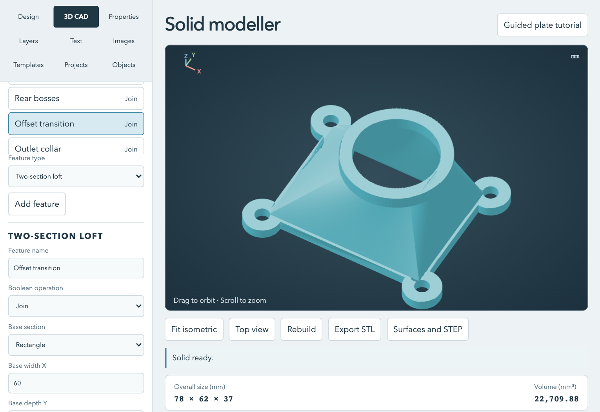
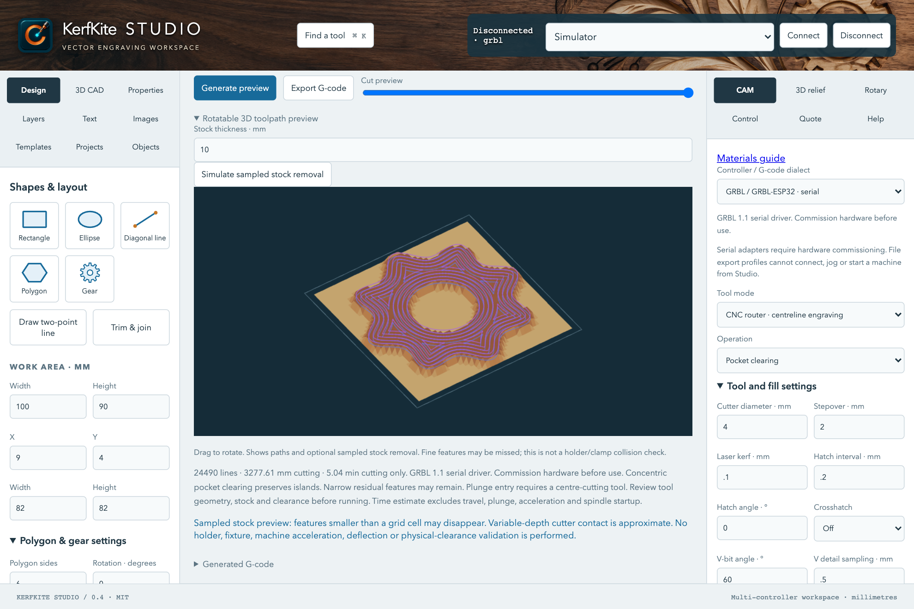
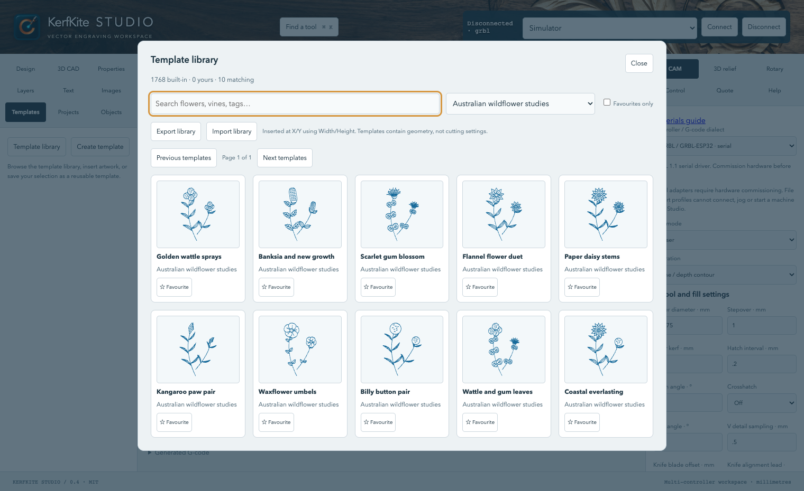
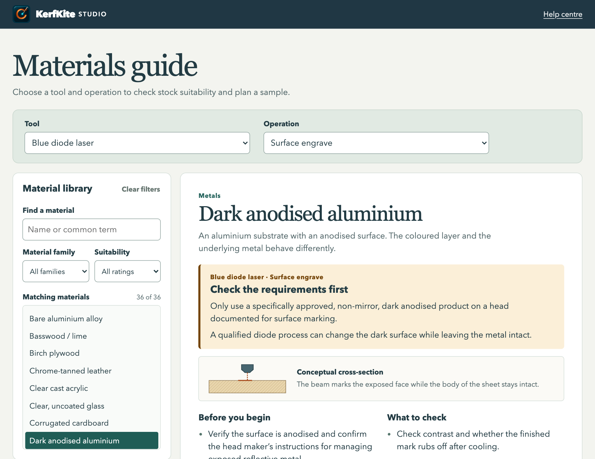
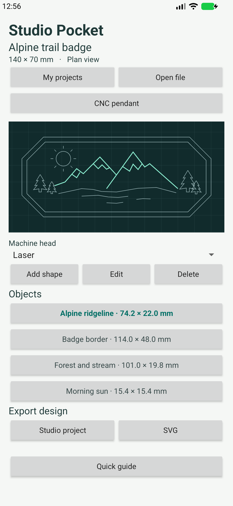
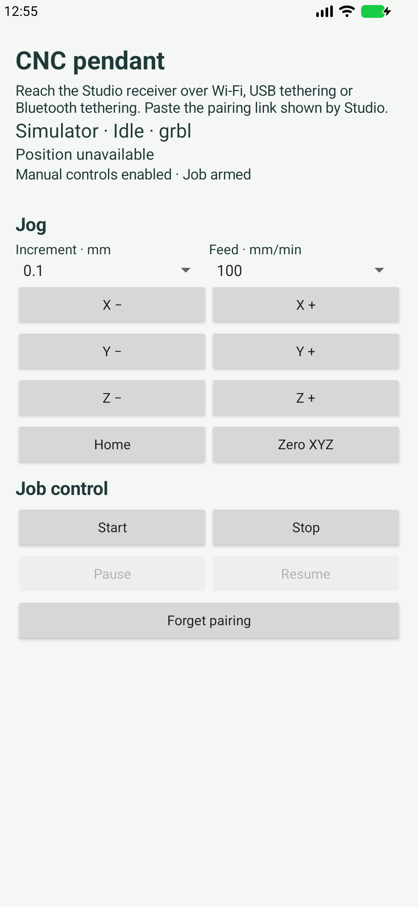
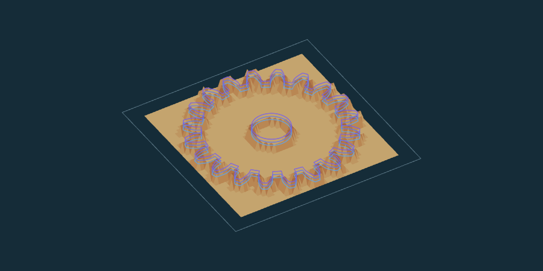
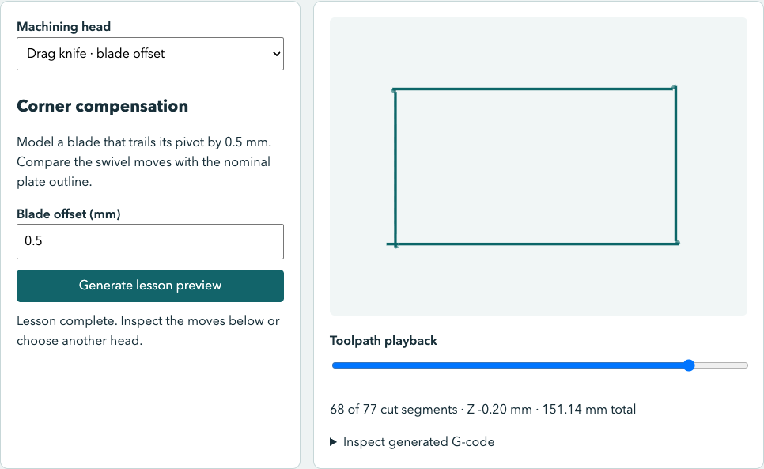

KerfKite Studio is an open-source CAD/CAM workbench for interchangeable CNC router, laser and drag-knife heads. Design in a browser, simulate a job, and prepare output for a supported controller. The Python application runs locally or as an authenticated HTTPS editor. KerfKite Pocket on Android includes an offline sketch editor and a CNC pendant paired with the Studio server.
Three botanical tags share a sheet. The Layers tab separates engraving, lettering and cut outlines.
Choose the installer for the computer where you want to design. The download links below follow the latest public release. First launch needs an internet connection to set up the desktop tools. Choose Native desktop → Start workshop to open the simulator in its own application window. Leave Open directly next time selected to start there on later launches.
| Device | Download | How to open it |
|---|---|---|
| Windows 10 or 11, 64-bit Intel/AMD | Windows setup wizard | Run Setup, then open KerfKite Studio from Start. |
| Mac | Apple silicon · Intel | Open the disk image, drag KerfKite Studio to Applications, then open it there. |
| Raspberry Pi OS, 64-bit, or Debian/Ubuntu ARM64 | ARM64 installer | Open the package in the desktop software installer, then launch KerfKite Studio from the applications menu. |
| Debian/Ubuntu, 64-bit Intel/AMD | AMD64 installer | Open the package in the desktop software installer. |
| Android 8.0 (API 26) or later, minimum supported RAM 2 GB | KerfKite Pocket APK | Open the download on the phone and tap Install. Choose CNC pendant to pair with Studio. |
The installation guide covers first launch, security prompts, updates, removal and optional STEP exchange and controller access, and the source install for HTTPS and MCP services. The release downloads also include portable Linux archives and SHA-256 checksums.
For Orange Pi, Radxa, Jetson, BeagleBoard, ODROID, LattePanda and RISC-V systems, the single-board computer guide maps each board to its installer. It also includes a browser-only edition for drawing and file export on smaller boards.
Press / above the drawing to enter rect 60 30 10 10, view front or a solid such as cube([40,25,5]);. Script… opens a source editor with measured 2D and 3D previews. Macros… lets you make a reusable command sequence or a parametric part. Try macro Mounting plate width=85 thickness=6 to create a four-hole plate. Keyboard CAD and three worked examples · Macro programming and the seven starter designs
Claude and ChatGPT can create parts, run macros, adjust the workspace and return portable projects through the Studio MCP server. The assistant opens a dedicated workshop with a simulated controller. An operator can configure a separate paired pendant or hosted file service. Assistant setup and skill installation
The desktop window has system file dialogs, undo and redo, an object list, and numeric position and size controls for drawing. Add a rectangle, ellipse or line, select it, then move it in millimetres. Preview the toolpath before exporting G-code. The full 3D CAD workspace, CAM settings and stock simulation open inside the same window. Desktop walkthrough
The Linux native window running on ARM64, with the 18-tooth gear selected.
The desktop examples in the following gallery were captured in Studio 0.4.0. The Android examples show Pocket 0.4.1. Open an image for the full-size view.
| Parametric solid CAD | Router stock simulation |
|---|---|
 |
 |
| A loft joins a rectangular inlet to an offset round outlet. Its base dimensions remain editable in the feature history. Solid CAD guide | A 4 mm pocket leaves a central island in a scalloped coaster. The preview shows the cutter path against the remaining stock. Simulation guide |
| Artwork library | Interactive materials guide |
|---|---|
 |
 |
| Select a template to place its editable paths in the drawing. Stock catalogue | Pick the tool, operation and stock to see the material-specific conditions before making a test sample. Materials guide |
| Native project editor | Paired CNC pendant |
|---|---|
 |
 |
| Edit a drawing offline, reopen a named project or export the geometry as SVG. Pocket guide | Jog or operate a prepared job through the paired Studio server. Enable Keep screen awake to keep the pendant visible while you work. This capture shows an Android emulator connected to the machine simulator. Pairing guide |
See the 0.6.1 performance measurements, the 18 November CAD and workshop review (PDF), file compatibility, controller matrix and platforms for tested scope and open work. The machine limits in the public profiles are example dimensions. Enter your measured setup before preparing a physical job.
To trim two crossing lines, open the geometry guide. In a solid sketch, you can trim a crossing, dimension a fillet or constrain a profile. A rebuilt solid can update linked machining contours, sections and reliefs. See solid CAD.
For phone control, open Control → Phone pendant on the Studio workstation and choose Enable phone pairing. Scan the QR code with Pocket, or use the private pairing link. Wi-Fi, USB tethering and Bluetooth tethering all connect the phone to the same server. See the connection guide.
Browse Templates → Template library to insert one of 1,768 editable designs across 132 categories. The collection includes Australian wildflowers, natural-history plates, woodcut landscapes, workshop tools, storybook illustrations, decorative panels and stencil lettering.
For an earlier Studio installation or another vector editor, download the SVG library. Extract it and open index.html to search the gallery or browse the SVG files by category. The template catalogue lists every category and its design count.
Open CAM → Materials guide to choose stock for a drill bit, flat end mill, ball end mill, V-bit, blue diode laser or drag knife. Compare two materials for the same operation and keep your measured sample results in a portable notebook. To use the guide on its own, download the single-file materials guide and open it in your browser. Guide and workshop examples
Workshop illustration of the three processes: cut vinyl, laser engraving and router carving.
Router stock removal. The purple lines show three 1 mm depth passes around a 20-tooth gear and its centre bore. The tan surface shows the sampled stock after a 2 mm flat end mill has followed the contours. See the stock from several angles in the router simulation video (MP4, 7 seconds).

| Laser engraving | Drag-knife cutting |
|---|---|
 |
|
| Power rises from zero over the first 5 mm of travel. Watch the laser toolpath (MP4, 8 seconds). | The pivot travels around each corner to turn a blade with a 0.5 mm offset. Watch the knife toolpath (MP4, 8 seconds). |
These captures come from KerfKite running in simulator mode. To change the settings and replay the paths yourself, open Help → Interactive machining lessons in the running app.
Start with AGENTS.md and the developer handoff for the architecture, simulation and browser tests. The command names cnc-studio and cnc-studio-web and the project format pi-cnc-studio/1 preserve interoperability with existing Studio installations.
MIT covers first-party software and documentation. Fonts, the bundled parser and native runtime components have their own licences. See the licensing inventory, contributing guide and security policy.
Assuming the official Raspberry Pi AI HAT+ 13 TOPS: this is a Hailo-8L INT8 inference accelerator. Raspberry Pi provides supported camera inference examples. It is not a general-purpose GPU or extra system RAM, and ordinary geometry/CAM code does not automatically run on it.
Recommended initial use: a fixed overhead camera feeding an optional local vision worker, reporting observations to the workstation and phone.
AI observations must remain distinct from motion control and physical interlocks. Do not use visual inference as the sole fire protection, E-stop, tool-clearance or tool-identity gate. An alert should show its timestamp, confidence and camera availability. Automatic motion actions would need a separately validated policy.
The 13 TOPS HAT runs supported compiled models; custom model training and compilation are separate workflows. No inference FPS, accuracy or actual HAT connectivity has been measured for this project. Do not install or change the adjacent AI Trainer project as part of this proposal.
For other hosts, keep inference behind a provider interface (CPU, optional Metal-capable backend, optional other accelerators). No Metal backend is implemented today. The CNC application must function without AI hardware.
The editor now captures camera images or imports image files for outline and centreline tracing. This is conventional image processing, not Hailo inference. Physical dimensions are entered by the user; lens/bed calibration, registered overlays, fiducials and reliable stock/tool identification remain outstanding. Camera tracing does not authorize motion or replace setup checks.
A bounded CAM stress test on the real Pi 5 with 8 GB completed a complex 256×256 relief fixture generating 135,886 G-code lines. Across 62 complete matching jobs, peak sampled temperature was 72.7°C, available system memory stayed above 6.2 GiB, swap use was zero and no throttling flags were reported. That test measured the calculation workload, not the full browser/UI, live control and camera pipeline together. See the stress report.
A subsequent installed optional C++ extension reduced the same fixture's complete calculation median from 2.864 s to 1.818 s, with matching G-code. The earlier standalone prototype results are historical; NATIVE.md records the integrated implementation and evidence. No Rust or HAT CAM acceleration comparison has been performed.
These results support the Pi 5 / 8 GB for the tested workload, not unlimited models or full-parity capacity. Large meshes, finer stock previews and simultaneous vision can increase CPU/memory demand. The application imposes work caps; future background/chunked CAM and full combined-workload performance still need engineering and measurement. Use active cooling for sustained processing and validate intended workloads on the deployment host. The HAT cannot substitute for CPU CAM capacity or physical commissioning.
Primary references checked 11 September 2026:
Studio Pocket combines an offline vector sketch editor with a native CNC pendant for Android. Pocket supports Android 8.0 (API 26) or later with a minimum supported device RAM of 2 GB. It uses a touch canvas and numerical dimensions. Files saved from the app open in the desktop and Raspberry Pi workstation. The current template, solid modelling and machining workflows run on that workstation.
The minimum OS comes from the APK manifest. The editor and server-paired pendant were exercised on an ARM64 emulator configured with 2 GB of RAM, and on one physical handset (see Physical handset check below).
For normal installation, download the signed KerfKite Pocket APK on the phone, open it from Downloads and choose Install.
For development, build the debug APK using Android Studio with JDK 17 or newer, Android SDK Platform 35 and Build Tools 35 installed. Open the repository’s android directory as the project. Alternatively, from the android directory run:
./gradlew assembleDebug
On Windows run gradlew.bat assembleDebug. The first build fetches the Gradle distribution, the plugin and the ZXing core library (QR decoding) from Maven Central; it uses the installed Build Tools 35.0.0. Subsequent builds can use --offline once the dependencies are cached. The installable debug APK appears at app/build/outputs/apk/debug/app-debug.apk. A debug build is a separate app: it installs as Pocket debug (au.cncstudio.pocket.debug) beside the released KerfKite Pocket, keeps its own projects, and can be removed without touching the released app. Transfer the APK to the phone and open it from Files, or choose Run in Android Studio with your development device selected.
Quick guide inside the app walks through these same controls. Clearing app data deletes its private project library. Use the system file picker to keep a portable copy.
Turn on Keep screen awake above the drawing or above Jog on the pendant to keep Pocket visible during a long job. The switch starts off. Both screens share the choice and remember it after a restart. Leaving Pocket or turning the switch off restores the phone’s usual screen timeout. You can still lock the phone with its power button.
Choose My projects → New project and give the drawing a name. Edits save to the active project in private storage. My projects also lets you switch projects, rename one, duplicate it or delete the local copy. Upgrading from Pocket 0.3.0 keeps the previous single draft as Pocket design. Export important projects before uninstalling or clearing application data.
Choose Open file, select a Studio JSON document with the Android file picker, check the object count and work area, then tap Open copy. Your active project stays in the library. Opening or editing a copy leaves the source file untouched.
Try opening a two-path desktop project containing an open line and a closed outline. Extract the artwork, edit an object's position, export it and reopen the original reference from My projects. Both drawings stay available.
Open CNC pendant in Pocket. Connect the phone and Studio receiver using Wi-Fi, a USB-tether IP link or Bluetooth tethering/PAN. The receiver continues to control the machine. See the phone connection guide for the transport setup.
Start the Studio receiver with the phone monitor and the desired remote control permissions enabled. Tap Scan QR code and hold the code shown under Phone pendant in Studio inside the square; Pocket asks for camera access the first time, and pairs as soon as the code is read. Or paste the monitor’s complete pairing link into Monitor pairing link, then tap Pair, including the token after the #. A link that ends in &fp= and a fingerprint is encrypted: Pocket 0.5.0 or later accepts only the certificate Studio created for that pairing. For an HTTPS link without a fingerprint, the certificate must match the address and chain to a system CA or a CA installed on the phone. An HTTP pairing requires explicit confirmation and a private IPv4 address or loopback.
Check the displayed receiver state, protocol and coordinate basis. Work identifies work coordinates and Machine identifies controller machine coordinates. Some controllers omit position. With a connected idle machine and manual controls enabled, select the increment and feed, then tap an X, Y or Z button for a single signed jog. Home moves the axes. Zero XYZ sets the current work origin. Both ask for confirmation.
For a job, prepare and arm the preview in Studio. Confirm Start in Pocket to run the armed job. Pause and Resume follow controller status. Stop asks for confirmation before aborting. If an acknowledgement is lost, check the receiver’s current state before issuing another action. While Pocket waits for a Start or jog response, you can still tap Stop and confirm the abort. A pending Start needs a current preview confirmation from the workstation. After a timeout, check the receiver state before arming again. If Pocket displays Update the Studio receiver for motion controls, update the receiver for motion commands; paired Stop and status remain available.
Backgrounding the pendant disables its controls. Returning to it requests fresh status. Forget pairing clears the token. Closing the pendant or restarting the app also requires a new pairing. Restarting the receiver revokes its previous link.
Portable imports accept Studio version 1 vector documents up to 4 MB, 128 objects and 100,000 XY points within the declared work area. Projects with only solid features, unsupported formats, invalid coordinates or larger geometry stay on the desktop. Pocket displays sampled planar outlines. The workstation owns 3D modelling, CAM, simulation and the controller connection. Portable import and export use Android’s system document picker; project files require no storage permission.
On 21 November 2026 the published Pocket 0.4.1 APK was exercised on a Samsung Galaxy S23 Ultra (SM-S918B, Android 17 / API 37, One UI 9.0, display set to 1080 × 2316) over wireless ADB. The installed package had the same SHA-256 as the release download. The pendant ran against Studio 0.6.1's simulated GRBL controller on a Windows workstation over Wi-Fi; no machine was connected.
| Check | Result |
|---|---|
| Cold start | Two cold starts, 273 ms and 499 ms, with no crash or not-responding entry |
| Project exchange | A two-shape drawing exported as pi-cnc-studio/1; Studio generated G-code from the file; the drawing survived a cold restart and reopened from the file as a copy |
| Layout | In portrait and landscape every control cleared the status bar, camera cut-out and three-button navigation bar |
| Pendant | Pair, 0.1 mm X jog, Home, Zero XYZ, Start, Pause, Resume, Stop and Forget pairing; each action reached Studio once |
| Background return | With a job running, Pocket spent 6 s in the background, returned to the pendant from the launcher and Stop then aborted the job |
| S Pen | 53 pen contacts were recorded. Add shape, Apply and the objects list worked with the pen as a pointer. Pressure and hover are not used |
validation/android_handset_pendant_workflow.py repeats the pendant and background-return rows on a supervised handset. The device workflows drive the debug build; set KERFKITE_POCKET_PACKAGE=au.cncstudio.pocket to drive the released app. Add --encrypted to pair through Studio's pinned HTTPS listener. validation/android_handset_selection_workflow.py adds three overlapping rectangles to the debug build's drawing and checks that each can be selected by tapping the preview. validation/pairing_qr_check.py --zxing <core jar> needs no phone: it decodes the pairing codes Studio draws with Pocket's own decoder from simulated camera frames. The workstation firewall must admit the handset on the monitor port: the first attempt showed The receiver timed out until the inbound rule covered every network profile.
Selection defect found in this check. In Pocket 0.4.1 a new shape is placed at the same default position and size as the previous one, and a tap in the drawing preview selects only the topmost shape whose bounding box contains it. Two shapes left at the defaults therefore overlap exactly, and the lower one can be selected only from the objects list. Of 44 pen taps on the preview, 31 landed inside the shared box and selected the topmost shape each time, and 13 missed the box by a few pixels because the test had no tolerance. Injected finger and stylus taps behaved identically, so this is not specific to the pen. The source after 0.4.1 steps each new shape clear of the last, cycles through overlapping shapes on repeated taps and accepts taps within 12 dp of a shape. Replaying the 13 recorded near-miss taps through that logic registers 12 of them. The change has been compiled and checked off-device; it has not yet been run on the handset.
Not exercised on the handset: the Keep screen awake switch, the pendant in landscape, the panel's full-resolution display mode, USB and Bluetooth tethering, the HTTPS monitor, and any physical controller.
Open 3D CAD → Assembly mates & interference in the running Studio app or hosted editor. You can fit a shaft to a bore, place a fixture plate or check the fit of several modelled components. Dimensions use millimetres and rotations use degrees.
20, 15, 0 to 24, 15, 0 and choose Solve & check. Both parts turn red. The report identifies the interfering pair and gives their common volume in mm³.20, 15, 0. Set Shift in datum XYZ to 0, 0, 3 and solve. The shaft slides along the bore. Drag the view or focus it and use the arrow keys to orbit.Build a part in 3D CAD. Open the assembly and choose Insert current solid to capture its parametric feature history in the project. Give it a name and click Rename part. Repeat for additional parts. To feed a revised solid into an existing instance, select it and click Replace selected geometry. The part keeps its local datum and mates.
Independent parts have a world origin and XYZ rotation. To constrain a part, select it, choose its parent under Mate to, and enter datum origins and orientations in each part’s own coordinates. Each datum's Z axis defines its normal or joint axis. Rotations apply about X, then Y, then Z. Opposing face normals can be matched by rotating one reference frame by 180° about its local X or Y axis.
| Mate | Allowed motion |
|---|---|
| Fixed frames | Coincident origins and matching orientations. |
| Coincident planes | Translation along parent datum X and Y and rotation about Z. |
| Concentric axes | Translation along the common Z axis and rotation about Z. |
| Coincident points | Rotation about all three axes at the shared point. |
Moving a parent moves its descendants when you solve. The initial placement uses one driving mate per child. Additional geometric mates can close loops and constrain the remaining sliding or rotating axes. The driving tree itself must be acyclic. Independent part placements stay fixed. Independent roots give you multiple subassemblies in the same document. To release a mate, choose Independent placement and enter the desired world pose. Release child mates before removing their parent.
Studio uses bounding boxes to shortlist pairs, intersects the transformed manifold solids and measures any positive overlap over 0.000000001 mm³. Contact within 0.000001 mm is reported separately. Contact and overlap are computed on the solid kernel's tessellated geometry. Curves are approximated by facets. Fit tolerances should account for that approximation and the manufacturing process.
This check describes the assembled pose. Moving through intermediate positions, evaluating machine travel and toolholder clearance requires a separate motion analysis. The solver accepts up to 24 part instances and 150,000 triangles across the assembly. Project files store parametric inputs and mates; reopening the assembly rebuilds the preview.
Open Try bearing tutorial and select the shaft. Its concentric driving mate leaves axial travel and rotation free. Open Additional mates, select the bearing plate and choose Coincident planes. Set the other datum origin to 0, 0, 8 and the selected datum origin to 0, 0, 2. Choose Add mate. The solver seats the shaft at Z = 6 while keeping its centre on the bearing axis. Save assembly to project retains both relationships.
Add a fixed, point, plane or concentric mate between two different parts. Up to 48 additional relationships may use local origins and orientations. The numerical solver starts from the entered driving-joint positions. If the constraints conflict, or the initial pose is unsuitable, it reports failure and prevents saving an unsolved edit. Remove a relationship or change its datums and solve again. Remaining free axes retain their starting position where possible.
Created with the built-in image-generation tool, 11 September 2026. Project copies: studio/static/app-icon.png and studio/static/header-wood.png. These are generated brand illustrations, not photographs of completed physical machining. The artwork predates the KerfKite name. The descriptions below summarise its design briefs.
Create a professional wide website header background image for an open-source CNC router and laser design program originally named Pi CNC Studio. Landscape panoramic 3:1 composition, warm premium walnut and maple wood grain, realistic macro craftsmanship. At the right third a beautiful flowing botanical flourish and a small precise spur-gear motif are machined into the wood: some smooth deep V-carved router grooves revealing pale fresh timber with convincing depth and bevel shadows, alongside dark crisp fine laser-engraved linework. Flat overhead view, subtle raking warm light. Left half is quiet dark walnut negative space so HTML white app title can overlay legibly. Sophisticated maker workshop aesthetic, restrained, high quality, no machine hardware, no sparks, no text, no letters, no watermark, no border. Deliver a finished banner texture suitable for cropping to a shallow application header.
Design one finished square application icon for KerfKite Studio, an open-source CNC router, laser engraving and vinyl cutting application. Bold memorable precision-machining emblem: a single substantial copper-orange C-shaped routed channel forms a clean circular toolpath around a small cyan-blue diamond laser point, with one short diagonal cutter stroke implying creation and motion. Deep midnight teal rounded-square tile, subtle dimensional beveled edges and finely machined metal/wood inlay texture, refined orange and cyan accents, strong simple silhouette readable at 32 pixels, centered with generous safe padding. Contemporary professional maker CAD/CAM identity. No text, no letters as typography, no tiny decorative details, no multiple icons, no mockup/device, no watermark. Full square image with solid background.
The README uses studio/static/workshop-artwork.jpg, generated with ImageGen. The application header uses the original engraved timber artwork.
Design prompt
Create a wide landscape editorial workshop photograph-style illustration for a CNC design software README, landscape 3:2 or wider, optimised for a wide header. Three tactile workshop samples fill the composition edge to edge in a single cohesive overhead still life under warm raking daylight. The foreground hero on the left is an intricate layered matte teal, golden ochre and muted coral kingfisher cut-vinyl decal on ivory release liner, crisp cut silhouettes forming wing feathers, a corner of transparent transfer tape lifted with a small piece of negative vinyl peeled back. In the centre a pale maple panel carries delicate dark laser-engraved linework of reeds and rippling water with charred fine outlines. On the right a walnut block has deep CNC router-carved wave relief and a bevelled edge with pronounced shadows and visible wood grain. Each process is immediately distinguishable through material, depth and finish. Cropped workbench, uncluttered, professional macro craft photography, elegant natural materials. No lettering, numbers, logos, watermark, machines or people.
The three PNG stills and silent MP4 clips in the README were captured from KerfKite with hardware disabled. The router clip rotates the editor’s sampled stock view. The laser and drag-knife clips advance the playback slider in the corresponding machining lessons. Playback illustrates move order and is independent of machine feed rate.
A macro saves a drawing recipe with named numeric parameters. Use a command macro for separate objects on a layer, such as a border and its alignment line. Use a CAD script macro for a single profile or a solid that needs holes, curves or repeated features.
Open Macros… beside the drawing command field, or enter macros in the field. The library includes a Drawing frame and a Drilled spacer. Select one to inspect its source and defaults. Use Duplicate to make your own version.
Border and select Drawing and view commands.width with a default of 18.rect {width} 6 1 2
line 1 5 $width 5
fit drawing
The rectangle starts at X 1, Y 2. At the default width it ends at X 19, Y 8. The independent line goes through the middle of the border from (1, 5) to (18, 5). Close the library and enter macro Border width=32 in the drawing command field for a second set. Both rectangles start at the same point, so their left edges overlap. Move one to see them side by side.
Use rect (or rectangle), circle, line, or a supported view command on each line. Both {width} and $width stand for a numeric argument. Blank lines and comment lines beginning with # or // are available for notes. Studio checks the sequence before applying it. If a later line contains an invalid command, fix that line and run the sequence again.
Create a macro named Strip, select OpenSCAD-style model and add two parameters, width with a default of 12 and offset with a default of 0. Paste this source, save the macro and close the library.
translate([offset, 0, 0]) cube([width, 6, 3]);
From the command field, run each of the following commands separately in a fresh part.
macro Strip width=20
macro Strip offset=40
view top
The first strip spans X 0–20. The second uses the default width and spans X 40–52. They are separate pieces of material in the same model, with a combined volume of 576 mm³ and overall dimensions of 52 × 6 × 3 mm. The model history records each run as an editable scripted feature. Dimensions are in millimetres. For a bore or a repeating feature, use the same difference(), for and module syntax as in the script editor. CAD script language and worked examples
Save stores a definition in the current browser profile. A parameter’s default controls future runs. Change its run value to try another size. Run can also execute the current draft. Save keeps that draft for the next session.
Use Export in the macro library to download a JSON file. On the other computer, open the library and choose Import to select that file. Import merges the definitions with the destination library. An identical definition can be imported again. A different incoming definition with an existing name gets a separate name. Export also provides a backup when changing browser profiles or clearing site data.
To give someone both the design and its reusable recipes, save the Studio project and export the macro library. The project carries the geometry created by each run. To regenerate a CAD script macro on the receiving machine, use an installed Studio service or a hosted workshop with script compilation.
The seven recipes below are available the first time you open the library. Dimensions in the table use the shipped defaults. Search by name, select an entry and inspect its source to see how its geometry is built. In a fresh project, run macro Mounting plate and view top to inspect the plate by itself.
| Macro | Default result | Parameters and a change to try |
|---|---|---|
| Drawing frame | One 60 × 30 mm rectangle at the origin, followed by a fitted drawing view. | width, height. Try macro Drawing frame width=90 height=40. |
| Fastener layout | Four 4 mm diameter circles with centres at (8, 8), (52, 8), (52, 28) and (8, 28). | radius, left, right, bottom, top. Set right=72 to widen the spacing. |
| Rounded tag | One 60 × 24 mm flat outline with 4 mm corner radii and a 5 mm hole at (8, 12). | width, height, corner, hole. Keep the hole clear of the edge when changing the corner radius. |
| Slotted panel | One 80 × 40 mm flat panel with four 34 × 3 mm round-ended slots. Their centre lines fall at Y 8, 16, 24 and 32. | width, height, slots, slot_length, slot_width. Set slots=3 to space three slots evenly. Use a positive whole number for the count. |
| Drilled spacer | An 18 mm diameter, 8 mm tall cylinder with a 6 mm through-bore. | outer, bore, height. Try macro Drilled spacer outer=24 bore=8 height=12. |
| Mounting plate | A 70 × 40 × 5 mm solid with four 4 mm through-bores. The holes lie 7 mm in from each adjacent edge. | width, length, thickness, margin, bore. Increase width to move the right-hand hole pair. |
| Flanged bushing | A 14 mm diameter body with a 22 mm diameter flange and an 8 mm through-bore. Overall length is 16 mm, including the 3 mm flange. | body, flange, bore, length, lip. Keep the bore smaller than the body to retain a wall. |
Macro names are unique in a library, ignoring case. Spaces are allowed. Type macro Drilled spacer height=12 without quotation marks. Separate assignments with spaces and keep each name=value together. Macro names can contain 1–64 characters, excluding control characters and the equals sign. Parameter names are case-sensitive. Start with an ASCII letter or underscore and use letters, digits and underscores thereafter. Choose descriptive names such as bore_diameter. Language keywords such as for and module, and reserved names such as constructor, cannot serve as parameters.
A parameter name can be up to 40 characters. Every parameter needs a finite numeric saved default from −100000 to 100000. The same range applies to run values. Blank This run fields use those defaults. A value entered for this run or supplied on the command line takes precedence for that run. A CAD script macro receives the resulting values as named parameters. They override same-named part parameters and source defaults. The applied scripted feature keeps its per-run inputs, so changing the library default later leaves that instance at the size it was built.
| Command in a sequence | Arguments and units |
|---|---|
rect width height [x y] or rectangle width height [x y] |
Width and height must be positive. Optional X and Y give the lower-left corner in millimetres. Both default to zero. |
circle radius [cx cy] |
A positive radius followed by an optional centre in millimetres. The default centre is (radius, radius). |
line x1 y1 x2 y2 |
Two distinct endpoints in millimetres. |
fit, fit drawing, fit bed |
Frame the current workspace, visible drawing objects, or full work area. |
view top, bottom, front, back, left, right, iso |
Set the solid camera orientation. view is optional for named orientations. |
zoom factor, pan dx dy, orbit yaw pitch |
Zoom by a positive factor, pan by pixels or orbit by degrees. |
A parameter placeholder replaces one complete numeric token in a command sequence. For arithmetic, loops and geometry combinations, choose OpenSCAD-style model and use expressions such as width/2 and for (i=[0:3]). A script can yield one planar region with several contours or one solid with several connected components. A script that combines 2D and 3D shapes needs an explicit conversion such as linear_extrude() or projection(). Script reference and examples
A library can hold 100 definitions, with up to 32 numeric parameters per definition. Each UTF-8 source can occupy up to 64 KiB. The exported or merged library must fit within 1 MiB. A command sequence can contain up to 256 executable lines. The destination project can contain up to 3,000 paths and 100,000 drawing vertices after applying a command sequence. Scripted geometry has additional tessellation and evaluation limits.
To author a portable library by hand, save the following UTF-8 text in a .json file, choose Import JSON…, then run macro Label width=45. The example adds a 45 × 12 mm rectangle. kind accepts commands or scad. In JSON, use \n between source lines. Each definition supplies parameters, including an empty {} for recipes with no parameters.
{
"format": "kerfkite-cad-macros",
"version": 1,
"macros": [
{
"name": "Label",
"kind": "commands",
"source": "rect {width} 12\nfit drawing",
"parameters": {"width": 30}
}
]
}
The manager checks the entire import before adding definitions. For a name collision with different source, kind or defaults, look for the incoming name with a numeric suffix such as Label (2). The exported file contains the saved definitions and defaults. Choose Save macro before exporting to include your current edits. Duplicate creates an editable copy. Delete… removes the selected saved definition from this browser after confirmation. If another window changes a definition you are editing, duplicate your draft or reopen the latest saved entry.
| Editor feedback or symptom | What to inspect |
|---|---|
| Unknown parameter | Match case and spelling with the parameter table. In command sequences, use {name} or $name. In script source, use the bare name. |
| Error on line N | Inspect that line before running again. A negative circle radius or repeated line endpoint is invalid. A syntax error in script source can also identify a column. |
| Shape exceeds the work area | Check both the size and the position. A circle centred at X 0 extends past the left edge for any positive radius. |
| Repeated run appears to do nothing | Instances at identical coordinates overlap. Change a position parameter or select one instance and move it to inspect both. |
| Empty script result or excessive geometry | Check the input dimensions and booleans. Use a smaller $fn, fewer copied features or fewer extrusion slices. |
| The library is missing on another device | Use Export library… in the source browser, then Import JSON… in the destination browser. Project files and macro libraries have separate formats. |
| Cannot save in this browser | Check site-storage permission and available space. The local-file and hosted editors can have separate browser storage. |
KerfKite has a command line above the canvas and a multiline CAD script editor. Use the command line for a measured shape or camera move. Use a script for a part whose holes, dimensions or repeated features should change together. Lengths are in millimetres and angles are in degrees.
To keep a command sequence or script as a named recipe, open the macro library. You can give a recipe numeric parameters and share it with another workshop. Create and run CAD macros
Open an installed Studio workshop in simulation, or sign in to a hosted workshop. Click the drawing canvas and press /. Type rect 60 24 10 15 and press Enter. A 60 × 24 mm rectangle appears with its lower-left corner at X 10, Y 15. Enter circle 3 18 27 to create a separate circle with a 3 mm radius. Enter fit drawing to frame both objects. Each command creates ordinary, selectable artwork on the active layer.
For a single object with a hole, use a script. The local-file Browser Editor can open and save script text and run the quick drawing and 2D view commands. Script geometry compilation requires the installed Studio service or a hosted workshop.
edit. Change tag_length to 80, preview, then apply. The revised tag keeps its placement.tag_length = 68;
tag_height = 24;
hole_diameter = 5;
$fn = 64;
difference() {
hull() {
translate([tag_height/2, tag_height/2]) circle(d=tag_height);
translate([tag_length-tag_height/2, tag_height/2]) circle(d=tag_height);
}
translate([8, tag_height/2]) circle(d=hole_diameter);
}
The initial tag spans X 0–68 and Y 0–24. A new script uses its own XY coordinates on the drawing bed. If its bounds extend beyond the bed, Studio translates it just far enough to fit and reports the offset. A shape larger than the bed requires resizing in the source or a suitable work area. Rebuilding an existing scripted object preserves whole-object movement, rotation and scaling. After editing individual nodes or assigning per-vertex machining values, use New for a separate scripted copy.
Start a new project to inspect this part by itself. Choose Script… → New, paste the program and preview it. The first solid in difference() supplies the plate. Each instance of drill_at removes a cylinder extending 1 mm past both faces.
plate_width = 70;
plate_depth = 36;
plate_height = 5;
margin = 6;
$fn = 48;
module drill_at(x, y, diameter=4) {
translate([x, y, -1])
cylinder(h=plate_height+2, d=diameter);
}
difference() {
cube([plate_width, plate_depth, plate_height]);
for (x = [margin, plate_width-margin], y = [margin, plate_depth-margin])
drill_at(x, y);
}
Apply the 70 × 36 × 5 mm solid. Enter view top and check the four holes. Their centres are at X 6 or 64 and Y 6 or 30. Try front, iso, orbit 15 10 and zoom 1.25. A view change moves the camera without changing the part.
Select the scripted feature in 3D CAD and choose Edit CAD script…. Increase plate_width to 85 and apply. The right-hand holes move to X 79. A named part parameter with the same name overrides its script default. For a drawing, Studio stores a copy of the part parameter values used at creation. For a solid feature, rebuilding uses the part's current parameters.
Use a new project for a separate dial. The two end diameters define the taper. The loop rotates a radial hole around the Z axis in equal increments. Change holes from 8 to 6 and press F5 to compare the pattern before applying.
holes = 8;
dial_height = 12;
pitch_radius = 9;
$fn = 64;
module through_bore(diameter) {
translate([0, 0, -1]) cylinder(h=dial_height+2, d=diameter);
}
difference() {
cylinder(h=dial_height, d1=32, d2=26);
through_bore(6);
for (i = [0:holes-1])
rotate([0, 0, i*360/holes])
translate([pitch_radius, 0, 0]) through_bore(2.4);
}
The preview spans 32 × 32 × 12 mm. Drag the preview to inspect the taper. Use the top view of the applied model to inspect the hole spacing.
Open .scad… loads source for editing. Save .scad downloads the contents of the source field, including unapplied edits. Save the Studio project after applying to preserve geometry, editable source, layers and feature history together. To add a separate scripted feature while another one is selected, choose New in the script editor. A new solid uses the Join operation in the current part.
Export STL writes the tessellated solid for mesh exchange. Exact STEP export works with supported exact CAD features. If a part contains an active scripted feature, Studio reports that its surfaces are tessellated. Use STL for the complete result, or suppress the scripted features to export the remaining exact part. A geometry preview describes the design. To produce a machining file, transfer or select the desired geometry, set the CAM operation and generate a toolpath preview.
In the Command field, Enter runs one command. ↑ and ↓ recall recent entries. Escape leaves the field. Type help or choose ? for the command reference. The / shortcut is available outside input fields and dialogs when the pendant is inactive.
| Command | Effect |
|---|---|
rect width height [x y] or rectangle width height [x y] |
Add a rectangle. The default lower-left corner is (0, 0). |
circle radius [cx cy] |
Add a circle. Its default centre is (radius, radius), which keeps it on the positive bed. |
line x1 y1 x2 y2 |
Add an open path between two different points. |
script, edit |
Open the script editor for the selected scripted drawing or solid feature. |
cube([40,25,5]); |
Compile the entered script statement and add its result. An expression such as circle(r=4); produces a scripted 2D region. |
top, bottom, front, back, left, right, iso |
Open the 3D viewport at the named orientation. The optional prefix view works with these commands. |
fit, fit drawing, fit bed |
Frame the current geometry, visible 2D artwork, or the full drawing bed. |
zoom factor, pan dx dy |
Zoom by a positive factor (1.25 enlarges, 0.8 reduces) or shift the picture by screen pixels. |
orbit yaw pitch |
Rotate the solid view by two angle increments in degrees. |
Click the appropriate viewport before using its keys. The Drawing view and View orientation menus provide alternatives on keyboards without a numeric keypad.
| Context | Keys or gesture | Effect |
|---|---|---|
| Drawing or solid viewport | F, + / − | Fit visible geometry, zoom in or zoom out. |
| Drawing viewport | Arrow keys, middle-drag, scroll | Pan with arrows or drag. Scroll to zoom around the pointer. |
| Solid viewport | Arrow keys or drag | Orbit. Use Shift+arrow, Shift+drag or middle-drag to pan. |
| Viewport | Num 0 / 1 / 9 / 3 / 4 / 7 / 2 | Isometric / front / back / right / left / top / bottom. |
| Script editor | F5 | Build the preview. Drag a solid or scroll to inspect it. |
| Script editor | Ctrl+Enter, Command+Enter or F6 | Build and apply the current source to the project. |
Studio implements a geometry-focused subset of OpenSCAD syntax. Each script produces one 2D or one 3D result. Multiple top-level shapes of the same dimension form a union. Use extrusion or projection to cross between 2D and 3D. Source errors identify the affected line and column where available.
| Construct | Supported forms |
|---|---|
| 2D primitives | square(size, center), circle(r=…) or circle(d=…), polygon(points, paths). Polygon paths index into points and can describe holes. |
| 3D primitives | cube(size, center), sphere(r=…) or sphere(d=…), cylinder(h=…,r=…), tapered cylinders with r1/r2 or d1/d2, convex polyhedron(points, faces) with planar faces wound clockwise from outside. |
| Shape combinations | union(), difference(), intersection(), hull(). Put child shapes inside braces. |
| Transforms | translate(v), rotate(a) or rotate(a,v), scale(v), mirror(v), multmatrix(m) with an affine 3×4 or 4×4 matrix. A 2D drawing stays in the XY plane. |
| Shape conversions | linear_extrude(height=…,center=…,twist=…,slices=…,scale=…), rotate_extrude(angle=…), offset(r=…) or offset(delta=…,chamfer=…), projection(cut=false) for a silhouette or projection(cut=true) for a Z=0 section. |
| Parameters and expressions | Numeric assignments, true / false, PI, vectors, indexing, parentheses, + - * / % ^, comparison operators, `! && |
| Math functions | abs, sign, sqrt, pow, exp, ln, log (base 10), round, ceil, floor, min, max, sin, cos, tan, asin, acos, atan, atan2, len and norm. |
| Repetition and reuse | module name(args) { … }, function name(args) = expression;, positional and named arguments, parameter defaults, children(), children(index), $children, if (…) … else …, for (i = …) …, vector comprehensions and inclusive ranges [start:end] or [start:step:end]. A descending range uses a negative step. |
| Curves and comments | $fn sets facet count on supported curved geometry. Use // for a line comment and /* … */ for a block comment. |
OpenSCAD library directives (include, use), file-backed import, string and text geometry, animation and preview modifiers are outside this subset. Open existing scripts in Preview to check compatibility. The compiler accepts up to 64 KiB of UTF-8 source, checks numeric and recursion limits, and caps range and geometry complexity. Reducing $fn, the number of loop instances, or extrusion slices can keep a detailed model within those limits.
Under Images, the Camera bed registration panel places a frozen camera image and its traced paths in millimetres on the design bed. Choose four-point perspective registration or nine-target registration with radial lens correction. Camera access is optional and begins only when you press Open camera. You may supply an image file instead.
Place four targets on the same plane as the artwork, spread around the region to be traced. Measure each target's X and Y in the work coordinate system. Select the correct machine profile and bed size. In Image & camera line tracing, load a still image or open the camera and capture a frame.
Select marker 1, click the corresponding target in the frozen registration image, and enter its measured Work X and Work Y. Repeat for markers 2–4. Image pixel coordinates can also be typed. Use Solve registration. To check accuracy, select Independent check point, click a fifth landmark, enter its measured work coordinates and choose Measure check error. The reported error in millimetres is specific to that checkpoint.
Save for this profile stores landmark coordinates and bed dimensions in this browser for the active account and selected machine profile. For subsequent frames from the same fixed camera, use Recall profile calibration. Recall checks the work area and image aspect ratio. Recalibrate when the camera position, zoom, crop, work origin or stock surface height changes. Images of the same aspect ratio can still have different optics or framing.
The overlay covers the quadrilateral enclosed by the measured targets. Registered tracing rejects contours extending outside it. Add preview to project in the basic tracing panel uses numeric width, height and shape placement. Place previewed trace on bed uses the measured camera mapping.
Choose Perspective and radial lens · nine targets when straight lines bend towards the corners of the image. Targets 1–4 define the outer work quadrilateral. Place five further measured targets inside this region at different distances from the image centre, including positions near each side. Keep a tenth measured point for an independent check. Select each target, click its centre in the frozen image and enter the matching work XY. Repeated points, poor target spread and implausible lens coefficients produce an error.
Set Maximum target error to the largest fit residual you can accept for this job, in millimetres. Solve registration fits a centred, one-coefficient radial division model and a planar perspective transformation. Distances use square-pixel coordinates with the image aspect ratio. The report shows the root-mean-square residual and worst residual over the nine fitted targets, plus the fitted coefficient. Choose Independent check point, enter the separately measured point and choose Measure check error. A small fit residual alone cannot measure physical accuracy.
Try lens calibration card loads a synthetic barrel-distorted image with known target coordinates. Solve or recall its fit, inspect the bed overlay, measure the check point and place its rectangle through Preview trace → Place previewed trace on bed. Long traced line segments are subdivided as needed when the lens transformation bends them in work coordinates. Save for this profile retains the measured correspondences, model, allowed error, bed size and aspect ratio. Earlier four-point calibrations still open.
The trace input is downsampled to at most 384 pixels per side. Both models assume a flat work plane. Tangential or decentered lens distortion, fisheye optics, parallax above the measured surface and 3D camera pose require other models or measurements. Test a known target on the actual stock plane before relying on placement accuracy. Radial division model
KerfKite Studio opens a native window on macOS, Windows and Linux. The native object list and numeric geometry controls work on the same document as the canvas, layers and CAD tools. Dimensions are in millimetres. X and Y locate the lower-left corner of an object's bounding box.
.cncstudio.json project in another desktop installation or in the browser editor's Projects tab. Use Save As for a separate working copy.When Open directly next time is selected, the next launch opens the native simulator window directly. Closing that window shows the launcher. Choose Show setup next launch there to change STEP or controller options on the next start. Controller access always requires an explicit choice in setup.
The native file commands read and write ordinary files. Browser-library saves belong to the browser or embedded engine profile that created them. To bring an existing browser-library project into a native window, download its portable project file, then open that file from the native File menu.
The full CAD, simulation and advanced machining panels use the shared editor inside the desktop window. The Android companion has its own interface and connects to the workshop service for pendant use.
To work from the keyboard, focus the canvas and press / for drawing and view commands. Choose Script… to preview and edit a parameterised drawing or solid. CAD scripting tutorial and shortcut reference
KerfKite Studio combines a browser-based design workspace, a Python CAD/CAM service and a separate machine sender. The Raspberry Pi runs the same geometry and CAM code as the desktop service. The native Android companion is a smaller editor and client with its own build.
Use 64-bit Python 3.12 and a C++ compiler for the optional accelerated relief extension. Install Node.js 22 for the JavaScript checks. Create a virtual environment, activate it, then run these commands from the repository root. STEP exchange needs a platform with a compatible Open CASCADE wheel.
python -m pip install -e ".[web,step,mcp]"
python -m pip install markdown-it-py playwright
python -m playwright install chromium
python -m studio.server --port 8765
Open the printed loopback address. Keep the server's default simulator setting. For the filesystem-only editor open studio/static/index.html directly. Its supported CAM subset runs in JavaScript. STEP, assembly solving, fixture checks, bundle inspection and DXF parsing use the Python service.
| Responsibility | Entry points | Change contract |
|---|---|---|
| Project versioning, named documents, recovery | studio/static/app.js, projects.js, design-layers.js |
A portable pi-cnc-studio/1 file contains editable objects, settings, metadata and extras. Design layer visibility and output are independent. CAM uses millimetres, feed in mm/min, Z zero at the stock surface and negative cutting depths. |
| Solid features, sketches, surfaces and assemblies | studio/solid_cad.py, cad_exchange.py, assembly.py; their browser modules |
Keep input parameters and source geometry in project extras. Meshes and solved poses are derived. STEP files use Open CASCADE; the editable feature history stays in the Studio project. |
| Import and migration | studio/static/interchange.js, lightburn-import.js, studio/program_import.py, import_bundle.py |
Stage a report with objects, layers, devices, presets, warnings and head mode. Put each object's source layer key in sourceLayer. Preview first, apply in one edit and keep new layer output disabled for operator review. |
| CAM and simulation | studio/cam.py, operations.py, relief.py, fixture_collision.py, simulation.py, studio/static/offline-cam.js |
Derive preview and postprocessed output from the same document. Test the posted instructions as well as the displayed paths. Validate footprint, units, motion dialect and work frame explicitly. |
| HTTP services and machine transport | studio/design_api.py, server.py, web_server.py, device.py, protocols.py |
Register a design route once for both authenticated hosted and local services. A design route has no machine access. Keep preview, phone arming, transport and direct machine commands in their existing boundaries. |
| Other clients | studio/mcp_server.py, android/, studio/static/monitor.js |
Test the client that actually consumes a change. Desktop solid modelling is distinct from the Android companion's supported operations. |
Browser scripts are loaded as classic scripts from studio/static/index.html. Several editor modules extend common functions in load order. Features that reference the tab panels mount after tool-tabs.js. When a project opens or resets, listen for cnc-project-loaded to refresh controls. Notify project persistence through cnc-project-changed for edits stored in extras.
Large stock previews POST to the authenticated /api/simulate design route. A session advertises
stock_wire_v1 when it accepts the little-endian application/vnd.kerfkite.stock-v1 layout in
studio/stock_wire.py and studio/static/stock-wire.js. The header and its segment count bound
the request before the grid calculation. JSON clients use the same parameter validation and result
shape. The file editor runs its existing JavaScript simulator locally.
python scripts/simulate_studio.py --all --require-step --json simulation.json
python validation/simulate_solid_workspace.py
python scripts/build_help.py
bash scripts/ci-local.sh --list
Use --browser PATH to select an installed Chromium executable. The browser harness starts its own simulator-only service and temporary browser profiles. The JSON report includes each scenario's measurements and skipped checks. --require-step makes a missing STEP runtime a failure. The repository also has OS-specific local checks in scripts/ci-local.sh and Android build instructions in Android. Write diagnostic reports outside the source tree when they contain local paths.
To extend DXF import, add a small, independently authored fixture to tests/test_program_import.py. Decide how unsupported entities, XY projection and unit conversion should appear in the review. Implement the reader in studio/program_import.py. Verify its numerical result, handle a malformed variant, and test review → enable layer → CAM → project reopen in validation/import_fixture_workflow.py. Add the supported entity and limits to Program import. Importing artwork never grants permission to send a program to a device.
For future work, use the acceptance matrix and the specific workflow guides. Physical cutting, measured camera lens accuracy on the stock plane, arbitrary curve constraints and general assembly solving, additional native vendor formats, and platform-specific binary redistribution each require their own validation.
The Android and MCP clients retain their legacy 680 × 240 mm example canvas for project compatibility. These dimensions describe an editing canvas. Configure each machine using its own measured travel and origin.
The paired phone listener is managed by studio/phone_monitor_service.py. Its authenticated API is in studio/monitor.py. The native client and activity are in the Android Pocket package. tests/test_phone_pendant.py exercises action bounds and revocation. validation/android_pendant_workflow.py drives an emulator against the simulator.
For sketch constraints, start with studio/sketch_constraints.py and studio/sketch_profile.py. Supplementary assembly mates are solved in studio/assembly_constraints.py. The browser tracks linked CAD geometry in studio/static/solid-links.js. The browser harness exercises crossing lines, linked contours and reliefs, and parameter-driven sketches.
| Workflow | Source | End-to-end check |
|---|---|---|
| Curved parametric sketches and two-section lofts | studio/sketch_curves.py, studio/solid_loft.py, studio/solid_cad.py, studio/cad_exchange.py |
validation/sketch_join_workflow.py and validation/loft_workflow.py |
| Vector SVG and PDF input | studio/static/svg-import.js, studio/pdf_import.py |
validation/svg_import_workflow.py and validation/pdf_import_workflow.py |
| Router entry, drilling and tab placement | studio/router_entry.py, studio/drilling.py, studio/static/tab-placement.js |
validation/router_entry_workflow.py, validation/drilling_workflow.py, validation/placement_workflow.py |
| Labels, grouping, machine profiles and calibrated quotes | studio/static/production-labels.js, placement.js, machine-library.js, cycle-time.js |
validation/production_label_workflow.py |
| Native Android project storage and interchange | DraftLibrary.java, ProjectFile.java in android/app/src/main/java/au/cncstudio/pocket/ |
validation/android_projects_workflow.py |
The desktop and hosted editors share the Python CAM service. When adding CAM algorithms, exercise the offline JavaScript implementation on the same inputs or report the server requirement before generating a file. Comparing emitted tool positions, power, depths and stock removal catches regressions that a successful HTTP response would miss.
The desktop packaging guide covers the release builds, runtime locks, Android signing and clean-install checks.
The Go launcher in packaging/desktop/ owns the local Studio service and starts a platform window after setup. The native file and geometry controls use the document adapter in studio/static/desktop-workspace.js in the main editor frame. The adapter accepts no filesystem path or machine command. A host supplies a file's contents to open it and writes a returned artifact only after the operator chooses a destination. The adapter marks the offered document snapshot saved after the host confirms a successful write. An edit made during the save still counts as unsaved. The native host associates an opened file with the editor's document ID.
New commands that edit documents should reuse the editor model and its existing validation, history and preview invalidation. Extend validation/desktop_workflow.py for shared behavior and the smoke exercise under the affected platform's source directory for host behavior. The installer validation runs both the service and native window in simulation. Installer build guide
studio/static/cad-commands.js handles typed commands, source preview and applying changes to the drawing or solid feature tree. cad-views.js routes viewport shortcuts. The local and hosted services share the /api/cad-script design route. studio/scad_language.py expands the bounded language into data nodes, and studio/scad_geometry.py builds Manifold sections or solids from those nodes. Keep source and numeric parameter ownership intact through project exchange. Test representative scripts against the parser and geometry kernel, then exercise view and command entry through the editor. CAD scripting tutorial and supported syntax
studio/mcp_server.py assembles the FastMCP tools. studio/mcp_workshop.py starts the assistant's isolated Chromium workshop over a simulator-only Flask server, registers stateless design actions and implements artifact transfer. studio/static/mcp-controls.js discovers the actual controls. Extend the standard editor and shared design route first when a new feature needs to work in the GUI and over MCP. Keep operator-paired status and actions in studio/mcp_pendant.py. studio/mcp_transport.py owns the authenticated remote transport policy. Use an independent output directory per assistant deployment.
The saved macro schema, import collision rules, name validation and defaults live in studio/static/cad-macros.js. Commands and source application run through cad-commands.js. Preserve the per-instance numeric overrides on project save/open. Keep the assistant tool, interactive authoring guide and bundled Help in sync when changing a macro. The browser regression validation/cad_macro_workflow.py builds every starter on a fresh project. It also measures parametric solids, checks that a bad command leaves artwork and camera intact, and tests library reimport. Macro authoring guide
Assistant workflow instructions are in skills/kerfkite-workshop/SKILL.md. The release ZIP should contain kerfkite-workshop/SKILL.md inside the correspondingly named top-level folder. After changing a workflow, compare the skill examples with the server's advertised input schema, validate any changed frontmatter using the Agent Skills validator available in your development environment, and run the example against a fresh simulated editor. Check the resulting artifact content or measured geometry. Restarting the local connection and repeating a named tool call is a separate test from running the MCP SDK harness. Tool contract and client instructions · Remote hosting
Desktop installers include the native relief and stock module for their platform. A source install uses the Python implementation when its optional C++ build is unavailable. The filesystem-only editor runs its browser CAM implementation. To compare the reference and native service on identical data, run python -m validation.benchmark_native /tmp/kerfkite-cam.json from a checkout with the extension built. The benchmark measures each backend in a fresh process, checks the complete stock grid and hashes the planar and rotary output.
Generated fourth-axis jobs keep repeating moves in packed double-precision buffers until the postprocessor emits text. Keep the raw-text path for external callers and compare complete output when changing rounding, modal feeds, variable depth, laser power or rotary seam handling. STL export uses the kernel mesh directly and computes facet normals in batches. The interactive mesh response still supports JSON clients.
The editor keeps editable inputs in its undo history and reconstructs the toolpath after restoration. The project library indexes search metadata separately from document and revision contents. The solid viewport reuses indexed WebGL geometry during camera changes and has a Canvas renderer for systems without suitable acceleration. Run the browser harness to exercise undo, library migration, drag cancellation and mesh rendering. Use python validation/benchmark_viewport.py --browser PATH to compare frame times for the same part and camera motions on the local GPU.
Use CAM → Router drilling for a single bore or a rectangular hole pattern. Each hole is a circular design outline at the bit diameter. Studio preserves the centres through moves, rotation, save and reopen. The desktop, hosted and local-file editors can generate the same drilling program.
For different bits in one project, assign the tool identities in Manual tool changes and export separate stages. Re-enter the measured work Z after changing tools. Peck timing includes every downward feed from clearance. Rapid retracts and spindle acceleration add machine time.
A larger circular outline requires a matching larger drill or a milled profile or pocket. An oval, open polyline or incomplete arc cannot determine a drilled hole of the specified diameter. For imported geometry, circular outlines should follow a single full turn with at least eight chords. Resizing a hole pattern changes the outlines and can require a different bit.
The Fixture clearance panel in CAM checks the tool and holder against measured clamp boxes along every move in the generated XYZ program. Use the app server or hosted editor. Each result identifies the G-code line, rapid or feed motion, fixture, component and first tool-tip contact position in millimetres.
The calculation sweeps upright, flat-ended circular tool and holder envelopes continuously along each straight move, including the first move from the entered position, rapids, plunges and retracts. Contact at a face, edge or corner counts. The result reports the total number of motion–fixture–component contacts and lists the first 100 in program order.
The checker reads the posted G0/G1 lines and explicit setup words emitted by Studio's three-axis profiles. Unsupported motion or coordinate-state instructions stop the check with a line number. Rotary motion, arcs, machine-specific rapid doglegs, machine-frame offsets, runout, flexible tooling, stock removal and machine-frame geometry are outside this model. A clear result covers only the fixture boxes, tool envelopes, initial position and straight travel supplied. It provides an offline planning check. It does not command the controller or interlock the Run control.
Current development behavior; see STATUS.md for acceptance limits and USER-GUIDE.md for operation instructions.
New gears use metric zero-shift external involute teeth. Controls: tooth count, module, pressure angle (14.5–25 degrees), pitch-circle tooth thinning, centre-hole diameter and page rotation. Outside diameter is derived as module × (teeth + 2). A mating pair needs matching module/pressure angle; standard centre distance is module × (teeth A + teeth B) / 2. Thinning is per gear, so the pair's thinning adds to backlash.
Conservatively reject tooth counts below ceil(2 / sin(pressure angle)^2), oversized bores and pointed/overlapping teeth. New gear objects cannot be stretched with resize handles; regenerate using module. Existing decorative gears in old projects are not silently converted. The root uses a radial transition and circular root arc, not a generated hob trochoid. No load rating, root stress, interference sweep or physical mesh test has been completed. Use the internal outside/inside profile operation for cutter-radius or laser-kerf compensation, or export to suitable external CAM. Compensation does not establish physical gear accuracy. SVG export preserves geometry and hole-first path order. Numerical tests verify pitch thickness, tooth count and dimensions.
Reference: https://khkgears.net/gear-knowledge/gear-technical-reference/calculation-gear-dimensions/
Polygons support 3–128 sides, rotation and circular centre holes checked against actual edge clearance.
Bundled Lora, Montserrat and Cormorant Garamond fonts (SIL Open Font License) and imported TTF/OTF fonts convert to closed contours. The parser is opentype.js 2.0.0 (MIT); licenses are bundled in static/vendor. Local files work without fetch or a CDN. Text retains editable settings in the project, plus portable outlines. Custom font files must be reimported to regenerate text in another session.
Layouts: straight, vertical text down, cubic Bezier baseline with adjustable rise, letter spacing, page rotation and Y-axis rotation. Choose symmetric rise or independent custom cubic control points. Custom control X positions are percentages of text width and Y positions are millimetres; numeric fields and draggable orange handles edit the same values. Endpoints remain fixed at the baseline start/end. Settings survive text load/replace and portable projects; cusp/stationary-tangent cases are rejected. Tight curves may still overlap letters. Latin kerning and composite glyphs are supported; complex-script shaping is rejected rather than misrepresented. No automatic ligatures are applied.
Depth is separate from font style. Text creates per-vertex negative-Z contours, with shallowest depth and optional Y-axis tilt. Router CAM uses step-down limits and clearance retracts, with conservative plunge-feed speed for 3D contour segments. XYZ paths can also be exported. A rotatable 3D path view and sampled stock-removal preview are available. Separate operations provide pockets, sampled V-carving and raised/recessed text/artwork relief; solid STL extrusion preserves holes. The sampled preview is an approximation, not a collision/gouge certificate. Font style itself does not define cutter geometry or engraving depth.
1,768 original built-in vector templates across 132 categories, including botanical sets, ornamental borders, mandalas, seasonal designs, nautical motifs, music, space, workshop, food, travel, garden, celebrations, animals, coasters, bookmarks, jewellery and hanging ornaments. The library displays 36 previews per page, with category/search/favourites filters. The MCP snapshot contains the same artwork. Source reference sheets have not been traced or redistributed. Existing simple motifs remain available. Foreground leaf/berry masking trims underlying vector segments, so exports do not retain hidden stem lines. Natural aspect ratios are retained for built-in previews and insertion. These are engraving contours; automatic stencil bridges, automatic one-piece cutout construction and production minimum-feature validation are not provided; manual boolean editing and CAM warnings do not replace these checks. Artwork quality still needs user review at intended production size.
studio/protocols.py separates supported export dialects from controller transport. GRBL / GRBL-ESP32 retains its output. Marlin router export omits GRBL work-coordinate/modal setup and uses millisecond dwell; the controller must have CNC spindle support configured. Both GRBL and experimental Marlin live adapters have software tests. Physical ports are disabled by default and require --enable-hardware; no physical machine was commissioned. Marlin pause stops host scheduling and may not stop already buffered motion. Marlin dynamic-laser output remains unsupported.
Use the rotary workspace to check the seam, preview cylindrical engraving, export a program or stream to a supported independent rotary controller.
Compensated profiles use valid closed contours and nested holes. Pockets use concentric erosion and a stepover no larger than half the cutter diameter. Sampled medial-axis V-carving is conservative and can leave material in broad regions; tool-size/inaccessible-feature warnings still need review. Heightmaps and top-access STL relief use flat/ball cutter-contact envelopes, allowances and step-downs. Undercuts, clamps, holders and out-of-stock geometry are not modeled as certified collision checks.
The optional native C++ relief kernel accelerates contact calculations while Python retains validation and the reference implementation; see NATIVE.md for measured results. No physical cut or gear mesh is established by numerical tests.
The Design panel provides an explicit multi-object checklist, edge/centre alignment and equal-gap horizontal/vertical distribution. Use selected-object bounds or the complete work area as the reference. Distribution requires at least three objects and rejects insufficient space instead of overlapping them. A single object can align to the work area. Translations preserve depth/power arrays, text settings, tool settings and gear proportions; saved gear/surface origins translate with their paths. Changes are atomic, participate in undo and invalidate previews. Full snapping/grouping semantics remain outstanding.
Closed router line/inside/outside contours can retain stock-bottom-relative tabs with a flat cutter. The requested cut reaches the stock bottom; tab height is less than stock thickness. For example, 10 mm stock with 2 mm tabs retains plateaus at Z −8 mm even if the main contour overcuts below −10 mm. Tab positions follow the compensated path's arc length; width includes one cutter diameter of plateau padding beyond the nominal width. Count-based placement or explicit percentages are supported, including closed-seam handling.
Placement is a geometric aid, not a retention/clamping guarantee: corners and neighboring cuts need review. Open paths, relief/per-vertex depths, unsupported tools/operations, overlapping tabs and oversized plateaus are rejected. Holding tabs currently require the Python server; the offline engine rejects them explicitly. Direct dragging of tab locations on the design is not implemented.
In Design, choose Draw two-point line. Click the start and end in the work area, or open Pick by coordinate to enter each point in millimetres. Draw a second line that crosses the first.
The first picked contour runs toward the corner and the second runs away from it. Open polylines retain all vertices on the chosen sides. The picked straight sections must meet within both segments. Endpoint and T junctions work, and sampled straight sections from an SVG are supported. Two open contours can belong to the same drawing object. A join keeps the first object's name, layer and CAM overrides, and other contours keep their order within each surviving object. Distinct objects need matching layer, output and CAM assignments. Sampled depth and power are interpolated at the crossing and must agree there. Closed outlines and objects carrying editable source geometry can be edited with their own tools. The design remains unchanged if a join is rejected.
Practise choosing each side in the interactive trim lesson. The lesson uses the same intersection and joining functions as the editor.
In Design → Align & distribute, check two or more objects and choose Group checked objects. Grouping retains each member’s layer and machining settings. Drag a member to move the entire group. To position it precisely, select any member, set Group left X and Group bottom Y, then choose Move selected group. Member-specific resizing, rotation and machining properties still operate on the selected member. Ungroup selected layout releases the group. Group membership survives undo, redo and project exchange.
Open Design → Placement snapping to choose a grid pitch or nearby artwork vertices. Drag near a vertex to use it as the anchor. Resizing a handle and picking the endpoints of a new two-point line also use snapping. Visible vertices within eight screen pixels take priority over the grid. Hold Alt to place freely. Numeric entry stays exact. Each project remembers its snapping preferences.
For centreline lettering, installed typefaces, numbered batches and machine-readable codes, see Engraved lettering and production labels.
In CAM → Holding tabs, select a closed router contour and choose a line, inside or outside operation. Set the cutter diameter, then choose Place tabs on cutter contour. Studio calculates the compensated tool centreline for inspection. Switch contours to inspect holes. Drag a tab marker along the contour, click the contour to add one, or edit the selected percentage numerically. Use positions copies the result to the tab settings. Set the stock thickness, tab width, tab height and cut depth, choose Assign tabs, then generate a fresh preview. The same normalized positions apply to every contour in the selected object. Use Load assigned tab settings to revise an existing operation.
See the single-board computer guide for board-specific downloads and the offline Browser Editor.
Download the desktop package from the official KerfKite release.
When Open directly next time is selected, the next launch opens the native simulator window directly. Closing that window shows the launcher. Choose Show setup next launch there to change STEP or controller options on the next start. Controller access always requires an explicit choice in setup.
Windows Setup checks for a 64-bit Intel/AMD Windows 10 or 11 client before installation. The Windows launcher also checks the host before opening the workshop.
The Windows window uses .NET Framework 4.8 and the Microsoft Edge WebView2 Evergreen Runtime. Windows 11 includes WebView2. If the window reports that the runtime is missing, install the x64 Evergreen Runtime and reopen the window. Microsoft WebView2 Runtime
The macOS window uses AppKit and the system WebKit. Keep macOS and Safari updated. On Linux the Debian package installs GTK 3, PyGObject and WebKitGTK. For a tar archive, install the distribution packages that provide Python 3 with GI, GTK 3 and the WebKit2 4.1 or 4.0 typelib. Run it from a graphical session. You can always select Open in browser from the launcher.
Drawing and saving in the desktop window
Quit KerfKite, download the newer package and install it over the previous version. On macOS choose Replace. Studio keeps the same local browser address across launches so a browser profile can reopen its saved projects. Each desktop user has a separate runtime.
If setup fails, check the internet connection and available space, then choose Retry. Setup needs access to GitHub, Python runtime downloads and the Python Package Index. For a port conflict, quit any other KerfKite launcher or Studio server using port 18764 or 18765. If the browser did not open, visit http://127.0.0.1:18764/ on the same computer. The setup page shows the location of setup.log when an error occurs.
Uninstall through Installed apps on Windows, move the app to Trash on macOS, or remove the package in your Linux software manager. For the portable Linux edition remove its extracted folder. To reclaim downloaded runtimes after quitting, remove only the KerfKite runtime folder for your account:
| Platform | Runtime folder |
|---|---|
| Windows | %LOCALAPPDATA%\KerfKite Studio\Data |
| macOS | ~/Library/Application Support/KerfKite Studio |
| Linux | $XDG_CONFIG_HOME/KerfKite Studio or ~/.config/KerfKite Studio |
Use 64-bit Python 3.12 where possible. The source setup below supports optional services and an explicitly enabled hardware controller.
See Platforms for installation targets and measured CAD/CAM acceptance on macOS, Windows, Linux and Raspberry Pi.
Clone the public repository with git clone https://github.com/ShaunPrice/KerfKite.git or download its source archive. Open a terminal in the directory containing pyproject.toml, start.sh and studio/. Keep the complete tree together. Do not copy a macOS .venv or compiled extension to a Pi or Windows computer; each host needs its own installation.
Use a 64-bit operating system. On the Pi, install the Python virtual environment package and optional C++ build tools:
sudo apt update
sudo apt install python3 python3-venv python3-dev build-essential
python3 --version
sh scripts/install.sh --web --mcp
sh start.sh --port 8765
If the OS Python is older than 3.10, use a supported newer OS/Python installation. CNC_PYTHON can choose an already installed interpreter:
CNC_PYTHON=python3.12 sh scripts/install.sh --web --mcp
The --web installer option adds HTTPS services; --mcp adds the assistant workshop MCP server. Omit either option if you do not need it. Open http://127.0.0.1:8765 on the Pi's desktop browser. This local editor listener deliberately binds to loopback.
Install 64-bit Python 3.12 first. The old system Python is unsuitable. For the optional C++ relief engine, install Apple's command line tools and complete any displayed installation dialog:
xcode-select --install
Then, from the project directory:
python3 --version
sh scripts/install.sh --web --mcp
sh start.sh --port 8765
Open http://127.0.0.1:8765. If python3 points to an older interpreter, set CNC_PYTHON to your Python 3.12 executable when installing. Metal is not required; no custom Metal compute backend is implemented.
Install 64-bit Python 3.12. The optional C++ extension needs Microsoft Visual C++ Build Tools with the C++ workload and Windows SDK. Without those tools, installation can use the Python relief fallback.
The following manual commands work without changing PowerShell script execution policy. Run from the project directory:
py -3.12 -m venv .venv
.venv\Scripts\python.exe -m pip install ".[web,mcp]"
.\start.bat --port 8765
Alternatively, after reviewing the supplied script and where local execution policy permits:
.\scripts\install.ps1 -Web -Mcp -Python "C:\Path\To\Python312\python.exe"
.\start.bat --port 8765
Open http://127.0.0.1:8765. The PowerShell installer has not been executed on Windows in this project; use the manual commands if your execution policy blocks scripts. Do not change a managed organization's execution policy merely to run this installer.
.cncstudio.json backup. Browser-local storage does not synchronize automatically to other computers.The default server permits simulator connections only. Physical serial ports require an explicit restart with --enable-hardware, machine commissioning and verified machine/tool settings. Installing the software does not commission a machine. The supplied machine profile belongs to the project's reference machine; users of other machines must configure their own travel, heads and tools.
The installer tries to compile the extension if a suitable compiler and Python development headers exist. The extension is optional; the Python implementation remains available. Check which engine was installed:
.venv/bin/python -c "from studio.relief import _relief_native; print('C++' if _relief_native is not None else 'Python fallback')"
On Windows substitute .venv\Scripts\python.exe for .venv/bin/python. After adding compiler tools, rerun the installer to rebuild for this host. The engine accelerates relief contact calculations; it does not change physical controller speed. See the validation reports for measured Pi workloads and their limits.
Open studio/static/index.html directly from the filesystem. Keep its vendor, font, icon and sibling script files together. There is no login in this mode. Drawing, templates, portable projects and supported contour CAM work locally; advanced server-dependent geometry and relief calculations require the Python service. The UI should report unsupported operations instead of treating them as completed calculations.
Use portable project files to move between the file editor and the server editor. Browser storage permissions differ for file://; if the project library is unavailable, use Download project. Uploading from this editor still requires an authenticated HTTPS receiver and an explicitly configured file-upload receiver option.
Install the web extra. These commands use the POSIX virtual environment path; on Windows use .venv\Scripts\python.exe. Replace YOUR_USERNAME, hostnames and addresses with real values.
Create a user. The password is prompted for twice; no default password exists:
.venv/bin/python -m studio.web_server --data-dir web-data create-user YOUR_USERNAME
To generate a cryptographically random password instead, append --generate-password and save the one-time displayed value in a password manager. Do not place passwords in shell arguments.
Generate a self-signed certificate, or provide an installed certificate and its matching private key:
.venv/bin/python -m studio.web_server certificate --cert server.pem --key server-key.pem --hosts your-pi.local 192.0.2.50
.venv/bin/python -m studio.web_server --data-dir web-data serve --public-url https://your-pi.local:8443 --cert server.pem --key server-key.pem --port 8443
Use the actual hostname/IP in the certificate. Trust the self-signed certificate explicitly on each client, or use a trusted CA certificate. Generated certificates expire after 90 days. Certificate renewal requires a service restart. Private keys and web-data contain private operational data; keep them outside shared/public source archives and protect them with OS access controls, including Windows ACLs where applicable.
The HTTPS service is both a design editor and an upload inbox. Uploads are stored for review; the HTTPS inbox does not start the CNC. For a separate hosted design server and Pi receiver, configure each separately with its own data directory and accounts. On the Pi, issue an upload-only token:
.venv/bin/python -m studio.web_server --data-dir web-data issue-token YOUR_USERNAME
On the design server, register the Pi receiver; paste its token into the hidden prompt:
.venv/bin/python -m studio.web_server --data-dir web-data destination workshop --url https://your-pi.local:8443 --ca-file server.pem
Here server.pem is the receiver certificate trusted by the sender. Omit --ca-file when the receiver's certificate is already trusted by the host. Restart the design service after destination changes. To permit uploads from file:// editors, add --allow-file-upload to the receiver's serve command. File uploads still require the token. Do not disable certificate checks to resolve trust errors.
For internet hosting use a real DNS name, publicly trusted certificate and deliberate firewall access to the HTTPS listener. The current service expects direct TLS or TCP passthrough; it does not trust HTTP reverse-proxy forwarded headers. Automatic certificate renewal, system services and public deployment are not configured by the installer. See WEB.md for session limits, quotas and upload details.
In the desktop installer, choose Start workshop → Open Studio → Control → Phone pendant → Enable phone pairing. Enter the server address reachable from the phone. Follow the Android connection guide to pair over Wi-Fi, USB tethering or Bluetooth tethering.
From the command line, sh start.sh --monitor with the web extra installed serves an encrypted monitor whose certificate is identified in the pairing link; add --monitor-plaintext for Pocket 0.4.1 and earlier. To serve a certificate of your own instead, supply one valid for the server hostname used on the phone:
sh start.sh --monitor --monitor-port 8766 --monitor-cert server.pem --monitor-key server-key.pem
The console displays a fresh pairing URL containing a random token. Replace its <PI-LAN-IP> placeholder with the certificate's matching host/IP, then open it on the phone. Treat this URL as a credential; do not include it in screenshots or repository files. Restarting revokes it. This example remains simulator-only. Without the web extra the monitor falls back to HTTP on the LAN and the console says so.
Monitor control is distinct from the upload inbox. Releasing a software pendant or sending feed hold is not a physical emergency stop, and accepted/buffered motion can continue depending on firmware.
Install with --mcp, then configure your MCP client to launch the absolute path to .venv/bin/python (Windows: .venv\Scripts\python.exe) with arguments -m, studio.mcp_server and the project directory as its working directory. The MCP installer option installs the workshop browser unless an existing Chromium executable is configured. The assistant setup guide covers Claude, ChatGPT, optional HTTP hosting and access to the workshop. No MCP setup automatically connects or moves a machine.
Stop the foreground service with Ctrl+C. Before updating, download unsaved projects and back up web-data, exported template libraries and configuration. Install new source into the same project, rerun the installer, restart the service and refresh the browser after saving its work. Native extensions must be rebuilt for a different OS, CPU architecture or incompatible Python version.
Removing .venv removes that installation's Python dependencies. Removing source does not delete browser IndexedDB projects; browser site-data controls manage those separately. Keep or remove web-data deliberately according to whether its accounts/files are still needed. Do not delete the only copy of project files when uninstalling.
Version 0.6.1 upgrades the browser project library the first time it opens. Before downgrading, open each design and revision you want to keep and choose Download project. Older releases can open the downloaded project files. The upgraded browser library requires version 0.6.1 or later.
The desktop launcher contains only Go standard-library code. Each package carries a platform-matched Studio wheel with the C++ relief and stock simulators and locked requirements. The launcher fetches the platform’s uv archive from the pinned upstream release, verifies its SHA-256, and uses it to install a private CPython 3.12 runtime. All application wheels are hash-checked. Python, geometry libraries and optional STEP binaries are installed on the user’s machine.
The installers are how every part of the product, and each third-party component kept inside it, reaches a user. What the installers install lists each part, what has to be put in place for it, and the rule that a component and its installation land in the same change.
Use macOS with Go, Python 3.12, Pillow, uv, dpkg-deb, Apple command line tools and NSIS (makensis). Alternatively the Windows packaging step accepts a local Docker image named kerfkite-installer-nsis containing Debian’s NSIS package. All paths below are relative to the checkout root.
__version__ in studio/__init__.py for a new Studio release and check its download links. Refresh dependency locks when dependencies change. For a new Android build, update its version separately. Rebuild the bundled help with python scripts/build_help.py. To refresh the locks, run uv pip compile pyproject.toml --universal --python-version 3.12 --only-binary :all: --generate-hashes --no-header --no-annotate -o packaging/desktop/requirements.lock and repeat with --extra step -c packaging/desktop/requirements.lock -o packaging/desktop/step.lock.gh run download RUN_ID --pattern '*-wheel' --dir dist/wheels --merge. To build one wheel locally on its target, run KERFKITE_REQUIRE_NATIVE=1 python -m build --wheel --outdir dist/wheels with a C++ compiler installed. On Windows PowerShell set $env:KERFKITE_REQUIRE_NATIVE='1' first. For Linux releases use the workflow's manylinux build and repair steps. For the browser-only installer also build a portable wheel with KERFKITE_PORTABLE_WHEEL=1 uv build --wheel --out-dir dist/browser.python packaging/desktop/build.py dist/wheels dist/installers mac-arm64 mac-amd64 linux-arm64 linux-amd64 windows-amd64. Each desktop installer embeds its target's compiled wheel. A missing, ambiguous or portable-only wheel stops packaging. The launcher's private runtime installs that local wheel. The macOS application has an ad-hoc signature and Windows Setup uses per-user installation../gradlew assembleRelease. Sign the aligned release APK with the project's existing release alias and Android SDK apksigner. Keep signing credentials in private storage. Verify the APK using apksigner verify --verbose --print-certs. Future upgrades must use the same certificate and increment the Android version code.SHA256SUMS.txt. Upload the packages and checksums to a release for the corresponding source commit. In Actions → Check desktop release installers, run the workflow against that tag. On Linux and macOS it installs the release, tests the window, generates a simulated toolpath, exercises STEP and relaunches offline. The hosted Windows Server runner checks that Setup rejects that operating system before installing any files. Run the graphical acceptance test on a Windows 10 or 11 x64 client.For local smoke testing, run python validation/installer_smoke.py "/path/to/installed/KerfKite" --step with ports 18764 and 18765 free. The test uses a temporary application-data directory. The shortcut opens the setup tab. Starting a workshop opens the selected native interface. Platform-specific Gatekeeper, SmartScreen and desktop shell prompts need a graphical desktop to check.
On Apple Silicon with Rosetta, add --also-intel "/path/to/Intel.app/Contents/MacOS/KerfKite" to the Apple Silicon smoke command to exercise both installers with the same data directory. Each architecture has its own private Python runtime and setup tool.
The Debian package version combines the wheel version with the packaging revision, normally -1. The package declares libgl1 so OpenCascade STEP loads on minimal Debian installations. A portable Linux archive expects the desktop to provide libGL.so.1 for STEP. The full application uses an architecture-specific wheel.
Build the assistant skill with python scripts/package_skill.py dist/installers/kerfkite-workshop-skill.zip.
Include the ZIP in SHA256SUMS.txt. Extracting it produces the kerfkite-workshop folder with its instructions, interface metadata and MIT license.
The release builder compiles AppKit with the macOS SDK for both architectures and signs the helper before signing the application bundle. Linux packages carry the executable GTK script and declare their GI and WebKitGTK dependencies. Building Windows requires the .NET SDK with Roslyn. The Windows build script verifies pinned NuGet packages before compiling, bundles the WebView2 managed assemblies and x64 loader, and includes their Microsoft licence and notices. The runtime is supplied separately by Microsoft. Set KERFKITE_NATIVE_BUILD_CACHE to reuse verified downloads.
From a signed-in desktop on a Windows 10 or 11 x64 client with Python, 7-Zip and the .NET SDK, run validation/windows_client_smoke.ps1 -Installer <setup.exe> -Sha256 <release-digest>. It checks the installer and both executables, exercises the extracted release in a temporary simulator, tests the native controls, and relaunches offline. The check leaves Start menu shortcuts and the installed application directory alone.
The window sources and platform smoke checks are in packaging/desktop/{macos,windows,linux}/. The shared document adapter lives in studio/static/desktop-workspace.js. Its asynchronous open uses the regular project validator, including simulation of saved machining settings. Export checks that the preview still matches the current design. Run validation/simulate_solid_workspace.py for the shared editor regression checks.
Build the portable wheel from the release checkout as described above. From that checkout, use Python 3.12 and dpkg-deb to package the wheel matching the project version.
studio_version=$(python -c 'from studio import __version__; print(__version__)')
python packaging/desktop/build_browser.py "dist/browser/kerfkite_studio-${studio_version}-py3-none-any.whl" dist/sbc
The portable wheel supplies the static editor and all vendor notices. The output is an architecture-independent Debian package with a desktop menu entry, and a portable ZIP with the same editor. Publish both under the release tag with SBC-SHA256SUMS.txt. Run Check SBC release packages in Actions against the tag to verify the downloads and exercise both installation paths.
To package the interactive materials guide as one offline HTML file, run python scripts/build_materials_guide.py dist/KerfKite-Materials-Guide.html. Include that file in the release and its checksum in SHA256SUMS.txt. The wheel and browser packages already carry the guide as linked static assets.
Build the stock-art SVG archive from the same source tree with python scripts/export_stock_art.py dist/KerfKite-Stock-Artwork.zip. Its offline index links to each individual design.
Open Text and choose Workshop Mono · single line. Enter lettering, size and spacing. Set the depth for router engraving. Straight, vertical and Bézier layouts use the same editable centreline glyphs. Rotation and Y tilt work with variable-depth toolpaths. This face covers printable ASCII. Use an outline font for other scripts supported by the text editor.
Browse installed fonts asks the browser for access to local fonts. Select a face to load it into the editor. Browsers without the Local Font Access API can import a TTF or OTF file. Imported and installed fonts are session-local. Other machines can reproduce the saved paths immediately. To edit the lettering there, load the original font or select a replacement. Local Font Access API
PART-{n}, set the number of labels to 6, the first number to 17 and minimum digits to 3.Choose QR code for a short URL or other text (up to 160 UTF-8 bytes). Code 39 barcode supports uppercase A–Z, digits, spaces and the standard punctuation. Start and stop characters are generated automatically. You can insert a single code or use the same serial pattern as the text batch.
Set the physical module width and engraving line spacing. Dark regions become parallel centreline engraving paths. Each code reserves a quiet zone when computing the batch layout: four modules around QR and ten narrow bars at each horizontal end of Code 39. Keep other artwork outside this area. Select a line operation and preview the job. Size the modules for the beam spot or cutter, cut a sample and scan the finished result at the intended distance. The code geometry and batch insertion work in the offline browser editor.
In Layers → Laser cut order, enable Plan compatible line cuts within each layer. The preview, generated G-code and downloaded job use the planned sequence. Object geometry stays editable in its original design order. Save the project to retain the planning switches.
Planning processes contiguous single-pass line operations whose complete settings agree within a single output layer. An override with a different feed, power or other setting starts a new group. Raster and per-vertex power, fill, leads, ramps, holding tabs, multipass jobs and incompatible operations retain their order. Studio joins compatible contours into a single planned operation. Layer order continues to determine when each layer runs.
A group supports 200 contours, 15,000 vertices and 500,000 edge comparisons. A group exceeding a bound keeps its source sequence and appears in the report. Check the preview when nesting spans operation boundaries or a group reaches one of these limits.
Open CAM, choose Laser and choose Line for a centreline cut. Server-based CAM also supports patterns on inside and outside profiles. For those profiles, all pattern distances follow the kerf-compensated path.
| Cut pattern | Settings | Result |
|---|---|---|
| Continuous cut | No pattern dimensions | Follow the whole vector at commanded power, including any programmed power ramps. |
| Perforation | Cut length and beam-off gap, in millimetres | Start each contour with the cut length. Alternate cutting and beam-off travel. The pattern continues around vertices. Its final interval ends at the contour endpoint. |
| Holding bridges | Beam-off gap in millimetres and number per closed contour | Divide each contour into equal lengths and centre one beam-off gap in each division. Each hole in the operation receives its own set of bridges. |
Under Lead-in / lead-out, choose Straight tangent, Quarter arc · left of travel or Quarter arc · right of travel. The selected side refers to the direction of motion at each end. A 3 mm curved lead has 3 mm of nominal arc length. Studio represents the quarter circle with short linear moves, with chord error bounded to 0.01 mm before G-code rounding.
Leads remain continuous outside the pattern. Start/end power ramps still follow the full path including the leads. During a programmed gap, power stays at zero even inside a ramp. Check the lead's location in the preview for each contour. Open a saved job to adjust the lead length or side when its stock layout changes.
Raster image powers and hatch-fill operations have their own power and spacing controls. For perforation and bridges use vector contour operations.
Open Images → Laser image engraving. The preview maps black to the highest commanded power and white to zero. Pixels with zero opacity remain at zero power through every adjustment.
Recall selected raster settings restores the processing controls for another pass. Select the original image file again when resampling a saved raster. The portable project contains the processed paths and recipe. Studio does not embed the input bitmap.
Expand Laser material test in the same Images tab. The grid places selectable samples in the work area with increasing power from left to right and increasing feed from bottom to top.
Raster processing supports 60,000 pixels and 2,500 scanlines per image. A material grid supports up to 10 steps per axis within the 100-operation job limit. Cropping, masks, generated rasters and outline/hatch test grids run locally in the browser.
Open Images → Bitmap raster, choose 3D engraving · depth slices, then choose an image or Try stepped relief sample. For a first simulation set the image to 16 × 16 mm at 0.5 mm scan spacing and select four slices. The preview shows the quantized exposure levels. Choose Add raster, then generate a CAM preview. Black pixels receive four exposures, a 50% pixel receives two and white receives zero. Invert swaps the light and dark interpretation. Overscan has zero commanded power. The object stores its scan paths, pass order, powers and image-processing settings in the portable project.
Each slice scans the pixels that still require another exposure. The object sets its operation to a single overall pass because the scan paths already contain every slice. Increasing Depth slices increases the maximum number of exposures. Actual depth depends on the stock, focus, speed and power. Measure a coupon with the intended laser and material before interpreting exposure counts as millimetres.
For cylindrical stock, set the rotary diameter and design span before placing the depth map. Preview the rotary program to see axial travel, rotation and commanded power. The router's relief workflow drives radial Z from a height field. Laser depth slicing holds the focal setup and varies the exposure count. Rotary setup and example
Shaun Price's Studio code and project documentation use MIT. Keep the copyright and permission notice with copies. The font licences, upstream software licences, and permission to publish a specific recording follow the material they cover. Studio MIT licence
On 19 November 2026, the five published Studio 0.6.1 wheels and the Pocket 0.4.1 release APK were matched to their SHA-256 digests and inspected. Pocket is versioned separately from Studio. Release files and checksums
| Artefact | Evidence | Distribution terms |
|---|---|---|
| Source repository | First-party Python, C++, Java and JavaScript, geometric template generators, docs, bundled font/parser files, Gradle wrapper, simulator screenshots, silent demonstration clips and generated branding | Preserve MIT and third-party notices. The public source edition omits recorded marketing audio and video. |
| Studio wheels | All five wheels declare Studio 0.6.1 and contain the MIT licence, template catalogue, bundled fonts, OpenType parser, QR encoder and vendor notices. The four CPython 3.12 wheels contain the compiled CAM extension for Windows x64, macOS (Intel and Apple silicon), Linux x86-64 or Linux ARM64. The portable wheel uses Python for CAM. | Include MIT and the bundled notices when copying, mirroring or extracting assets. The vendor directory includes the notices for OCP and OCCT. |
| Android source and release APK | The published APK declares Pocket 0.4.1 (version code 5). Its signature verifies, and its embedded assets/LICENSE.txt matches the repository MIT licence byte for byte. The Gradle wrapper is part of the source tree. From Pocket 0.5.0 the APK also contains ZXing core 3.5.3 (Apache-2.0) for the pairing-code scanner, with its licence and notice embedded as assets/ZXING-LICENSE.txt and assets/ZXING-NOTICE.txt. |
Retain the Android source notices, the embedded MIT licence and the embedded ZXing licence and notice. The wrapper and build tools have their own terms. Gradle licence information |
| Local source install and HTTPS service | pip resolves dependencies on the installation host. The reference inventory from 18 November 2026 records 83 external distributions for the CPython 3.12/macOS ARM64 base, web, STEP and MCP environment. | Keep each library’s notices and review the native payload of any wheel you redistribute. The inventory records each resolved version, declared licence, reference wheel SHA-256 and release URL. Resolved dependency inventory |
| Self-contained installer, wheelhouse or Pi image | Platform wheels can contain other projects' code and libraries. An installed venv on one Mac does not establish the contents of other OS/architecture builds. | Before distributing that binary set, inventory its exact versions and payloads, preserve notices, provide applicable corresponding source/build information and honour library replacement rights. A pip install performed by the user and a vendor shipping copies have different artefacts to review. |
KerfKite’s native desktop window code uses the project’s MIT licence. AppKit and WebKit come from macOS. The Linux package depends on the distribution's GTK, PyGObject and WebKitGTK. Windows Setup redistributes Microsoft WebView2 SDK assemblies and the x64 loader from the pinned SDK NuGet package. The installer places the original Microsoft licence and third-party notices beside those files. The Microsoft Evergreen WebView2 Runtime is installed separately and has its own terms. The .NET Framework reference assemblies from the build are excluded from the installer. Microsoft WebView2 SDK
The desktop packages include the first-party platform Studio wheel containing its C++ CAM module, its bundled vendor notices, a hash-pinned dependency list and a Go launcher. The launcher ships Go notices under runtime-notices. First launch downloads the pinned Astral uv executable after checking the release digest. uv installs a private Python runtime and the listed third-party wheels on the user’s computer. Each downloaded distribution retains its upstream terms. The Android release APK uses a dedicated project signing certificate. uv licence · Go licence
The bundled minified opentype.js matched the upstream 2.0.0 npm distribution byte for byte. That distribution embeds tiny-inflate 1.0.3. The accompanying vendor directory now includes the MIT notices for opentype.js and tiny-inflate and the zlib notice for the tinf decoder from which tiny-inflate was ported. opentype.js release · tiny-inflate release · tinf licence
All three TTF payloads decoded from studio/static/vendor/fonts.js matched their respective upstream variable fonts byte for byte. Each retains its copyright notice and SIL Open Font License 1.1. The Lora notice reserves the name Lora. Keep these texts when moving the offline editor. Observe the OFL rules for modified fonts and reserved names. Ordinary designs made using the glyphs may use the designer's chosen licence. Lora · Montserrat · Cormorant Garamond · OFL FAQ
The template generators and geometry snapshot are project artwork. The authoring record identifies the supplied reference sheets as inspiration. They are absent from the tracked release. User-imported art, fonts and STEP models retain their existing rights. Independently drawn recognisable landmarks may still have trademark, depiction or merchandising restrictions in a particular use. A licence to the drawing code cannot grant another party's brand rights. Template provenance · Eiffel Tower image-use guidance
cadquery-ocp-novtk. The tested 7.9.3.1.1 wheel's metadata says Apache-2.0 for the bindings. Its Mach-O libraries include the OCCT 7.9.3 kernel under LGPL 2.1 with the Open CASCADE exception. The exception concerns incorporation of material from headers and requires acknowledgement. Redistributing OCCT binaries still carries LGPL obligations. Supply the library licences, applicable corresponding source or compliant distribution arrangement, preserve notices and permit replacement/relinking and debugging of library modifications as the LGPL requires. Retain actual build and patch information corresponding to the binaries. OCP licence · OCCT 7.9.3 licence · OCCT exceptionLICENSE_GEOS identifying LGPL 2.1. Preserve those notices, source access and library-replacement rights when distributing the libraries. Manifold 3.5.5 carries Apache 2.0 and an AUTHORS file. ezdxf 1.4.5 uses MIT. Retain the FontTools external licence file when distributing its font tools. Shapely · GEOS source · Manifold licence · ezdxf licenceThe native core has no third-party source of its own. Its JSON reader and writer (native/core/include/kerfkite/json.hpp, native/core/src/json.cpp) and the decimal conversions under them (native/core/include/kerfkite/decimal.hpp) are first-party code under the project's MIT licence, written from RFC 8259 and from the published methods named in those files. They replace JSON for Modern C++ 3.11.3 (MIT), which the source tree used to vendor as native/third_party/nlohmann/json.hpp. A kerfkite-cam binary or compiled extension built from a revision that still has that header contains it and must keep its licence file. The core no longer builds with GEOS either, as described next.
GEOS is no longer in the native core. Offsets, pockets and hatch fills are computed by KerfKite's own polygon kernel (native/core/src/polygon/, first-party code under the project's MIT licence; see The polygon kernel). The build no longer downloads or compiles GEOS, its build options are gone, and kerfkite-cam and the compiled extension contain no third-party code. Earlier revisions of the source built kerfkite-cam with GEOS 3.14.1 (GNU LGPL 2.1) by default: a binary built from such a revision contains GEOS and can only be distributed on the LGPL's terms (a notice, the licence text, GEOS's source or an offer of it, and the means to relink). This project published no such binary, so the choice between static and shared linking that was recorded here as open no longer arises.
Shapely, whose wheels carry GEOS, remains a dependency of Studio's Python code (the bullet on 2D and solid geometry above) and the reference the kernel is compared with in the validation scripts. Its terms apply to a distribution that includes those wheels, as before.
To refresh the inventory in a build environment, run python -m pip install --dry-run --ignore-installed --report resolved.json ".[web,step,mcp]". Use the target OS, architecture and Python for each build, inspect the actual archives, and retain licence files even when a package's metadata reports a single permissive identifier. The recorded resolver output describes a specific platform and date.
The application icon, engraved-wood header and README workshop illustration have documented generation prompts. OpenAI's published terms assign applicable rights in output to the user as between the parties, subject to the applicable agreement and law. Generated artwork may resemble other outputs. Keep the recorded provenance with the images. Branding record · OpenAI terms
The first-party simulator stills and silent MP4 clips accompany the documentation under MIT. The public repository distributes the application source, original template generators, generated branding and documented third-party assets. No voice recording or narrated marketing video is included.
LightBurn, controller, device, and software names identify compatibility or comparisons. The Studio MIT licence conveys the project's own software rights. Third-party trademarks and official logos remain with their owners.
Workshop Mono is original MIT-licensed centreline geometry. The QR encoder is the unmodified JavaScript build of Project Nayuki’s MIT-licensed library. Its notice is included in the desktop, offline editor and wheel. Installed or imported fonts stay on the editing computer. Saved projects carry their paths and face names. QR encoder · Bundled notice
The macro examples, bounded CAD interpreter and KerfKite workshop skill are original project sources covered by the repository MIT licence. The skill archive includes that licence. The optional MCP installation obtains FastMCP and Playwright (Apache-2.0) and Pydantic (MIT) from the Python package index. The browser runtime is installed separately and carries its own Chromium and third-party notices. Preserve the upstream notices if redistributing those packages. The Studio wheel includes KerfKite’s integration code. FastMCP licence · Playwright licence · Pydantic licence
In Projects → Import artwork and settings, choose a file, review the drawing and open Conversion details. Choose Add to project to append the conversion. Existing artwork stays in place. In Layers, review the geometry and CAM settings before enabling Output. The imported setups are also available after saving and reopening the Studio project.
| Source | Imported | Fidelity and review |
|---|---|---|
| LBRN / LBRN2 XML | Rectangles, rounded corners, ellipses, expanded and packed line/cubic paths, shared geometry, nested group transforms, saved text outlines and named cut layers | Vectors become editable Studio polylines. Groups flatten. Text requires a saved backup path. Source mirror flags are reported for orientation checks. Bitmap shapes, unsupported shape types and sublayers require manual conversion. |
| CLB material XML | Labelled material/thickness/description presets with supported line and hatch settings | Review speed, maximum power, pass count, scan interval, angle and crosshatching. Unmapped process settings appear in conversion details. |
| LBDEV and LBPREFS JSON | Supported bed sizes, device cut lists and preferences cut lists | Only selected numeric workspace and CAM fields enter the project. Network credentials, scripts and private host paths are excluded. |
| LBSET / SETTINGS | GRBL text backups containing numeric XY travel | Work envelope only. Controller-specific binary settings need the originating software. |
| LBZIP user bundle | Choose individual supported project/settings members for review | The service inspects bounded ZIP members in memory. Select another member or reopen the bundle for further imports. |
| DXF, G-code, HP-GL and LinuxCNC INI | Drawing geometry, supported program paths and numeric setup references | See program and cutter import for entity, command and unit limits. |
| STEP / STP, STL, SVG, raster and Studio projects | Dedicated editors or importers for each source | Open STEP in 3D CAD, STL in 3D relief, SVG in Images and native Studio documents in Projects. |
LightBurn files vary across controller families and releases. Preserve the source file. Source-disabled objects keep an additional per-object Output restriction. Studio stores converted settings in its own project format. Recreating every LightBurn effect and writing a lossless LightBurn project remain open work. Commercial cutter-native formats such as Silhouette STUDIO3 and Cricut Design Space projects require a supported export from the originating program.
LightBurn documents its supported project, device, preference and bundle types. LightBurn File menu · LightBurn migration guide · LightBurn bundles
When a controller is connected for the first time, Studio asks it what machine it is and sets the workspace to match. Nothing is written to the controller: its settings are read and left as they are.
This is the same on Windows, macOS, Linux and the Raspberry Pi, and through the MCP workshop, which drives the same editor. The hosted web editor has no controller connection, and the simulator has no machine settings, so neither changes the workspace.
| Firmware | Requests | What is read |
|---|---|---|
| Grbl 1.1, grblHAL, FluidNC, xPRO V5 | $$, $I and the start-up line |
Travel ($130–$132), maximum rates ($110–$112), maximum spindle speed or laser power ($30, or Laser/FullPower on an xPRO V5 in laser mode), laser mode ($32), soft and hard limits ($20, $21), homing ($22), reporting units ($13), firmware name and version |
| Marlin | M115, M211, M503 |
Firmware name and machine type, soft endstop limits, maximum feed rates (M203) |
A Marlin firmware that does not answer one of these reports still connects: the report is skipped after three seconds and the item is listed as not reported.
| Workspace setting | From |
|---|---|
| Work area width and height | X and Y travel |
| Z travel of the machine profile | Z travel |
| Largest feed and plunge feed the fields accept | The slower of the X and Y maximum rates, and the Z maximum rate, up to Studio's own limit of 10,000 mm/min |
| Largest spindle speed or laser power the field accepts | $30 |
| Router or laser head | $32, when it differs from the head selected |
A value already above a new limit is lowered to it, and the message says so.
The machine is saved under My machine profiles with a name made from its firmware and work area, for example Grbl 1.1h · 300 × 180 mm. On a later connection the same machine is recognised by its firmware and travel. A project already set up for that machine is left as it is, so a work area narrowed for one job is not undone; a project set up for a different machine is switched to the connected one.
Set up from controller, under My machine profiles, repeats the reading at any time while a controller is connected.
The phone pendant's status deliberately carries no machine configuration, so KerfKite Pocket does not receive these settings. Programs can read the description from GET /api/machine on the workstation.
The readback has been tested with synthetic controllers that answer as each firmware does. It has not yet been run against physical controllers.
Open CAM → Materials guide to start with the tool selected in Studio. 3D relief → Materials guide starts with the relief cutter. The guide opens in a separate tab so you can keep the drawing and its preview in place. You can also open the guide directly from a complete local copy of Studio. It works with a keyboard, a touchscreen or a mouse.
The guide does not load CAM settings. To retain settings that you measured for a particular machine, enter them in the editor and use its existing material/tool preset controls.
For drilled holes, select Drill bit and compare Single plunge with Full-retract peck drilling. The cross sections show the relationship between tip depth and finished bore depth. Record your measured hole diameter, exit-face condition and observations in the sample notebook. See the drilling exercise.
Choose the material, tool and operation you tested. Enter a supplier or batch, optionally add measured thickness in millimetres, and record the machine, actual settings, inspection result and observations. Save sample keeps the entry with that combination. Use Edit sample to correct it or Delete sample to remove it. Avoid-rated combinations show existing observations with recording disabled.
Export notebook downloads every sample as one JSON file. Import notebook adds previously unseen sample IDs and preserves existing entries. The notebook holds up to 1,000 samples. It stays in this browser and is grouped by signed-in account in hosted Studio. Filesystem, simulator and hosted copies have separate browser storage. If storage is unavailable, the page offers a temporary notebook and shows a reminder to export it before closing. Use export to back up samples or take them to another workstation.
A remote assistant connects to the KerfKite workshop at an HTTPS address such as https://workshop.example.org/mcp. The host runs the MCP process and holds its design files. Your OAuth provider signs the access tokens. Each process accepts one operator from one issuer. Use a separate hostname, process, filesystem account and private output directory for each additional operator.
For a desktop assistant on the workshop computer, the local stdio setup uses the signed-in operating system account and needs no published endpoint.
Install the MCP extras and the browser needed by the workshop tools, following the MCP installation guide. Use a dedicated DNS hostname you control with a publicly trusted TLS certificate. The examples below use reserved domains. Supply your own addresses and operator identifier when configuring your service environment.
https://workshop.example.org/mcp, including the path and any non-default port. Assign the API scope kerfkite:workshop to the operator.iss, aud, an expiry exp, the operator's stable sub claim and the required scope. Use the subject and issuer from the access token the provider issues for this resource. The provider must honour the MCP client's requested resource when issuing the token.| Variable | Example | Purpose |
|---|---|---|
KERFKITE_MCP_PUBLIC_ORIGIN |
https://workshop.example.org |
Public HTTPS origin of this process. The endpoint path is always /mcp. |
KERFKITE_MCP_ISSUER |
https://identity.example.org/realms/workshop |
Exact value of the issuer's iss claim, including its trailing slash if present. |
KERFKITE_MCP_JWKS_URL |
https://identity.example.org/realms/workshop/keys |
Public HTTPS signing key set from the issuer's discovery metadata. |
KERFKITE_MCP_SUBJECT |
operator-id-from-your-provider |
Exact allowed sub. Use the provider's stable subject identifier. |
The host needs outbound HTTPS access to the configured key set. Its clock must be accurate to evaluate the token expiry and any nbf claim. KerfKite uses the configured external provider for login and has no built-in remote password.
Start KerfKite on the same host as the reverse proxy. This example assumes the Python environment is active.
cnc-studio-mcp --transport http --port 8766 --output-dir /srv/kerfkite/operator/artifacts
The service listens on 127.0.0.1. Configure the TLS reverse proxy to forward the MCP path and the protected resource metadata path, preserving the public Host header and Authorization header. Disable proxy response buffering for the MCP stream. The following Caddy site uses its automatic HTTPS support for a hostname with working public DNS. Caddy reverse proxy · Caddy automatic HTTPS
workshop.example.org {
@workshop path /mcp /.well-known/oauth-protected-resource/mcp
handle @workshop {
reverse_proxy 127.0.0.1:8766 {
flush_interval -1
}
}
handle {
respond 404
}
}
Only these two paths are required on this virtual host. OAuth login, authorization-server metadata and key distribution remain at the identity provider. A private or self-signed Studio certificate can still serve local tools. A hosted assistant must trust the public endpoint's certificate.
ChatGPT. Open the custom MCP/plugin settings available to your account. Enable developer mode if your workspace requires it. Enter the complete /mcp URL, select OAuth and use a client registration supported by your issuer. If configuring a client manually, copy the redirect URI shown for this connection into the identity provider's redirect allowlist. Sign in as the configured operator and review the discovered workshop tools. OpenAI custom MCP setup · OpenAI OAuth requirements and callback modes
Claude. In Customize → Connectors, add a custom remote connector using the complete /mcp URL. Select the sign-in option and choose a supported OAuth client identity. When using a manually registered client, configure the redirect URI that Claude documents and enter the issued client ID and secret if applicable. Complete sign-in, then enable the connector in the conversation. Organization settings can restrict who can register a connector. Claude custom remote connector setup
Use a read-only workshop query first and inspect the reported tool list. Registration and permissions belong to the assistant account and identity provider. The repository's tests cover the MCP protocol and authorization using an ephemeral signing key. Connecting a particular live account still requires its sign-in.
curl -i https://workshop.example.org/.well-known/oauth-protected-resource/mcp
curl -i -X POST -H 'Content-Type: application/json' -H 'Accept: application/json, text/event-stream' --data '{}' https://workshop.example.org/mcp
The first request returns HTTP 200 and metadata describing the resource URL, configured issuer and kerfkite:workshop scope. The second, without a bearer token, returns HTTP 401 and a WWW-Authenticate challenge pointing back to the metadata. Discovery is public so the assistant can find the login provider. MCP tool discovery and tool calls require an authorized bearer token.
| Symptom | Check |
|---|---|
| Startup reports an unset variable | Configure all four values in the process environment and restart it. |
| Metadata returns 404 or the wrong resource | Forward the exact discovery path. Check the dedicated public origin and the proxy's virtual host. |
| Sign-in never starts | Check certificate trust, OAuth discovery, S256 support, client registration and the assistant workspace's connector policy. |
| Token receives 401 | Check RS256, signing key ID, exact issuer, full resource audience, operator subject, scope, token expiry, nbf and the host clock. Check JWKS reachability from the KerfKite host. |
| Unexpected Host or Origin response | Preserve the configured public Host in the proxy. A browser request with an Origin header must come from the allowed origin. |
| Tools work locally but the remote model operation fails | Check the hosted service account's browser installation and write permissions on its output directory. |
For a local protocol check after installing the MCP extras, run python -m unittest discover -s tests -p test_mcp_transport.py from the checkout. The tests verify discovery, sign-in challenges, rejection of unauthorized requests, authenticated initialization, tool listing and an authorized tool call. MCP authorization specification · FastMCP remote OAuth
The KerfKite MCP server gives an assistant its own Studio editor, CAD/CAM calculations, template library access and file transfer. Start in the simulated workshop to make designs, test macros and export files. The assistant skill supplies the workflow. The MCP connection supplies the running tools. Set up both for interactive editing.
Use Python 3.12 from the source installation guide. In a source checkout with its virtual environment active, run the following commands. The interactive workshop uses Playwright Chromium. The template and calculation tools can run without opening a browser.
python -m pip install -e '.[mcp]'
python -m playwright install chromium
python -m studio.mcp_server --help
For STEP operations use python -m pip install -e '.[mcp,step]' on a platform with compatible Open CASCADE wheels. On Windows use PowerShell for the commands shown. In cmd.exe, put double quotes around .[mcp]. An existing compatible Chromium installation can be selected using the KERFKITE_MCP_CHROMIUM environment variable and its executable path.
Create a private working directory for each assistant workspace. The MCP process stores generated files and the workshop's browser storage in the directory chosen with --output-dir. Use one running server per output directory. Each user's normal Studio session keeps its own documents and browser storage. Download a project from Studio to hand it to the assistant. Export the edited result and reopen it in Studio to continue there. Add --show-workshop when launching the local MCP server if you want to see its separate editor window.
The release asset is kerfkite-workshop-skill.zip. Its top-level directory is kerfkite-workshop/, containing SKILL.md. The same files are in the repository under skills/kerfkite-workshop/. Release downloads
kerfkite-workshop folder into .claude/skills/ in your project, or into ~/.claude/skills/ for personal use across projects. The resulting file should be …/.claude/skills/kerfkite-workshop/SKILL.md. Claude Code skillsScripts\python.exe. Claude Code MCP setupclaude mcp add --transport stdio --scope local kerfkite -- "/absolute/path/to/.venv/bin/python" -m studio.mcp_server --output-dir "/absolute/path/to/workshop-files"
/mcp, check kerfkite, then invoke /kerfkite-workshop. Ask it to call workshop_state and list the starter macros. Verify that actual tool calls return a project and macro names. A registered server name alone only confirms the configuration entry.Other stdio clients can launch the same server using this configuration shape. Merge the entry into the client's existing servers and use absolute paths. A Windows JSON path uses doubled backslashes. Local MCP client configuration
{
"mcpServers": {
"kerfkite": {
"command": "/absolute/path/to/.venv/bin/python",
"args": ["-m", "studio.mcp_server", "--output-dir", "/absolute/path/to/workshop-files"]
}
}
}
In Customize → Skills (or Plugins → Skills), create or upload a skill, select the release ZIP and enable it. Follow the hosting guide to deploy the protected endpoint. In Customize → Connectors, add a custom web connector using your full HTTPS URL ending in /mcp. Authenticate as the configured operator. In managed workspaces an administrator may need to add or enable the connector. Open a conversation with the connector enabled and ask Claude to call workshop_state. Upload a Claude skill · Claude remote connectors · KerfKite hosting
/mcp endpoint, configure its authentication and add the plugin. The Studio editor's web address and the machine's monitor address serve different APIs. Connect a server to ChatGPT · KerfKite hosting@. Ask, “Use the KerfKite workshop skill and call workshop_state. What project is open?” A tool response verifies that this chat reaches your server. Installation in one workspace or client is separate from authorisation in another. OpenAI connection testAsk the assistant, “Make a 70 × 40 × 5 mm mounting plate with four 4 mm holes, 7 mm from the edges. Show the top view and give me an editable project and STL.” On an empty workspace these tool inputs produce that part.
| Tool | Arguments | What to check |
|---|---|---|
workshop_state |
{} |
Confirm the open project. A new script joins the current part. |
workshop_macros |
{} |
Locate Mounting plate and inspect its saved inputs. |
workshop_macro |
{"name":"Mounting plate","parameters":{"width":70,"length":40,"thickness":5,"bore":4,"margin":7}} |
One scripted solid feature is added. |
workshop_command |
{"line":"view top"} |
The camera shows the XY face. |
workshop_snapshot |
{} |
Check four holes at X 7 and 63, Y 7 and 33. |
workshop_export |
{"kind":"project"} and, in a second call, {"kind":"stl"} |
Retain the individual artifact, name and size from each result. |
workshop_read_file |
{"artifact":"ID_FROM_EXPORT","offset":0,"length":24576} |
Replace the example ID. Decode content_base64, append bytes and continue from next until it equals size. |
Open the .cncstudio.json in Studio to edit the source and features. The STL is a mesh for exchange. Uploading a file stages its bytes in the assistant's output directory. To open it, find the corresponding Projects, import, macro or CAD file input with workshop_controls and use workshop_action with action="upload", the input ref and value set to the uploaded artifact identifier. Project import can replace the current drawing. Export it first if it should be retained.
Frame with width and height. Use workshop_save_macro with kind="commands", source rect {width} {height}\nfit drawing and defaults {"width":60,"height":30}. Run it at width=80 and check the 80 × 30 mm outline. Each run adds a design instance. Use the library's Export library… for the portable definitions. Macro programming guidedesign_actions with {"query":"cad-script"}, then design_call with {"action":"cad-script","payload":{"source":"linear_extrude(height=3) difference(){ square([20,12]); translate([6,6]) circle(d=4,$fn=48); }"}}. Inspect the 20 × 12 × 3 mm result. To add it to the open scene, apply the same source through the editor or a named macro. CAD language and exampleslist_templates for flower, choose an ID and pass it to get_template with the desired X, Y, width and height. Compose the returned paths and submit them to create_artwork for an editable project and SVG. save_template produces a .templates.json bundle for the library manager. Repeat the first point to close a polyline and keep disconnected contours separate. Coordinates are millimetres from the lower-left work origin.preview_job. Inspect the bounds, warning list, time estimate and sample posted lines before requesting export_gcode. create_artwork generates a geometric project with example laser settings. Feed, power, tool geometry, stock and compensation need a material-specific setup. A simulated success verifies the program in the simulator.| Tools | Behaviour |
|---|---|
workshop_state, workshop_snapshot |
Read the assistant editor's project, selection, feature IDs, recent dialogs/downloads, feedback or current PNG. |
workshop_controls(query, offset, limit, visible_only) |
Find actual inputs, menus, panels and canvas controls. Limits are 1–100 per page. Inspect total and advance offset for more results. |
workshop_action(action, ref, value, points, confirm) |
Click, double-click, inspect, fill, select, check, press a key, upload, point, drag, wheel or switch open pages. For check use the string true or false. Coordinates are CSS pixels within the discovered control. For page, supply the page index as value. Rediscover references when panels change. Dialogs requiring consent default to dismissal. |
workshop_command(line) |
Run a measured drawing command, view instruction or script statement in the current document. |
workshop_macros, workshop_save_macro, workshop_macro |
List full definitions, save a new definition, or execute a named macro with numeric overrides. Existing definitions require replace=true to overwrite. The library lives in this assistant workspace. |
design_actions(query), design_call(action, payload) |
Discover and run the Studio service’s registered design calculations, including solid/section, import, assembly, fixture and CAM simulation operations. Small responses arrive under result. Large JSON and binary results use artifact records. STEP requires the optional runtime. |
workshop_upload, workshop_export, workshop_read_file |
Stage up to 8 MiB per file, export project, svg, stl or gcode, or retrieve generated artifacts in chunks. Read lengths are 1–131072 decoded bytes. Identifiers are generated by the server. |
list_templates, get_template, create_artwork, save_template |
Search 1,768 built-in vector templates, scale and position a selected item, save SVG/project geometry, or create an importable library bundle. Local output paths point into the selected server directory. |
preview_job, export_gcode |
Validate prepared CAM inputs and write a reviewed program to a uniquely named .nc file. |
Use the current tool list in your client to discover enabled capabilities. The resource cnc-studio://artwork-guide provides an artwork workflow. The editor uses the application's own controls and a simulated controller. The server does not attach to an existing personal browser tab. Its separate opt-in machine interface uses the paired pendant service below.
Configure the optional hosted-file connection on the operator's MCP server to let the assistant transfer files. Set KERFKITE_FILES_URL to the operator's HTTPS Studio file-server origin and KERFKITE_FILES_USERNAME to the account that owns the files. Supply exactly one of KERFKITE_FILES_PASSWORD_FILE (path to a private password file) or KERFKITE_FILES_PASSWORD. Set KERFKITE_FILES_CA_FILE if this installation uses a private certificate authority. An operator registers named receiver destinations on the hosted server. Hosted editor, accounts, accepted formats and receiver setup
workshop_export to create a project or reviewed job artifact. Use hosted_upload_file with its artifact and a descriptive name to save a copy in the configured account. Use hosted_list_files to inspect stored file IDs.hosted_download_file(file_id) to obtain a workshop artifact. Load it through the assistant editor's Projects file input. Save the revised project as a new artifact.hosted_destinations for a configured name. Use hosted_send_file with that destination and either the stored file_id or the current artifact plus filename. Review the operator confirmation and verify the receiver's returned size and hash. If a response is lost, check the inbox before resending. The receiving operator opens and reviews the job separately.hosted_delete_file(file_id) requests confirmation for removal of that stored file. The file account, named receiver and paired pendant are separately configured and authorised.The operator pairs the Studio workstation's phone monitor and configures the MCP server process for that specific monitor. Provide KERFKITE_PENDANT_URL and exactly one of KERFKITE_PENDANT_TOKEN_FILE (a private file containing the pairing token) or KERFKITE_PENDANT_TOKEN. Supply KERFKITE_PENDANT_CA_FILE if the HTTPS monitor uses a locally installed certificate authority. Network addresses require HTTPS. HTTP is available only on loopback. Enter these values in the operator's private environment and restart the server. Keep the token out of chats, example configuration and published projects. Phone pendant setup
A configured connection adds pendant_status, pendant_job, pendant_jog and pendant_reference. First call pendant_status to inspect simulated, connectivity, controls, local arm state, position, control_epoch and a request_id. A physical action needs a specific operator request. Supply that request ID and the current epoch for the action. Stop needs only its action and request ID. Start needs a job armed at the workstation. Start, resume, single-axis jog, home and work-zero changes use MCP client elicitation for operator confirmation. Pause and stop go through the paired monitor's existing controls. Each jog uses one of X/Y/Z, a signed 0.001–10 mm step and 0.1–1000 mm/min feed. For a lost response, check status before retrying. Reuse the original request ID for a retry of the same action. Use the workstation or paired pendant directly when the client cannot display the confirmation.
| Symptom | Check |
|---|---|
| The skill loads but there are no tools | Connect the MCP server in the same client and workspace. Verify tool discovery, then call workshop_state. |
| Template search works but opening the workshop fails | Run python -m playwright install chromium inside the MCP server environment. For an installed browser set KERFKITE_MCP_CHROMIUM to an executable accessible to the server account. |
| A control is hidden or stale | Open its tab/dialog, search by label again and inspect the fresh reference. Use workshop_state to read any dismissed prompt. |
| A remote file link points to a server path | Request the generated artifact by its basename with workshop_read_file, or collect the file directly from the operator's output directory. |
| A hosted client gets an authentication error | Check the configured issuer, audience, operator subject, scope, TLS certificate and registered client redirect. Hosted MCP configuration |
| The GUI shows an empty project after reconnecting | Reopen a saved project in the assistant workshop or upload the operator's project. Keep an exported project for handoff or recovery. |
| Pendant controls are absent or rejected | Check operator pairing, the approved monitor's certificate, workstation arm state, request epoch and client elicitation support. The simulation workflow works without pairing. |
For protocol testing from a source checkout run python validation/mcp_smoke.py in the activated MCP environment with the repository root on the Python path. The smoke test starts a temporary stdio server and calls it using the MCP client SDK. The standalone editor simulation runs with python validation/simulate_solid_workspace.py. A passing local protocol test, a successfully authenticated cloud chat and a physical machine test are separate checks. Record each client connection and actual tool response before reporting that it works in a given deployment. Developer handoff
studio/_relief_native.cpp is an in-process CPython extension. It accelerates conservative flat/ball cutter contact; Python retains input validation, work caps, path construction, metadata and the reference implementation. There are no runtime compiler or subprocess calls. The kernel releases the GIL during its bounded numerical loop.
Install with a compiler and Python headers, then python -m pip install .. Developers can use python -m pip install -e ., which builds the extension in place with the setuptools release the project requires, or python setup.py build_ext --inplace where setuptools 77 or later is already installed (the release bundled with a new Python 3.10 environment is older and rejects the licence field). Windows uses MSVC /O2; other builds use -O3 -std=c++11, without fast-math. The extension is optional, so inspect the backend rather than assuming compilation succeeded.
from studio.relief import prepare_relief
result = prepare_relief(data) # auto: native if importable, otherwise Python
print(result['surface']['backend']) # cpp or python
reference = prepare_relief(data, backend='python')
accelerated = prepare_relief(data, backend='native') # explicit error if absent
The UI identifies accelerated relief results. Restart an already-running server after installing the extension. Browser-only file mode does not load a CPython extension.
Native and Python parity tests cover planes, ramps, domes, peaks, random fields, both cutter shapes, allowances, malformed input and the fallback path. The installed Pi wheel passed ten relief/native tests; six complete benchmark jobs produced the same G-code hash. The original standalone C++ executable remains only as a historical benchmark fixture.
Installed Pi medians: 1.142 s Python relief versus 0.086 s C++; 2.864 s total versus 1.818 s. About 37% less total calculation time for that fixture. C++ was chosen because its implementation was directly measured; no Rust performance comparison was performed. Stock preview is the largest remaining stage.
Evidence: validation/native-installed-pi5-2026-09-11.json and validation/native-installed-mac-2026-09-11.json. The Mac evidence exercises the local compiled module; the Pi evidence imports from the temporary environment's installed site-packages. No persistent Pi service was deployed.
studio/_gcode_native.cpp is compiled into the same extension. It ports the per-move loops that were the largest remaining Python stages:
| Function | Replaces |
|---|---|
plain_points, plain_depths |
the per-point input checks, for designs made only of plain in-range numbers |
gcode_moves |
the loop that writes each cutting move, its preview segment and the cut length |
rotary_run |
the translation of each generated cutting run to rotary blocks |
segment_rows |
unpacking packed segments at the JSON boundary |
Python stays the reference. Each function handles only the plain case. When it meets anything else (an unexpected type, a non-finite number, a fixture or travel limit) it returns None and changes nothing, and the caller runs the Python loop from the same state. Every error message, and every unusual input, is therefore handled by the reference by construction.
The output is identical, not merely close. Three choices make that hold on every platform:
pow call that Python's ** operator makes.hypot and asinh are its own implementations. Laser path preparation stays in Python for the same reason (math.dist).from studio.cam import generate
from studio.rotary import generate_rotary
job = generate(project) # auto: C++ loops if importable, otherwise Python
reference = generate(project, backend='python')
accelerated = generate(project, backend='native') # explicit error if the extension is absent
rotary = generate_rotary(project, options, backend='python')
Set KERFKITE_GCODE_BACKEND=python in the server's environment to make auto use the Python loops without reinstalling. The functions hold the GIL.
Verification on Linux x86-64 (GCC, Python 3.13):
tests/test_native_gcode.py compares both backends for router, relief, laser, perforated and bridged jobs, in list, packed and rotary forms, with number types included; 96 rotary option combinations; and the limit conditions that make the translator hand a run back.On Windows x64 (MSVC 2022 Build Tools, Python 3.10 and 3.12) the extension builds without compiler warnings, the parity tests and the installed-wheel check pass, and the five benchmark programs have the same hashes as on Linux. macOS and ARM builds have not been run.
validation/benchmark_gcode.py times both backends and fails if their program hashes differ; validation/check_installed_cam.py repeats the parity check on an installed wheel.
native/ holds the start of the application's move to C++: a C++17 library and the kerfkite-cam command-line tool, which write G-code from a project file with no Python installed. It currently reproduces router line jobs, laser line jobs (leads, power ramps, perforation, holding bridges and raster powers), drilling, drag-knife paths, inside and outside offsets, pockets, hatch fills, ordered multi-operation jobs and controller post-processing; everything else is declined, never approximated. It contains no third-party code and its build downloads nothing. native/README.md lists what is ported and how to build it.
Probe levelling (native/core/src/leveling.cpp) is the first part of the application written only in the core: it has no Python version. The extension compiles that file and exposes it as core_call, which studio/leveling.py wraps; the extension is therefore built as C++17 and compiles the core's JSON reader and writer with it. See Probe levelling.
Circuit board import (gerber.cpp, excellon.cpp, pcb.cpp) is written the same way, compiled into the extension and wrapped by studio/pcb_import.py. See Circuit boards.
Offsets, pockets and hatch fills are computed by the core's own polygon kernel (native/core/src/polygon/, native/core/src/operations.cpp; see The polygon kernel). This is the third part with a single implementation: the extension compiles the kernel and the operations, and studio/operations.py calls them through core_call after checking the job's settings in Python, so Studio and kerfkite-cam cut the same paths by construction. GEOS, which the core built for these operations at first, has been removed from the native build with its options.
from studio import operations
operations.polygon_backend() # 'kernel' with the extension, 'shapely' without it
Without the extension (the portable wheel) the same operations run on Shapely, as they did before the kernel. The fallback cuts the same regions, but its vertices are not the kernel's: arcs are approximated from inside the true arc and not from outside, rings start elsewhere, pockets have many more vertices, and a contour that closes only to within the tolerance is usually refused. KERFKITE_POLYGON_BACKEND=shapely selects the fallback where the extension is installed, and =kernel refuses to run without the extension. Kernel coordinates are whole millionths of a millimetre; each crosses the JSON boundary as the shortest text of the double n / 1e6 and is read back as exactly that double, which tests/test_polygon_operations.py checks.
validation/check_installed_cam.py pins these operations on every platform a wheel is built for: an inside offset, an outside offset, a pocket and a cross-hatch fill at 33.3 degrees, generated through the installed extension, must give the recorded digest. On Linux x86-64 the extension (GCC 13) and kerfkite-cam built with GCC 13, with Clang 18 and with the address and undefined-behaviour sanitizers wrote the same four programs.
The exact number formatting described above now lives in one header, native/core/include/kerfkite/number_text.hpp, used by both the Python extension and the core.
The core reads and writes JSON with its own code (native/core/include/kerfkite/json.hpp, native/core/src/json.cpp), which replaced the vendored JSON for Modern C++ header; the core has no third-party source. It supports what the core uses: all of RFC 8259 on input, with every escape and surrogate pairs; numbers that keep their kind, so that 1 stays a whole number and 1.0 a float as the Python reference requires; objects with their names in byte order, the last value standing where a name repeats; and one-line output. Its limits: arrays and objects nest at most 200 deep in text that is read, text must be well-formed UTF-8 in both directions, a literal beyond the range of a double is refused, and there is no indented output, comment syntax or binary format. A float is read as the nearest double and written as the shortest text that reads back as the same double, by exact integer arithmetic in native/core/include/kerfkite/decimal.hpp; the C library's conversions and the C locale are not involved, and repr in number_text.hpp and float() of text in a project use the same code. Floats are therefore written as Python writes them. The old library wrote two things differently: a float from 1e15 up to 1e16 in exponent form (1e+15, now 1000000000000000.0), and, for roughly one double in a thousand, digits that were not the shortest (23.343139999999998, now 23.34314). Both forms read back as the same double.
It was checked on Linux x86-64 (GCC 13 and Clang 18) in four ways. native/tests/json_selftest.cpp, which CTest runs on every platform, covers each construct, the number kinds, the limits and malformed input, holds tables of doubles computed by Python, and compares every short cut in the number conversions with the exact arithmetic behind it on some 300,000 doubles and the decimals written from them. Against Python, 5 million decimal texts (ties between doubles, decimals one digit either side of a tie hundreds of places along, subnormals, exponents far outside the range) gave the double float() gives, and 5 million doubles gave the text repr() gives, with the short cuts and without them. Against the library it replaced, while that was still in the tree, 440,000 documents (generated, damaged at random, and real: fixtures, projects recorded from the test suite and the answers to them) were read by both: the same were accepted and refused, with the same values, kinds and order; equality between 87,000 pairs of values agreed; and the 26,215 jobs of the parity comparison below gave answers equal in every value and type, 97.7% of them byte for byte, the rest differing only as described above. The one deliberate difference in what is accepted, apart from the depth limit, is that text after a NUL byte is refused, where the old library stopped reading at the NUL. Under the address and undefined-behaviour sanitizers, the self-tests, 500,000 mutated documents, the comparison corpus and 2,500 jobs through kerfkite-cam ran without a report. Windows (MSVC), macOS and ARM64 builds have not been run; the self-test is the check for them.
python validation/native_core_parity.py --cli <kerfkite-cam> compares the core with the Python reference: number text, every generator call the test suite makes, and thousands of generated edge cases. A case must be reproduced exactly or declined; a different answer fails. With laser jobs ported, the measurement on Linux x86-64 is: 300,000 numbers and 360,000 distances and sums identical; 124 of 202 recorded suite calls reproduced (61%); 11,225 of 12,000 generated cases reproduced (94%), among them 1,137 laser programs; and no differences. The three benchmark programs written by kerfkite-cam have the same hashes as Python's.
Drilling (native/core/src/drilling.cpp) and drag-knife paths (native/core/src/knife.cpp) are ported as well. The generated cases gained 4,000 drilling and knife projects. On Linux x86-64, with those two parts: 160 of 205 recorded suite calls reproduced (78%, from 62%); 15,562 of 16,000 generated cases reproduced (97%), among them 1,290 drilling and 1,634 drag-knife programs; and no differences. The one knife case declined is a path that returns to a point through steps too short to keep, where the Python divides by zero. Knife swivels use the platform's atan2, sin and cos, as Python does, so they are compared on each platform against the Python there.
Ramp entries and holding tabs on router line jobs are reproduced too (native/core/src/router_entry.cpp, tabs.cpp). Before either, the reference asks Shapely whether each contour crosses itself; simple_line.cpp answers by the rules GEOS applies, including its double-double orientation test, and declines the rare contour for which that test and exact arithmetic disagree. A helix entry needs a pocket, so on a line job it is rejected as the reference rejects it. The ramp slope is math.tan of the entry angle, one C library call on each side. With these ported, the measurement on Linux x86-64 is: 161 of 205 recorded suite calls reproduced (79%); 11,432 of the same 12,000 generated cases (95%); and 5,951 of 6,005 ramp, helix and tab cases, among them 3,254 programs, the rest of those declined because they also ask for an offset, a pocket or drilling; no differences.
KerfKite reads the two files a board design program exports for manufacture: Gerber layers (RS-274X and X2) and Excellon drill files. This is the second part of circuit board engraving, after probe levelling.
Isolation toolpaths are not generated yet. A copper layer is read into the list of objects it draws, in millimetres, and stops there. Turning that list into copper outlines and offsetting a cutter around them needs polygon union and offsetting, which is the next step. What works today from an imported board:
There is no panel for this in Studio yet. The importers are reached from the kerfkite-cam tool and from Python (studio.pcb_import). Importing only reads a file: nothing here writes to a controller or starts a job.
The importers are written once, in the native core (native/core/src/gerber.cpp, excellon.cpp), and have no Python version. From Python they need the compiled KerfKite extension.
kerfkite-cam gerber board-F_Cu.gbr the layer as JSON
kerfkite-cam gerber board-F_Cu.gbr --arc-tolerance 0.01
kerfkite-cam gerber-outline board-Edge_Cuts.gbr --offset [-95,115] --width 300 --height 200
kerfkite-cam excellon board.drl
kerfkite-cam excellon board.drl --units inch --integer 2 --decimal 4 --omitted-zeros leading
kerfkite-cam excellon-drills board.drl --offset [-95,115]
The file is the input (- reads standard input) and the answer is JSON on standard output. Each --option value pair is a field of the request described below. A field that is not known is refused, so that a misspelt option is not passed over. A file that is refused exits with status 2 and the reason on standard error; status 1 is a file that cannot be opened or a usage error.
From Python:
from studio import pcb_import
from studio.cam import generate
outline = pcb_import.outline_paths(pcb_import.read('board-Edge_Cuts.gbr'))
offset = pcb_import.placement([outline['bounds']], margin=5) # one offset for every layer
outline = pcb_import.outline_paths(pcb_import.read('board-Edge_Cuts.gbr'), offset=offset)
drills = pcb_import.drill_operations(pcb_import.read('board.drl'), offset=offset)
for operation in drills['operations']:
job = generate({**settings, **operation}) # one job for each drill diameter
copper = pcb_import.gerber(pcb_import.read('board-F_Cu.gbr')) # objects only, for now
Every length in an answer is in millimetres, rounded to the nanometre, whatever the units of the file.
Design programs export a board where it sits on their page, often with negative Y. KerfKite's work area starts at zero. The two conversions take an offset of [X, Y] that is added to every coordinate, and placement gives the offset that brings the lowest corner of one or more bounds to a margin. Use the same offset for every layer of a board, so that the holes stay registered with the outline.
Given width and height, a conversion checks that the result fits the work area and refuses it otherwise, with the extent it would have.
Mirroring a layer for the underside of a board is not provided yet.
| Part of the format | Handling |
|---|---|
Format statement %FS, units %MO |
Required before the first coordinate or aperture. Leading-zero omission is the norm; trailing-zero omission and incremental notation are read, with a warning that they are deprecated. |
Standard apertures C, R, O, P |
With an optional round hole. A hole has to fit inside the aperture. |
Aperture macros %AM |
Primitives 1 (circle), 20 and 2 (vector line), 21 (centre line), 22 (lower-left line), 4 (outline), 5 (polygon) and 7 (thermal), each with rotation about the macro origin. Variables, + - x /, unary signs and brackets; a variable that is never set is zero. |
D01, D02, D03, G01, G02, G03 |
Lines, moves, flashes and arcs. |
G75 multi-quadrant and G74 single-quadrant arcs |
In multi-quadrant mode an arc that ends where it starts is a full circle. In single-quadrant mode the centre offsets carry no sign: the centre is the candidate that turns the right way through no more than a quarter turn and fits both ends best, and an arc that ends where it starts has no length. |
Polarity %LPD, %LPC |
Kept on every object. |
Regions G36 … G37 |
One object for each contour, arcs flattened. A contour has to close. |
Step-and-repeat %SR |
Expanded into copies, along Y first and then X as the specification orders them. A block is closed by %SR*%, by another %SR, or by the end of the file. |
Attributes %TF, %TA, %TO, %TD |
File attributes are returned; .FileFunction is also given as file_function. Aperture and object attributes are skipped. Attributes written as comments (G04 #@! TF…) are read too. |
| Deprecated but common | G54, G55, G70, G71, G90, G91, M00, M01, several commands between one pair of %, coordinates without D01 after a D01, lines drawn with a rectangular aperture, and %IN, %LN, %IPPOS, %ASAXBY, %IR0, %MIA0B0, %OFA0B0, %SFA1B1. |
Where an older habit has only one reading, it is read and a warning says so: a line drawn before G01, a line drawn before any position is set (it starts from the origin), coordinates without an operation code.
A file is refused, with the line and the reason, in preference to being read in part. The messages begin Line N:.
| Not supported | Message |
|---|---|
| Block apertures | block apertures (%AB) are not supported |
| Aperture transformations | aperture mirroring (%LM) is not supported, likewise rotation (%LR) and scaling (%LS) |
| Image transformations | a negative image (%IPNEG) is not supported, swapped axes (%AS)…, image rotation (%IR)…, image mirroring (%MI)…, an image offset (%OF)…, an image scale factor (%SF)… |
| Moiré macro primitive | aperture macro NAME uses the moire primitive (6), which is not supported |
| Rectangular holes in standard apertures | aperture D10 has a rectangular hole, which is not supported |
| Lines drawn with an obround, polygon or macro aperture, or any aperture with a hole; arcs drawn with anything but a circle | a line is drawn with aperture D12 (obround); only a circle or a rectangle may be used |
| Different digits for X and Y | the format statement gives X and Y different digits, which is not supported |
| Any other extended command or code | the extended command %KO is not supported, the code G12 is not supported |
A file is also refused when it leaves out what it has to state, because the alternative is a guess: no %FS or %MO before coordinates, an arc before G74 or G75, a flash or line before an aperture is selected, an aperture or macro that is not defined, an aperture defined twice, a region contour that does not close, coordinates without an operation code other than after D01, an arc whose centre is not the same distance from its two ends (by more than a quarter of the radius), and a file with no M02, which is taken to be truncated.
{
"format": "gerber",
"units": "mm", the units of the file; the answer is always millimetres
"coordinate_format": {"integer": 4, "decimal": 6, "omitted_zeros": "leading", "notation": "absolute"},
"file_function": "Copper,L1,Top", or null
"attributes": {".FileFunction": "Copper,L1,Top", ".FilePolarity": "Positive"},
"arc_tolerance": 0.005,
"apertures": [ ... ],
"objects": [ ... ], in drawing order
"counts": {"flash": 5, "line": 3, "arc": 1, "region": 1},
"bounds": [2.0, 4.2, 21.0, 25.0], or null when nothing dark is drawn
"warnings": [ ... ]
}
Request fields: text (the file) and optionally arc_tolerance (0.005 mm; 0.0005 to 0.1).
Apertures, in order of their D code:
{"code": 10, "shape": "circle", "diameter": 0.25, "hole": 0.0}
{"code": 12, "shape": "rectangle", "width": 1.5, "height": 1.0, "hole": 0.0}
{"code": 13, "shape": "obround", "width": 2.0, "height": 1.0, "hole": 0.0}
{"code": 14, "shape": "polygon", "diameter": 2.0, "vertices": 6, "rotation": 30.0, "hole": 0.5}
{"code": 15, "shape": "macro", "macro": "RoundRect", "parts": [ ... ]}
hole is the diameter of a round hole at the centre, or 0. A polygon's diameter is that of the circle through its vertices; with no rotation one vertex lies on the positive X axis, and rotation is in degrees anticlockwise.
A macro aperture is given as the shapes its definition produces for this aperture's parameters, already evaluated, rotated and in millimetres about the flash point:
{"shape": "circle", "exposure": true, "diameter": 0.6, "x": 0.5, "y": 0.3}
{"shape": "polygon", "exposure": false, "points": [[x, y], ...]} closed: the last point is the first
To build the aperture's image, take the parts in order: a part with exposure true is added to the image, and one with exposure false is cut from what the earlier parts have built. A thermal is given as a disc, a cut disc and two cut bars.
Objects:
{"type": "flash", "polarity": "dark", "aperture": 11, "at": [5.0, 5.0]}
{"type": "line", "polarity": "dark", "aperture": 10, "start": [5.0, 5.0], "end": [15.0, 5.0]}
{"type": "arc", "polarity": "dark", "aperture": 10, "start": [15.0, 10.0], "end": [10.0, 15.0],
"centre": [10.0, 10.0], "clockwise": false, "points": [[15.0, 10.0], ..., [10.0, 15.0]]}
{"type": "region", "polarity": "dark", "points": [[2.0, 18.0], ..., [2.0, 18.0]]}
An arc is given both ways: as the arc itself (start, end, centre, clockwise) and flattened into points, which run from the start to the end. No chord of the flattened arc lies further than arc_tolerance from the true arc, and there are never fewer than eight chords to a full turn. A region's points are its contour, closed, with any arcs flattened in the same way. A line that starts and ends at one point is a dot of its aperture.
When an arc's centre is slightly off, so that its two ends are at different distances from it, the flattened radius runs evenly from one to the other and a warning gives the largest difference found (differences under 0.01 mm are not reported).
bounds covers the dark objects with their apertures. A clear object cannot extend the image and is left out of it.
Polarity. The copper image is built by taking the objects in order: a dark object adds its shape, and a clear object removes its shape from everything drawn before it. The shape of a flash is its aperture at at; of a line or arc, its aperture swept along the path; of a region, the inside of its contour.
| Limit | Value |
|---|---|
| File size | 16 MiB |
| Objects, after step-and-repeat | 100,000 |
| Points of flattened arcs and region contours together | 500,000 |
| Apertures | 10,000 |
| Aperture macros; characters in one macro | 1,000; 65,536 |
| Shapes and polygon points in one macro aperture | 2,000; 20,000 |
| Shapes and polygon points in all macro apertures | 50,000; 200,000 |
| Nested brackets in a macro expression | 32 |
| Step-and-repeat copies along one axis | 1,000 |
| Coordinates | −10,000 to 10,000 mm |
| Any aperture dimension | 0 to 1,000 mm |
| Characters in one command | 4,096 |
| Warnings listed | 50 |
A step-and-repeat is checked against the object and point limits before any copy is made.
gerber-outline (pcb_import.outline_paths) reads a profile layer, such as KiCad's Edge.Cuts, and joins its lines and arcs into closed paths.
Request fields: text, and optionally tolerance (0.01 mm; 0.000001 to 1), arc_tolerance, offset, width and height.
{
"paths": [[[8.0, 5.0], [42.0, 5.0], ..., [8.0, 5.0]], ...], each closed, the largest first
"line_width": 0.1, the widest line of the outline; the paths are its centre line
"bounds": [5.0, 5.0, 45.0, 35.0],
"warnings": [ ... ]
}
tolerance of each other.The board outline is open at X100.004 Y-83.000; the nearest other loose end is 0.004 mm away. Close it in the design, or raise the tolerance if the gap is a drawing error.The board outline branches at X10.000 Y10.000: 3 lines meet there.The paths are the outline itself. Use them as paths of a router job; to cut the board out at its true size, choose the outside contour operation so that the cutter runs outside the line.
| Part of the format | Handling |
|---|---|
Header M48 … % or M95 |
A % before M48 is accepted. A file with no header is read as a body. A byte order mark before the first line is passed over, in Gerber files too. |
| Units | METRIC, INCH, M71, M72. |
| Zero suppression | LZ (leading zeros present, trailing omitted) and TZ (the reverse). Coordinates with a decimal point need neither. |
| Digits | METRIC,LZ,000.000; comments ;FILE_FORMAT=3:3 (Altium, EasyEDA) and ; FORMAT={3:3/ absolute / metric / suppress leading zeros} (KiCad). |
| Tools | T1C0.8, with feed and speed words skipped (T01F00S00C0.3). In the header, or at first use in the body. T0 unloads. |
| Holes | X…Y…; a missing axis keeps its last value. |
| Repeats | R5X1.0: the last hole again, five more times, each a step further on. |
| Slots | X…Y…G85X…Y…, and straight routed slots: G00X…Y…, M15, G01X…Y…, M16, G05. |
| Plating | ;TYPE=PLATED, ;TYPE=NON_PLATED, and KiCad's ; #@! TF.FileFunction,Plated,… comment. |
| Skipped | FMAT,2, ICI,OFF, VER, DETECT, ATC, G90, G40, M47 messages, M06, M09, feed and speed lines. An unknown line in the header is skipped with a warning. |
Many drill files leave out part of their number format. Each part is taken from the first of these that gives it:
units, integer and decimal, omitted_zeros);Units are never assumed. A file that states none is refused: The drill file does not state its units (METRIC, INCH, M71 or M72); give "units" in the request.
When a default was used and it mattered, the answer carries a warning that names the request field to set, and interpretation always says how the file was read:
"interpretation": {
"units": "inch", "units_from": "header",
"integer": 2, "decimal": 4, "digits_from": "default",
"omitted_zeros": "trailing", "zeros_from": "default"
}
digits_from and zeros_from are request, header, comment, default, decimal points (every coordinate carried a decimal point, so no format was needed) or unused (no coordinates). omitted_zeros names the zeros that are left out, which is the opposite of the header word: LZ is "trailing".
The zero-suppression warning is given only when some coordinate has fewer digits than the format, since otherwise both readings agree. Check the hole positions against the board before drilling whenever a warning is present: a wrong reading moves holes by a factor of ten or more, and the bounds make that easy to see.
A request that contradicts the header is obeyed, with a warning. A header and a comment that disagree use the header, with a warning. A format that changes after coordinates have been read is refused.
The messages begin Line N.
| Not supported | Message |
|---|---|
| Incremental coordinates | selects incremental coordinates (G91), which are not supported, and (ICI) |
| Format 1 | selects a format other than FMAT,2, which is not supported |
| Routed arcs | routes an arc (G02, G03), which is not supported |
| Cutter compensation | uses cutter compensation (G41, G42), which is not supported |
| Canned cycles | uses a canned cycle (G81 to G84), which is not supported |
| Zero offsets | sets a zero offset (G93), which is not supported |
| Patterns and step-and-repeat | uses pattern and step-and-repeat codes (M25, M01, M02, M08), which are not supported; repeats a pattern (% in the body), which is not supported |
| Drilled text | drills text (M97, M98), which is not supported |
| Anything else in the body | Line 7 is not understood: … |
Also refused: a tool that is selected but not defined, a hole before any tool is selected, a tool defined twice with different diameters, a tool with no diameter or one above 100 mm, a routed move without M15, and a file that ends with the routing tool down. A file with no M30 is read, with a warning that it may be truncated.
{
"format": "excellon",
"units": "mm",
"interpretation": { ... },
"plated": true, or false, or null when the file does not say
"file_function": "Plated,1,2,PTH", or null
"tools": [{"number": 1, "diameter": 0.4, "hits": [[105.0, -85.0], [110.5, -85.25]]}, ...],
"slots": [{"tool": 3, "diameter": 1.0, "points": [[130.0, -100.0], [134.0, -100.0]]}],
"counts": {"hits": 6, "slots": 2},
"bounds": [103.6, -106.4, 134.5, -84.8], of the hole and slot edges, or null
"warnings": [ ... ]
}
Tools are in the order the file defines them, and each tool's hits are in the order the file drills them. A slot's points are its centre line: two points for a G85 slot, two or more for a routed one.
| Limit | Value |
|---|---|
| File size | 8 MiB |
| Holes, after repeats | 100,000 |
| Slots; routed points | 20,000; 100,000 |
| Tools | 1,000 |
| Repeat count | 10,000 |
| Coordinates | −10,000 to 10,000 mm |
| Tool diameter | above 0, at most 100 mm |
| Characters in one line | 1,024 |
excellon-drills (pcb_import.drill_operations) turns the holes into operations for the ordinary drilling generator. Request fields: those of excellon, and optionally offset, width and height.
{
"operations": [
{"operation": "drill", "tool_shape": "drill", "tool_diameter": 0.4,
"paths": [[[5.0, 25.0], [5.0, 25.0]], [[10.5, 24.75], [10.5, 24.75]]]},
{"operation": "drill", "tool_shape": "drill", "tool_diameter": 0.8, "paths": [ ... ]}
],
"groups": [{"tool_diameter": 0.4, "holes": 2, "tools": [1]}, {"tool_diameter": 0.8, "holes": 4, "tools": [2, 4]}],
"slots": [ ... ], as above, moved by the offset; not drilled
"bounds": [3.6, 3.6, 25.48, 25.2], of the edges of the holes these operations drill
"interpretation": { ... },
"warnings": [ ... ]
}
Each operation is a project fragment: merge it over the job's settings (head, controller, work area, spindle speed, depth, plunge feed, peck depth) and generate it. A hole is a point marker, a path that stays where it starts.
tests/test_pcb_import.py reads small Gerber and Excellon files written by hand for the purpose (tests/pcb/), and compares the answers with coordinates, arcs, macro shapes and areas worked out separately in the test. It covers each feature above, each refusal, the limits, and several hundred randomly damaged copies of the fixtures, every one of which has to be read or refused with a reason. native/tests/selftest.cpp repeats a short form of the checks without Python.
The importers have been run on the project's own fixtures and on files written to follow the formats that KiCad, Altium, EasyEDA and Eagle export. They have not yet been run on a large collection of boards from those programs. Check an imported board's bounds, hole counts and warnings against the design before cutting.
The Studio 0.6.1 simulator benchmark uses a 256 × 256 height map, a ball end mill and a cylindrical router setup. Three fresh processes per backend generated the same 135,886 planar instructions and the same 136,691 rotary instructions. The largest difference between corresponding stock-preview cells was 2.7 × 10⁻¹⁴ mm. These timings were measured on an Apple Silicon Mac during integration testing.
| Median | Python reference | Accelerated path |
|---|---|---|
| Relief, planar CAM and stock preview | 2.124 s | 0.416 s |
| Stock preview stage | 0.889 s | 0.0097 s |
| Rotary job generation | 2.586 s | 1.288 s |
| Process peak resident memory before rotary generation | 94.4 MiB | 90.4 MiB |
Run python -m validation.benchmark_native result.json from the checkout with the extension installed. The benchmark requires matching G-code hashes and a maximum stock-cell difference below 1 × 10⁻¹⁰ mm. For the viewport, python validation/benchmark_viewport.py --browser PATH compares the same camera orbit through WebGL2 and Canvas. On Apple M4 using Metal, median frame intervals for an 18,432-triangle mesh were 16.7 ms and 50.0 ms respectively.
The indexed artwork catalog retained all 1,768 original entries and all 1,358,040 coordinate pairs in a value-for-value comparison. An isolated Mac process searching metadata and loading one template peaked at 32.6 MiB with the index. The earlier eager loader peaked at 432.8 MiB. The compressed catalog payload decreased from 18.89 MiB to 15.11 MiB.
Pocket's signed Android app was exercised on an ARM64 Android API 37 emulator configured with 2,048 MiB of RAM. The editor passed file import, reference-preserving export, resizing, SVG conversion, recovery, and library persistence after a cold restart. The paired pendant passed jog, home, zero, start, pause, resume and stop against the Studio simulator over virtual LAN and ADB reverse. The APK minimum is API 26. On a physical Galaxy S23 Ultra running Android 17, the published Pocket 0.4.1 APK started cold in 273 ms and 499 ms, used 41 to 97 MiB proportional memory while editing, and rendered 648 frames with a 5 ms median and a 13 ms 90th percentile. Pi 4/5 performance for this revision and material-cutting tests require their respective devices.
The relief and stock-preview kernels are native, which left G-code and rotary generation in Python as the largest stages. Their per-move loops were tightened without changing the output: plain in-range numbers skip the general validator, per-block sets are built once per job, and packed rows are written through a bound function. validation/benchmark_gcode.py gives best-of-nine times and a hash of each generated program on the 256 × 256 relief fixture.
| Stage (Linux x86-64, Python 3.13) | Before | After | Program hash, unchanged |
|---|---|---|---|
| Relief job, 135,886 lines | 291 ms | 200 ms | 08c0811b116f |
| Flat six-level job, 135,886 lines | 201 ms | 143 ms | 31c8a9794b61 |
| Laser job, 67,945 lines | 269 ms | 213 ms | 6636b83bda44 |
| Rotary job, 136,691 lines | 1,060 ms | 773 ms | cfe252049e5c |
Every generator, relief and stock-preview call made by the regression suite (578 calls, including 174 that must fail) returned the same result or the same error before and after. Start-up was measured and left alone: importing the server takes about 0.2 s warm and 48 MiB, with the geometry, PDF, DXF and STEP libraries already loaded on first use.
The same jobs with the per-move loops ported to C++ (studio/_gcode_native.cpp; see Native). Best of nine, Linux x86-64, Python 3.13. Both backends produce the program hash shown.
| Stage | Python loops | C++ loops | Gain | Program hash |
|---|---|---|---|---|
| Relief job, packed segments | 209 ms | 47 ms | 4.5× | 08c0811b116f |
| Relief job, list rows | 194 ms | 71 ms | 2.7× | 08c0811b116f |
| Flat six-level job | 146 ms | 31 ms | 4.7× | 31c8a9794b61 |
| Laser job | 202 ms | 128 ms | 1.6× | 6636b83bda44 |
| Rotary job | 729 ms | 167 ms | 4.4× | cfe252049e5c |
Against the 0.6.1 figures above, the relief job is 6.3 times faster and the rotary job 6.4 times. The laser job gains least because preparing laser paths remains in Python, as does the rotary cut-length calculation; both depend on Python's own hypot and dist, and porting them would change the last digits of some values.
KerfKite Pocket sends pendant commands to the Studio machine server. The server owns the CNC controller connection, machining preview and job. The phone needs an IP route to the server's phone monitor port, which defaults to 8766. The same native pendant works over Wi-Fi, a USB tether network or a Bluetooth Personal Area Network (PAN). Your phone, server operating system and network drivers determine which links are available.
| Link | Set up the connection | Address to use in the pairing link |
|---|---|---|
| Wi-Fi | Connect the phone and Studio host to the same private LAN. A wired Studio host on the same LAN also works. Guest network isolation can block communication between devices. | The host's Wi-Fi or Ethernet address on that LAN. |
| USB tether | Plug the phone into the computer running Studio using a USB data cable. In Android Settings, search for USB tethering and enable it. On a compatible Windows or Linux host, wait for the USB network adapter to acquire an address. The controller can remain on another port on the host. Google lists native Android USB tethering as unsupported on Mac. | The host's address on its USB network adapter. |
| Bluetooth PAN | Pair the phone and Studio host in their operating systems. In Android Settings, search for Bluetooth tethering and enable it. On a PAN-capable host, connect to the phone's network access service. Pairing alone does not establish the network. | The host's address on its Bluetooth network adapter. |
Use the server's interface address. The phone's gateway address, the controller's serial device and a Bluetooth device address cannot identify the listening server. On Linux, including a Pi, ip -brief address lists interfaces and their IPv4 addresses. On Windows use ipconfig. For Wi-Fi on macOS see System Settings → Network → Wi-Fi → Details → TCP/IP. Carrier or device policies can affect tethering availability. Google Android tethering help
In the local machine workstation open Control → Phone pendant. Choose Enable phone pairing, enter the server address for the link you selected and copy the generated private pairing URL. The workstation can also start with python -m studio.server --monitor. Its terminal displays the port and a token. Replace the host placeholder with the server address.
Open CNC pendant in Pocket. Tap Scan QR code and point the phone at the code Studio shows under the pairing link, or paste the complete pairing URL and tap Pair. The link and the code both carry the token, which grants workshop controls to its holder: keep them private, keep the code out of view of other cameras, and choose Disable and revoke pairing in Studio when the pendant is not in use.
Encrypted by default. When the workstation has the cryptography package (included in the desktop installers, and in Studio's web extra for a source install), enabling pairing creates a certificate for that pairing and puts its SHA-256 fingerprint in the link after &fp=. Pocket 0.5.0 or later connects over HTTPS and accepts only that certificate; it does not rely on a certificate authority or on the address in the link. A new certificate is made each time pairing is enabled, and disabling pairing discards it.
Older phones and browsers. Pocket 0.4.1 and earlier cannot read a link that carries a fingerprint, and a phone browser warns about the certificate. For those, tick Unencrypted pairing before Enable phone pairing, or start the server with --monitor-plaintext. Plain HTTP sends the token and every command across the link in the clear, and Pocket asks for confirmation on a trusted private network. A workstation without the cryptography package, including the current desktop installers, also uses HTTP and says so beside the link.
Your own certificate. --monitor-cert and --monitor-key still serve a certificate you supply; it must be valid for the host in the link and trusted by the phone.
Confirm that the pendant shows fresh controller status. In simulator mode it identifies the Simulator. Jog sends one selected increment on one axis. Home and Zero XYZ require confirmation. Prepare, preview and arm a job at the workstation before starting it from Pocket. The server consumes that arm on the first start attempt. Pause, Resume and Stop use the connected controller's supported job controls.
Leave the workstation tab that armed the preview open and connected. On each phone Start, the server gives that tab 1.8 seconds to confirm that its current preview still matches the arm. Editing the design, closing the tab or losing its response prevents that Start. On a timeout, check controller status, generate a fresh preview and arm again. The workstation shows a pending disarm if its connection drops during an edit.
Stop works while a Start awaits confirmation. It cancels the arm and invalidates earlier phone commands that arrive late. Pause, Resume and Stop for a running job work through the server even when the workstation tab is closed. If the phone asks for an update, update Pocket or reload the browser monitor and get fresh controller status before issuing another movement. A paired older client can still read status and send Stop.
If pairing times out, open the monitor base URL in the phone browser on the same link. Getting the monitor page confirms reachability. If it cannot load, check the server interface address, monitor port, host firewall for this private subnet (on Windows the inbound rule must cover the network profile the adapter is actually using, and third-party security software may apply its own), Wi-Fi client isolation or whether the tether/PAN adapter is active. An expired token needs a fresh pairing link. If the connection drops during a job, check the controller at the workstation before taking further action. A network disconnect does not establish that motion stopped.
The native test uses a disposable Android emulator, an authenticated loopback monitor and the simulated GRBL controller. Select --route lan to reach Studio through the emulator’s virtual LAN, or --route reverse to forward the connection with ADB. Both routes reach a local Studio receiver. From the repository root, with a disposable emulator already booted and platform-tools on PATH, run
python validation/android_pendant_workflow.py --serial emulator-5554 --route lan --apk path/to/KerfKite-Pocket-Android.apk
The harness installs the supplied APK and operates the native pendant. With --route reverse it also creates and removes an emulator port mapping. USB debugging and ADB are developer tools for this test. Normal pendant operation uses one of the network links above.
Pocket 0.4.1 was exercised with Studio 0.6.1 on an Android API 37 emulator with 2 GB of RAM. The paired pendant reached the simulator over the virtual LAN and through ADB port forwarding. Studio 0.6.1 verification record
In an earlier upgrade test, Pocket 0.3.0 replaced Pocket 0.2.1 on an Android API 37 emulator. Over the virtual LAN, the native screen paired and sent a 0.1 mm X jog, Home, Zero XYZ, Start, Pause, Resume and Stop to the simulator. Each action reached Studio once. The test also checked that Stop disarmed the job and that Forget cleared pairing. Physical Android handsets, Wi-Fi, USB tether drivers, Bluetooth PAN links and machine motion await equipment testing.
See the single-board computer guide for board-specific downloads and the offline Browser Editor.
Download the desktop installers or the Android companion. The table below records source-installation and hardware evidence. See the installation guide for the graphical installers.
The public Windows build passed fresh and offline starts on Windows 11 Pro x64. With hardware disabled, the extracted launcher produced the expected CAD volume, laser toolpath and router relief depths. This run used a noninteractive session. The earlier 0.5.1 run below covers the Windows desktop controls. Release notes
The native CAM build passed on all five desktop targets. On macOS (Apple silicon and Intel) and Linux (AMD64 and ARM64), the published packages passed native window, STEP and offline relaunch checks. The Windows Server job confirmed that the installer rejects Server. Both Linux architectures passed the SBC package checks, including the offline Browser Editor. Physical Pi and CNC testing remains open for 0.6.1. Native CAM builds · Desktop installers · SBC packages
Studio 0.5.1 native desktop verification. The published Windows installer and both executables accepted Windows 11 Pro x64 build 26300. In a signed-in desktop session, the packaged workbench created and moved geometry, handled unsaved-document cancellation, opened the materials guide, saved and reopened a project, previewed CAM and exported G-code. The Windows Server runner verified rejection before installation. Windows 10 x64 admission cases passed automated tests. A live Windows 10 desktop run is pending.
The Apple silicon and Intel macOS runners and both Linux architectures passed native window, project and simulation checks. The SBC workflow exercised the desktop package on Ubuntu 22.04 and 26.04 userlands and tested the browser packages offline. The 0.5.1 runs used simulation. Desktop installer checks · SBC package checks
Earlier public source release (18 November). All 11 CAD/CAM harness groups passed on macOS ARM64, Windows 11 Pro x86-64 and a physical Raspberry Pi 5 ARM64. The Windows and Pi hosts installed the public source in isolated environments. Each run exercised the STEP runtime and native C++ relief kernels, with 151 Python and 114 JavaScript tests. See the release review for the browser checks and the limits of physical verification. Earlier measurements below identify their own host and workload.
The desktop installers provide AppKit on macOS, Windows Forms and WebView2 on Windows, and GTK 3 with WebKitGTK on Linux. Each native window embeds the shared editor and connects to a local Python service. The browser interface remains available from the launcher. The service provides solid modelling, CAM and simulation. The Android edition provides native 2D design, portable project and SVG exchange, and a CNC pendant paired with the Studio server.
| Platform | Source installation and earlier hardware checks |
|---|---|
| macOS, Apple Silicon | Install 64-bit Python 3.12 and run the macOS installer below. The CAD and machining harness and Chrome editing workflows passed on macOS ARM64. |
| macOS, Intel | For a source installation, use x86-64 Python. The published Intel desktop package passed on a hosted Intel macOS runner. |
| Windows 11, x86-64 | Install 64-bit Python 3.12 and use the PowerShell installer. Package installation and all four core CAD and machining scenarios passed on an x64 Windows build 26300 machine. |
| Windows 10, x86-64 | Use 64-bit Python 3.12 and the same PowerShell installer. A Windows 10 runtime and UI test is pending. |
| Linux, x86-64 | Use 64-bit Python 3.11 or 3.12 on a recent glibc distribution. Installation and all four core scenarios passed on Ubuntu 24.04 x86-64 under WSL. |
| Linux, ARM64 | Use a 64-bit OS and Python environment. The four core scenarios passed on Debian ARM64 on a physical Raspberry Pi 5. |
| Raspberry Pi 4B or 5, 4 GB or 8 GB | Use 64-bit Raspberry Pi OS with a supported Python. On a Pi 5 with 8 GB, the server fixture passed under a 1.5 GiB memory ceiling and a two-core CPU quota in 5.49 s. Peak Python process RSS was 54,048 KiB. The Chromium browser and server also passed all nine CAD workflow groups together under a 2 GiB ceiling and two-core quota on that Pi 5, including sketch drag, project reopening, STL and router relief transfer. Pi 4 and whole-browser use on a physical 4 GB board still need measurement. |
| Android 8.0 (API 26) or later, minimum supported RAM 2 GB | Install the Android APK or build it from source. The editor, project and SVG exchange, cold-relaunch persistence and server-paired pendant controls were exercised on a 2 GB ARM64 emulator running API 37. Pocket 0.4.1 also passed on a physical Samsung Galaxy S23 Ultra (SM-S918B, Android 17, One UI 9.0); see Android for the scope and the preview-selection defect found in 0.4.1. |
From the source directory on macOS or Linux:
sh scripts/install.sh
sh start.sh --port 8765
On Windows 10/11 in PowerShell:
.\scripts\install.ps1 -Python C:\Python312\python.exe
.\start.bat --port 8765
Set the executable path to the installed 64-bit Python. Open the printed localhost address. Add HTTPS/web or MCP extras as described in Install. The geometry kernel and browser renderer use CPU resources. Custom Metal rendering and 32-bit x86/ARM builds have no acceptance evidence.
Start on a 4 GB board with a single editor tab. Use a small solid, transfer a silhouette and preview a contour first. For relief work, start with a coarse stepover and measure a small region before increasing the sampling density. Large meshes, raster jobs and many open browser tabs can dominate memory. Run the same fixture on the target board with the following command:
.venv/bin/python scripts/simulate_studio.py --json pi-result.json
The report identifies the completed cases. Actual machine travel, cutter and laser calibration, clamping and material response need commissioning on the target machine.
KerfKite's own two-dimensional polygon library: regions with holes, Boolean operations, round offsets, line
clipping and the union of very many shapes. It is part of the native core (native/core/src/polygon/,
interface in native/core/include/kerfkite/polygon.hpp) and depends on nothing but the C++17 standard
library. It was written for KerfKite from the published methods named under Sources, not taken
or translated from another library.
It is what the application uses for inside and outside offsets, pockets and hatch fills.
native/core/src/operations.cpp builds those operations on the kernel; kerfkite-cam runs that code, and
Studio's Python calls the same code through its compiled extension (studio/operations.py), so the two cut
the same paths. GEOS is no longer part of the native build, which now contains no third-party code and
downloads nothing. Shapely, which carries GEOS, remains in Studio for three things: as the fallback for
these operations where the extension is not installed, in the modules that have not been moved yet, and as
the oracle the kernel is tested against. The operations describes how they are built
and how the paths differ from the ones GEOS gave.
| Need | Function |
|---|---|
The region of closed contours under even-odd fill, as studio.operations.region builds it |
compose |
| The region of any rings (crossing, overlapping, repeated) under even-odd, non-zero or positive fill | normalise |
| Union, intersection, difference, symmetric difference of regions with holes | combine, unite, intersect, subtract, exclusive_or |
| The union of many regions at once | unite_all |
| A region grown or shrunk by a distance, with round joins | offset |
| A disc, a rectangle, an obround, a polyline drawn with a round pen | disc, rectangle, obround, stroke |
| Dark and clear shapes in drawing order, as a photoplotter file draws them | Artwork |
| Straight segments cut to a region (hatch rows) | LineClipper |
| Area, bounds, orientation, point location, whether a ring is simple, whether a region is valid | area, signed_area, bounds, orientation, locate, is_simple, is_valid |
| The rings of a region in the order and directions the application cuts them | outlines |
Not provided: Voronoi diagrams (V-carving still needs them), curves other than circular arcs drawn as straight edges, and anything in three dimensions.
Every vertex is a pair of 64-bit integers counting nanometres (1e-6 mm). A millimetre value is multiplied by 1e6 and rounded to the nearest whole number on the way in, halves upwards, and a result is divided by 1e6 on the way out, so every coordinate of a result is a whole number of nanometres.
Whether a point is left or right of a line, whether two edges cross, which ring contains which: every such
decision is made with exact integer arithmetic in 128 bits. No tolerance is compared anywhere to decide the
shape of a result. The compiler's 128-bit integer is used where there is one; where there is not (MSVC) the
same arithmetic is done from 64-bit pieces (wide.hpp). The two give the same results, and the self-test is
built both ways.
A point that has to be constructed, where two edges cross, is not on the grid in general. It is rounded to the nearest grid point, and both edges are bent through that point; so is every other edge that passes within half a unit of it. A vertex that lies exactly on an edge, and the ends of a length two edges share, split the edge where they are, and nothing moves. Bending an edge can make it meet another that it missed before, so the pieces are looked at again, round after round, until a round finds nothing: the edges then meet only at shared end points, as exact arithmetic confirms and not as a rule of thumb assumes. This is snap rounding, repeated until it is stable.
An edge is never bent towards a vertex that was already there. An edge and a vertex may therefore end closer than a unit and still exactly apart, each bend moves an edge by at most 0.71 nm, and a result put through the kernel again comes back vertex for vertex.
What this means for a result:
All of them are one procedure (arrangement.cpp):
Growing a region by d is the union of the region with the strip swept by each edge and the sector round
each corner that turns away from the outside. The kernel builds those pieces on the grid as fans of
triangles round the vertices of the region, and checks each triangle, exactly, to be counter-clockwise or
flat. The boundaries of the region and of all the pieces add up to one closed curve for each ring, and
because no piece winds negatively the winding number of that curve at a point is the number of pieces over
the point, plus one inside the region. The grown region is therefore exactly where the winding number is
positive. No loop of the curve has to be recognised and cut out, and a feature smaller than the tool cannot
turn inside out. Shrinking is growing the outside.
An offset is therefore the exact union (or difference) of polygons that are themselves on the grid, and is always a valid region. Its accuracy is that of those polygons:
segments_per_quarter. The corners
of the run lie outside the true arc by at most d * (1 / cos(0.53125 * step) - 1), which at the default
of 32 segments is 0.00034 d: half a micrometre for a 3.175 mm cutter. GEOS draws chords inside the arc,
short by up to 0.00030 d. For tool paths the kernel's choice is the safe one: the tool is never nearer
the work than its radius.ArcOptions::tolerance sets the allowance in millimetres instead, and the number of segments then
follows from each radius.Directions for arcs come from rotating by a fixed step, from halving an angle with square roots, and from the series for one sine and cosine. No trigonometric function of the platform's library is called.
Discs, obrounds and the ends and joins of strokes are drawn the same way, so a disc is never smaller than its diameter.
LineClipper::clip(a, b) gives the parts of the segment from a to b that lie in the region or along its
boundary, in order from a. The boundary edges that cross the line are found exactly and ordered along it by
comparing their positions as exact fractions (256-bit products). A vertex lying exactly on the line has no
side, so crossings are counted twice, with such vertices taken as left of the line and as right of it, and
the parts found either way are joined: a line along an edge of the region is a part, and a line that only
touches a corner gives nothing. Each end of a part is then rounded to the grid.
The ends of the segment itself are grid points, so a hatch row asked for at an arbitrary height or angle is moved by up to half a nanometre. Where such a row meets an edge at a shallow angle its end slides along the edge by correspondingly more; it stays on the row and at the boundary.
outlines re-orders a region for the application, as studio.operations.outlines does: polygons by area,
smallest first, and for each its holes and then its outer ring, every ring closed by repeating its first
vertex. It gives outer rings clockwise and holes counter-clockwise, the directions the Shapely code has
always given, so the direction of cut does not change.
| Limit | Value |
|---|---|
| Coordinates | 2^37 units either side of the origin, about 137 m. The application's work area is within 10 m. |
| Offset distances and shape sizes | up to 2^35 units, about 34 m; shapes at least 2 units across |
| Edges in one operation, counting those made where edges cross | 8,000,000 |
Shapes in an Artwork |
4,000,000; they are united as they arrive in steps of at most 2,000,000 edges |
| Arc segments | 1 to 1,024 a quarter turn |
| Rounds of resolving | 200 |
Input beyond a limit, or not finite, throws kerfkite::ValueError. Nothing recurses in proportion to the
size of the input.
Integer arithmetic is exact. The floating-point arithmetic that places offset and arc vertices uses only addition, subtraction, multiplication, division and square root, which IEEE 754 rounds correctly, and its results are rounded to the grid. The bucket grid uses floating point too, but only to decide which pairs of edges are examined, which cannot change a result.
Two things could still make a platform differ, and the self-test's recorded digest exists to catch them:
a * b + c rounds once where the source rounds
twice. The build passes -ffp-contract=off or /fp:precise, as the rest of the core requires, and the
kernel repeats that with a pragma where a compiler honours one.double in 80-bit registers (32-bit x86 without SSE2)
is not supported.Measured: GCC 13 and Clang 18 on x86-64 give byte-identical answers to the 133,602 requests of the full
comparison with GEOS, and the same digest with either 128-bit integer, at -O2 and at -O3 -march=native.
A build with fused multiply-add deliberately allowed (-march=native -ffp-contract=fast) also gave the
same digest, which shows that the test's cases do not turn on it, not that none can. ARM64 and MSVC have not
been compiled or run: the kernel is written to the standard and the portable integer is exercised here, but
the first build on each is the test. The continuous build (.github/workflows/native-core.yml) runs CTest
on them, and a different result would fail the digest there.
The operations are pinned in the same way. validation/check_installed_cam.py, which every wheel build
runs on the installed wheel, generates an inside offset, an outside offset, a pocket and a cross-hatch fill
at 33.3 degrees through the extension and compares the four programs with a recorded digest. kerfkite-cam
built with GCC 13 and with Clang 18 writes the same four programs as the extension does.
native/tests/polygon_selftest.cpp, run by CTest twice (polygon, and polygon_portable_int128 with the
kernel's own 128-bit integer), needs no Python and no other library:
|A or B| + |A and B| = |A| + |B|, |A xor B| = |A or B| - |A and B| and
|A - B| = |A| - |A and B|; a region united or intersected with itself is itself; the operations give the
same answer with their operands exchanged; every vertex of an offset is at the offset distance from the
source boundary, never nearer by more than 3 units and further only by the arc allowance; an offset and
its source are nested; hatch rows lie in the region, end at its boundary, and their lengths times the
spacing give its area;tests/test_polygon_kernel.py checks the same properties through kerfkite-cam polygon when the tool has
been built (KERFKITE_CAM, or build/native).
validation/polygon_kernel_check.py compares the kernel with Shapely 2.2.0 (GEOS 3.14.1):
python validation/polygon_kernel_check.py --cli build/native/kerfkite-cam --cases 12000
It generates cases on the grid and gives GEOS the grid coordinates themselves, so both see the same input:
random polygons with holes, nested and overlapping sets, rectangles on a lattice with shared edges and
exact fits, polygons a few units across, rings that cross themselves, and constructions made to be awkward
(slivers, bars through one point, combs, repeated rings, rings that touch themselves, coordinates at the
edge of the work area), from tens of nanometres to metres. Results are compared by the area of their
symmetric difference and by the Hausdorff distance between their boundaries, against tolerances that follow
from the grid and the arc allowance. A difference that is nowhere wider than the tolerance is accepted and
counted separately as thin. For offsets the deciding test is containment between two offsets made the
slow, sure way (the region with a disc swept along every edge added or taken away), because GEOS's own
polygon buffer is not exact: its distance from the true offset is measured in the same run, and was up to
681 times what the chords of its arcs explain (about a fifth of the offset distance; the case examined was
a straight edge drawn across a notch where two arcs meet). GEOS's overlay is not exact either: one case in
a further 2,000 was a sliver two units wide that GEOS's own symmetric difference misreported, which the
script settles with exact rational arithmetic on the input.
The run of 21 November 2026 (GCC 13, seed 20261121; 133,602 requests to the kernel) had no failures:
| Check | Cases | Thin | Refused alike |
|---|---|---|---|
| Union, intersection, difference, symmetric difference against GEOS | 12,000 each | 945, 638, 2,391, 2,660 | |
| The area identities of those four | 12,000 | ||
| The region of arbitrary rings under each fill rule | 12,000 | 434 | |
| A result united with itself is itself, vertex for vertex | 12,000 | ||
compose against studio.operations.region |
6,000 | 45 | 2,283 |
| Lines cut to a region | 37,817 lines, 6,000 regions | 5,493 | |
| Offsets outwards and inwards, between swept offsets | 3,033 and 2,924 | 221 and 241 | |
| The offset distance measured from the result, with no oracle | 4,386 | ||
| Offset and back brackets the source | 4,386 | ||
| Pocket passes against the inset of the source by the whole depth | 6,940 passes, 800 pockets | 2,319 | |
| Artwork of 1 to 25 dark and clear shapes; two contours round each | 300; 596 | 49; 150 |
Thin cases are accepted and counted, not hidden. For Boolean results they are slivers no wider than the
tolerance that one library keeps and the other loses (30% of the generated pairs are a set of rings and the
same set moved by a few nanometres, which is nothing but slivers). For offsets and pocket passes the kernel
lay between the two swept offsets in every case; thin there means it was further from GEOS's polygon
buffer than the tolerance, at a sharp corner or where that buffer is itself off. For hatch fills it means
that some row ran along an edge or grazed a corner, so that the two did not cut the same parts, while the
kernel's rows lay in the region and covered what its width allows. (That run also made the four
operations from kernel calls and compared them with studio.operations, which was then Shapely alone; the
comparison of the operations as they now are is under The operations.)
Measured without any oracle in that run: no point of an offset boundary was nearer the source than the distance by more than 1.3 nm, and none further than the arc allowance and 4 nm. Resolving took at most 4 rounds.
The script also replays a recorded run through another build and compares the answers byte for byte
(--replay). The Clang 18 build gave the same bytes for all 133,602 requests. A build with
AddressSanitizer and UndefinedBehaviorSanitizer (GCC 13) ran the self-test and 52,100 of the requests, from
every group but pockets, with no report and the same bytes.
On the development sandbox (2 shared cores, x86-64, GCC 13 -O2), kerfkite_polygon_selftest --bench:
| Case | Time |
|---|---|
| A pocket: a contour of 2,000 vertices shrunk by 1.5 mm and then 50 times by 0.8 mm (27,482 vertices of tool path) | 0.07 s |
| The union of 50,000 discs, rectangles, obrounds and strokes that overlap their neighbours (1.2 million edges in, 10 polygons of 220,956 vertices out) | 3.2 s |
| That image grown by 0.1 mm for an isolation contour | 0.7 s |
| A hatch of the contour: 2,001 rows, 117,679 parts | 0.15 s |
These are the best of three runs. The machine was shared while they were taken and the other runs were up to 45% slower (the union took 3.2 s, 3.6 s and 4.6 s).
is_valid does not check that the interior of a polygon is connected. (Results of the kernel are; the
comparison with GEOS, whose validity test does check it, found none that was not.)native/core/src/operations.cpp is the one implementation of inside and outside offsets, pockets and hatch
fills. kerfkite-cam generate reaches it directly. Studio's studio/operations.py checks the settings of
a job in Python, with the messages and in the order they always had, and then asks the compiled extension
for the geometry (the core's operation command, kerfkite/operation_command.hpp); the extension is built
from the same source files. What each step of the Shapely code became:
| Shapely code (now the fallback) | Kernel (polygon::) |
|---|---|
Polygon(path) |
ring_from_mm(path) without the path's last point |
p.is_valid |
is_simple(ring) |
p.area < 1e-9 |
std::fabs(signed_area(ring)) < 1e-9 |
GeometryCollection(), then result.symmetric_difference(p) for each contour |
compose(rings) once, for all contours |
result.is_empty |
region.empty() |
g.buffer(d, quad_segs=32) |
offset(region, d) |
inset.buffer(-step, quad_segs=32) until empty |
offset(inset, -step) until empty() |
outlines(result) |
outlines(region) |
affinity.rotate(g, -angle).bounds |
the extremes of the region's vertices turned by -angle; the region itself is not turned |
rotated.intersection(LineString(row)), lines(...), affinity.rotate(line, angle) |
the two ends of the row turned by +angle and put on the grid, then LineClipper(region).clip(a, b): the parts are already in the region's frame, in order along the row |
line.length > 1e-6 |
the part is at least 0.001 mm long |
shapely.errors.GEOSException |
does not arise; ValueError only for input beyond the kernel's limits |
Four things are fixed in that file and are worth knowing:
n leaves the kernel as the double n / 1e6. That is one
division, which IEEE 754 rounds correctly, so every platform gets the same double; the core's JSON writes
it as the shortest text that reads back as the same double, and Python reads that text back exactly, so
Studio's generator and kerfkite-cam's format the same numbers. The program is written to three decimals,
a thousand grid steps, so the conversion never decides a digit.The checks of a job's settings, their messages and their order are unchanged, as are the warnings, the
check of the compensated path against the work area, and the limit of 100,000 vertices on a pocket.
V-carving is not part of this: it needs a Voronoi diagram, stays on Shapely in Studio, and is declined by
kerfkite-cam.
studio.operations.polygon_backend() answers kernel when the compiled extension is installed and
shapely when it is not (the portable wheel, or a source checkout that was never built). Setting
KERFKITE_POLYGON_BACKEND=shapely selects the Shapely code where the extension is installed; =kernel
refuses to run without it. The two cut the same regions, but the fallback's vertices are not the
kernel's, so a program written by an installation without the extension differs from one written with it
in the ways listed next. kerfkite-cam always uses the kernel.
Compensated Y can now be refused for
Compensated X, or the other way round.tests/test_polygon_operations.py runs prepare() on the kernel and on the Shapely fallback against
expectations worked out from the geometry: areas of offsets of squares, the distance of every vertex from
the source contour, the number and size of pocket passes, the rows of a fill and their total length, the
order and direction of rings, and every rejection in its order.
The cam group of validation/polygon_kernel_check.py generates jobs (stars with holes, overlapping
contours, rectangles on a lattice with shared edges; tools from a fifth of a millimetre up, hatch angles
that are round and that are not) and runs prepare() both ways for each:
python validation/polygon_kernel_check.py --cli build/native/kerfkite-cam --only cam --cases 5000
| Check (run of 21 November 2026, GCC 13, seed 20261121; no failures) | Jobs | Refused by both | Thin |
|---|---|---|---|
The extension's tool paths and kerfkite-cam's for the same request are the same doubles |
3,000 | ||
| Outside offsets: the region between swept offsets of the source, then rings in number, order and direction | 740 | 69 | 128 |
| Inside offsets, likewise | 755 | 122 | 162 regions, 1 job by its rings |
| Pockets, pass by pass against the inset of the source by the whole depth | 746 pockets, 3,672 passes | 156 | 446 passes, 7 pockets |
| Hatch and cross-hatch fills, row by row | 759 | 79 | 89 |
Refused by both are jobs the Shapely code refuses (a tool that does not fit, contours that cancel or
cross); the kernel must refuse them with the same message, unless the matter turns on less than the grid.
Thin has the meaning it has above: the kernel lay between the two swept offsets, and was further from
GEOS's buffer than the tolerance at a sharp corner or where that buffer is itself off (GEOS's own distance
from the true offset was up to 20 times what its chords explain in this run); for pockets, a last pass
that only one of the two finds, thinner than the tolerance, or a pocket the Shapely code refuses for its
100,000 vertices; for fills, a row along an edge or grazing a corner. Of the 591 fills that were neither,
every row matched the reference's row: both ends within 3 nm (worst 2.97 nm), or, where the row meets an
edge at a shallow angle, on the reference's line to within 3 nm with its ends on the region's boundary
(the furthest such end was 104 nm along the row from the reference's).
A separate count of outcomes, over the 3,949 generated jobs of validation/native_core_parity.py that ask
for one of these operations: 3,905 end the same way on the kernel and on the Shapely fallback (a program,
or the same rejection). The other 44 are 36 contours the Shapely code refuses as self-crossing and the
kernel accepts (35 close only to within the tolerance; one has two vertices two millionths of a micrometre
apart); 5 jobs refused for leaving the work area on the other axis first; 2 fills at an angle of a
billionth of a degree whose only rows run along an edge; and 1 outside offset whose ramp entry, placed from
the new start of the ring, no longer fits the work area.
validation/native_core_parity.py then compares whole jobs between kerfkite-cam and the Python generator
with the extension. The geometry of an offset, pocket or fill is shared there by construction, so what that
comparison shows for these jobs is everything round the operation: the settings and their rejections, the
order of cutting, leads, tabs, ramp entries on the offset contours, laser power, post-processing and the
totals. It names the reference it is using, and without the extension it stops instead of comparing
Shapely's vertices with the kernel's (--without-polygon-operations leaves those jobs out and says so).
Measured on Linux x86-64 (GCC 13, Python 3.13) with the default sizes, before and after the change. No case differed in either run.
| Suite calls | Generated cases | Ramp, helix and tab cases | |
|---|---|---|---|
| Before: core on GEOS, reference on Shapely | 210: 116 programs, 90 rejections, 4 declined | 20,000: 9,678 programs, 10,255 rejections, 67 declined | 6,005: 3,255 programs, 2,750 rejections |
| After: core and reference on the kernel | 213: 118 programs, 91 rejections, 4 declined | 20,000: 9,701 programs, 10,231 rejections, 68 declined | 6,005: 3,255 programs, 2,750 rejections |
The suite has three more calls because of the new tests. Among the generated cases, the 23 further programs and the one further declined job (a helical entry into a pocket, which is not ported) come from the differences in outcome counted above, chiefly contours that close only to within the tolerance, which both sides used to refuse.
These were not changed, and each could move onto the kernel:
| Module | Use of Shapely | What moving it needs |
|---|---|---|
studio/operations.py, V-carving |
voronoi_diagram of points sampled along the outline, clipped to the region; distances to the boundary |
A Voronoi diagram or medial axis of a polygon, which the kernel does not have; then clipping (the kernel's LineClipper) and point-to-boundary distance. The largest piece. |
studio/operations.py, the fallback |
The Shapely code of offsets, pockets and fills | Nothing: it goes when the portable wheel carries the extension or is retired. |
studio/router_entry.py |
The region of the contours and its polygons, the inset by the cutter radius for helix and ramp clearance, nearest points, LineString lengths and simplicity |
The operation command already gives the region and its insets; it also needs the distance from a point to a region's boundary and the nearest boundary point, which are small additions to measure.cpp. The core's own router_entry.cpp and simple_line.cpp already hold the line parts. |
studio/cam.py |
LineString(path).is_simple before tabs and entries |
The core's simple_line.cpp answers this by GEOS's rules; the kernel's is_simple (exact, on the grid) could replace both once the rejections are allowed to follow the grid. |
studio/design_api.py |
region, outlines, unary_union and box for Boolean operations between shapes in the editor |
combine() and unite_all() exist; it needs a command that takes two sets of contours and returns outlines. Small. |
studio/solid_text.py, studio/cad_exchange.py |
Regions of glyph and profile outlines, orientation, constrained Delaunay triangulation for the faces of solids, clipping to boxes | Regions and orientation exist. Triangulating a polygon with holes is new work (the kernel's sweep could be extended to produce monotone pieces and triangles). |
studio/sketch_profile.py, studio/scad_geometry.py |
Polygon validity and area, LinearRing orientation |
is_simple, signed_area, orientation: all exist. Small. |
studio/pdf_import.py, studio/program_import.py |
STRtree to find nearby paths, MultiPoint hulls, Polygon and LineString construction, containment |
A spatial index (the kernel's bucket grid is internal) and a convex hull; containment is locate(). Small to medium. |
The kernel was written from the general, published descriptions of these methods and from first principles, without reading the source of GEOS, JTS, Clipper, Boost.Polygon, CGAL or any other geometry library while writing it:
A thin engraving needs its depth held to a few hundredths of a millimetre. Isolation routing on a circuit board is the usual case: the copper is about 0.035 mm thick, and a board clamped to a spoilboard is seldom flatter than a tenth. Probe levelling measures the stock surface on a grid with the controller's probe input, then runs the job with every cutting move following that surface.
It applies to router jobs on Grbl-family controllers (Grbl 1.1, grblHAL, FluidNC, xPRO V5), which probe with G38.2. Laser, drag-knife and rotary jobs are not levelled.
Test the probe before relying on it: touch the two leads together and confirm that the controller's status report shows the probe pin (Pn:P). A probe that does not trigger drives the tool into the board until the probe depth is reached.
Export levelled G-code saves the levelled program for another sender. It is valid only for this board in this position.
Studio forgets the probed surface whenever work zero or the tool length may have changed: setting zero, homing, unlocking, resetting, applying a head mode, and connecting or disconnecting. A jog does not. Editing the design keeps the surface, provided the new job still cuts inside the probed area; a job that leaves it is refused.
A levelled job starts from the workstation. Arming a phone start is refused while levelling is on, because the phone start sends the previewed program as it is.
G21
G90
M5 spindle off
G0 Z2.000 clearance, in work coordinates
G0 X8.000 Y8.000
G38.2 Z-1.000 F25.0 probe down to at most 1 mm below work zero
G10 L20 P1 Z0.000 first point only: this height is work Z zero
G0 Z2.000
G0 X15.250 Y8.000
G38.2 Z-1.000 F25.0
...
| Setting | Default | Limits |
|---|---|---|
| Probe spacing | 10 mm | 1 to 100 mm; at most 400 points |
| Margin around the cutting bounds | 2 mm | 0 to 20 mm, kept inside the work area |
| Clearance Z | 2 mm | 0.5 to 25 mm |
| Probe depth below work zero | 1 mm | 0.1 to 5 mm |
| Probe feed | 25 mm/min | 1 to 200 mm/min |
Each probe has to finish within 10 seconds, because the controller acknowledges a probe line only when its motion ends. Studio refuses a combination of clearance, depth and feed that could take longer.
If a probe ends without contact the controller raises ALARM:5 and the job stops. Studio accepts a surface only when every point reported contact and no point differs from the first by more than 5 mm.
Heights are kept as offsets from the first probed point. Between grid points the surface is interpolated bilinearly.
G1 Z) is corrected by the surface height at its position.G1 X Y) is split into pieces no longer than a quarter of the grid spacing (between 0.25 mm and 2 mm), and each piece ends at its programmed depth plus the surface height there. The programmed end point is reached exactly.Every router program the test suite generates for a Grbl-family controller, including holding tabs, ramp and helix entries, peck drilling and variable-depth paths, is accepted by the leveller.
The kerfkite-cam tool carries the same three steps, with JSON in and out:
kerfkite-cam probe-plan request.json {"bounds":[x0,y0,x1,y1],"width":300,"height":200,"spacing":10,"zero":true}
kerfkite-cam height-map request.json {"grid":...,"order":...,"reports":["[PRB:8.000,8.000,-41.213:1]",...]}
kerfkite-cam level request.json {"lines":[...],"height_map":{...}}
probe-plan answers with the program lines, the points in probing order and the grid. height-map takes the grid and order from that answer with either the controller's [PRB:...] reports or plain Z heights. level answers with the levelled lines. A request the tool rejects exits with status 2 and the reason on standard error.
The simulator has a stock surface with a gentle tilt and a slight bow, so that probing and levelling can be rehearsed without a machine. It stops a probe on that surface, writes a [PRB:...] report in machine coordinates, tracks G10 L20 P1, and raises ALARM:5 when a probe ends above the surface.
Levelling is tested against the simulator and by calculation. It has not yet been run on a physical controller. The first run on a machine should be supervised, with a probe that has been tested, a low probe feed and a hand on the reset.
Probe levelling is the first part of circuit board engraving. Gerber layers and Excellon drill files can be read, and a board outline and its holes turned into cut-out paths and drilling operations: see Circuit boards. Isolation toolpaths from a copper layer are not yet generated. Until then, traces drawn or imported as vectors can be engraved and levelled as any router line job.
This matrix describes the software workflows covered by the feature guides and simulator. The per-feature guides record accepted inputs and tests. Hardware measurements and tests with vendor controllers are tracked separately.
| Workflow | Implemented in Studio | Scope and remaining work |
|---|---|---|
| 2D design and layers | Shape properties, rotation pivots, freely placed or snapped lines, intersection trim, flat layout groups, layer colours and settings, visibility and output toggles, ordering, align and distribute, offsets and booleans | Group translation keeps machining settings on each member. Nested group hierarchies and full document constraints are open. |
| Solid and surface CAD | Driven sketches with geometric constraints, tangent fillets and Bézier edges, two-section parametric lofts, solid histories, linked CAM contours/reliefs, assembly datum mates, multi-patch surface trim/sewing, STL and STEP | STEP carries exchanged geometry. Imported feature histories, arbitrary surface networks, general curve-to-curve solvers and continuous full-machine collisions remain open. Solid CAD · Surfaces and STEP |
| Keyboard CAD and macros | Command palette, 2D/3D source editor, measured geometry previews, script features, seven programmable starters, macro file exchange and viewport shortcuts | See the supported language and macro programming guide. Scripted solids export as STL. |
| Assistant workshop | Isolated Studio editor controlled by MCP, geometry calculations, reusable skill and optional paired or hosted adapters | Hosted assistant setup requires a reachable authenticated endpoint. Setup |
| Text and identification | Bundled outline fonts, TTF/OTF, browser-supported local font discovery, original single-line Workshop Mono, straight/vertical/curved layouts, rotation and depth, serial labels, Code 39 and QR | Single-line face covers printable ASCII. Complex-script shaping and variable-data spreadsheets remain open. Printed or engraved code readability requires a sample. Production labels |
| Interchange | Reviewed LightBurn vectors/settings, SVG, DXF, selected PDF pages, G-code, HP-GL, LinuxCNC settings, STL, STEP and portable Studio projects | Fidelity depends on the feature subset. Native proprietary cutter projects, universal SVG/CSS rendering, and lossless LightBurn round trips remain open. Program formats · LightBurn |
| Laser | Vector line, fill and crosshatch, kerf, curved/straight leads, power ramps, perforation, bridges, layer-aware ordering, duplicates, tone and masking, scan direction and overscan | Tune machine-specific power and resulting kerf on stock. Laser patterns · Image workshop |
| Camera | Capture/import, trace, projective bed registration, centred radial calibration, overlay and independent checkpoint | Physical lens and work-surface accuracy require measurement. Tangential distortion and full intrinsic lens calibration remain open. Camera registration |
| Router | Line/profile/pocket, stepped and varying-depth work, drilling with pecks, profile ramps and pocket helices, graphical tab placement, V-carving, relief with cutter compensation, stock preview and clamp checks | General engagement-controlled adaptive roughing, full-machine certification and automatic probing or tool changing remain open. Manual tool-change stage files are supported. Drilling · Router entry |
| Knife and rotary | Drag-knife offset/swivel compensation, HP-GL cutting designs, rotary mapping, seam checks, laser exposure passes and cylindrical router depth paths | Live rotary streaming targets supported independent rotary controllers. Arbitrary simultaneous multiaxis surfacing and powered tangential knives remain open. Rotary profiles and simulation |
| Job preparation | 1,768 stock templates, local libraries, materials and sample notebook, material-test grids, projects, file recovery, printing, quotes, timed motion estimates and sample calibration | Verify sample factors on comparable material and motion. A calculated duration is an estimate. |
| Control and setup | Design-profile library, approved-head setup, simulator, manual/keyboard/gamepad pendant and paired native Android pendant through the Studio server | GRBL-family and Marlin live adapters have software tests. Mach and other file-only profiles use the vendor sender. SDK integrations, specialist laser controllers, physical homing, head offsets, probing and accessory commissioning need separate support. Controller matrix |
| Delivery | Desktop installers, SBC packages, a portable offline editor, HTTPS editor/receiver and signed Android Pocket with named projects | Hardware acceptance is separate for each installation. See platform validation and Android. |
The local simulator, browser workflows and installer checks provide software evidence. Acceptance on a particular router, laser or knife requires its measured travel, calibration and actual material tests. The supported workflow and format subsets are documented so future contributors can extend them with reproducible fixtures.
Use the project importer in the Studio editor to open a drawing from another program. Imported outlines retain their source coordinates in millimetres and start with output disabled. Check a known dimension in the editor, choose the installed head and material, and generate a new CAM preview before enabling any imported artwork for output.
| Source | How to export | What to check in Studio |
|---|---|---|
| FreeCAD, AutoCAD, LibreCAD and other drawing tools | Save an ASCII model-space DXF. Outline text before exporting. Set drawing units or select them when importing. | Layer, colour, overall size, spline/arc contours and unsupported-entity counts |
| A vector illustration or dimensioned PDF | Export paths in a PDF with known page units. Outline text, expand dashes, and unite overlapping fill regions in the source. | Review one page at a time, check a known length and inspect omitted content. |
| A router CAM postprocessor | Export an absolute or incremental three-axis text program as .nc, .ngc, .cnc, .tap or .gcode | Feed contours, separate rapid approaches, work origin, depth units and the named source feed presets |
| A plotter or vinyl design program | Export plain HP-GL as .plt, .hpgl or .hpg with standard unscaled coordinates | Pen layers, pen-up gaps, available velocity presets, knife offset and source force values |
In Projects → Import artwork and settings, choose a PDF up to 4 MB and use PDF page to select the page. The displayed page size uses the crop box, page rotation and document units. A page with ordinary 72-point inches therefore imports a 72-point line as 25.4 mm. The lower-left of the displayed crop is the drawing origin. Review the preview and Conversion details, then choose Add to project. The new layer starts with Output off.
Straight lines, rectangles, closed paths and cubic Béziers retain their transformed geometry. Strokes become centrelines. Simple and nested filled outlines use the PDF's even–odd or nonzero fill rule. Transformed vector forms can be read recursively. A new move in the source begins a separate contour. Stacked objects may cover paths in the printed illustration. Inspect each layer before machining.
The review lists omitted text, images, shades, dashed strokes, hidden content, masked forms and unsupported areas of clipping. Paint that crosses a clipping boundary is omitted in full. Convert labels and dashes to paths, apply clips and resolve overlapping fill outlines in the drawing program before re-export. Password-protected PDFs require an unencrypted export. For scanned artwork, import the image using the image engraving or camera tracing tools.
The workstation and authenticated hosted editor read PDFs using the installed Python library. For offline browser editing, save the converted Studio project and reopen it in the browser editor. pypdf
LINE, ARC, CIRCLE, ELLIPSE, SPLINE and ordinary 2D/XY polylines are converted to editable paths, including curved bulge segments and transformed nested block instances. The reader applies the drawing's declared insertion units. For a unitless drawing, Unitless DXF supplies the scale. Studio imports horizontal contours into the XY plane. Unsupported text, fills, dimensions, meshes and non-horizontal geometry appear in the skip report. Convert labels to outlines and hatches to boundaries in the source drawing if you need them. Layer colours and visibility carry into the import report. ezdxf path documentation
For a block cropped with XCLIP, Studio retains the visible parts of each outline. If a boundary crosses the same line twice, the separated pieces stay separate in the editor. Planar rectangles and simple polygons up to 256 corners support rotated, scaled, nested and arrayed block references. Turning off the clip in the source restores the full block. Inverted clips, 3D clipping planes and unsupported coordinate frames skip the affected instance and appear in the review warnings. To bring one of these into Studio, export the visible outlines as ordinary XY geometry. DXF spatial filters
The importer tracks G20/G21 units, G90/G91 positioning and modal G0/G1/G2/G3 commands in the XY plane. It reads I/J centres, signed R arcs, full circles with I/J, helical Z and G90.1/G91.1 arc-centre modes. Tool changes separate source tool layers. G0 travel separates contours. An initial feed move with unknown starting XY produces a warning. Establish the starting position explicitly for incremental motion. Within Studio's supported depth range of −50 to 0 mm, varying cutting Z stays attached to each vertex. Other known Z values are retained as reference metadata. Rapids, stationary drilling moves and dwell timing do not form artwork. Controller macros, rotary axes, cycles, probing, coordinate resets, unsupported modal instructions and other ambiguous geometry stop the import with a line number. LinuxCNC G-code reference
The reader supports IN, DF, SP, PA, PR, PU, PD, CI, AA and AR, with semicolons between instructions. Separate pen selections become layers. Drawn arcs use the same chord tolerance as other imported circular motions. VS velocity in cm/s produces a named mm/min feed preset when it fits Studio's feed range. FS values appear in the report in their source units. Review pressure on the target machine. Device-specific scaling, page coordinates, transformations, text and raster commands require conversion in the plotter software. Ordinary unscaled HP-GL uses 40 units per millimetre. HP PCL Implementor's Guide, glossary
Save the following text as motif.plt and open it using the project importer.
IN;SP1;VS2;FS5;PU400,400;PD800,400,800,800,400,800,400,400;PU;SP2;PU600,600;CI80;PU;
The first pen makes a 10 × 10 mm square starting at X 10, Y 10. The second makes a 4 mm circle centred at X 15, Y 15. The review includes a 1200 mm/min source feed and a force value of 5 in source units. Select the knife head, inspect the outlines and adjust CAM parameters for the intended cutter.
Imported artwork fits Studio's portable project limits of 3000 paths, 100000 vertices and coordinates within ±2000 mm. Circular toolpaths target 0.025 mm chord error. DXF uses ezdxf's path approximation and flattening with a 0.025 mm target. Convert very large drawings to the relevant work region and relocate distant survey or building coordinates before import.
Choose a self-contained LinuxCNC .ini file and select Review import. The reader uses explicit [TRAJ]LINEAR_UNITS and [AXIS_X] / [AXIS_Y] minimum and maximum soft limits. A workspace width equals maximum X minus minimum X, including machines with negative travel coordinates. Z range, axis velocity and acceleration appear as measured-unit reference values when present. Applying the imported workspace changes the Studio drawing dimensions. INI files using external include statements require a resolved copy with the axis limits in the same file. LinuxCNC INI reference
Choose a .lbzip in Projects → Import artwork and settings, then select a supported member for review. Studio reads device profiles, preferences, material libraries, settings and project files present in the archive. Other bundle components are counted as skipped. An ordinary LightBurn bundle export omits standalone project files. Archives support up to 4 MB compressed, 256 members and 16 MB expanded in total, with up to 4 MB per supported member. The reader keeps archive data in memory. LightBurn User Bundles
The CAM selector lists the implemented profiles. A G-code postprocessor is not a live machine driver. None of these profiles has been physically commissioned in this project.
| Profile | Studio connection | File operations |
|---|---|---|
| GRBL / GRBL-ESP32 | USB serial, 115200 | Router, dynamic laser, passive drag knife |
| xPRO V5 independent A | GRBL-ESP32 serial, 115200 | Router and dynamic laser, including a commissioned independent rotary A setup. Confirm the firmware and machine readback in the rotary guide. |
| FluidNC | Experimental GRBL-compatible USB serial, 115200 | Router, dynamic laser, passive drag knife |
| grblHAL | Experimental GRBL-compatible USB serial, 115200 | Router, dynamic laser, passive drag knife and supported independent rotary axes |
| Marlin CNC | Experimental USB serial, checksum/resend and M400 | Router, passive drag knife; CNC spindle configuration required |
| LinuxCNC | Export only | XYZ router/relief and passive drag knife; continuous A/B/C cylindrical router export |
| Mach3 Mill | Export only | XYZ router/relief and passive drag knife |
| Mach4 Mill / Router | Export only | XYZ router/relief and passive drag knife |
| UCCNC | Export only | XYZ router/relief and passive drag knife |
Select the controller in CAM, select router or knife, generate a preview, and export the .nc file. Load it in the controller's own software. Connect, jog, head changes, phone arming and Run are unavailable for export-only selections. Server dispatch rejects these profiles too. Uploading to the Pi inbox only stores a file for review; it does not add a machine driver.
Mach3 and UCCNC require a configured dwell units choice matching the actual machine application. The choice is saved in the project and operation settings. Seconds emits G4 P2; milliseconds emits G4 P2000. Mixed dwell settings within a job or tool-change plan are rejected. Mach4 and LinuxCNC use seconds.
Desktop exports establish G21/G90/G17/G94/G54, cancel cutter and tool-length compensation and canned cycles (G40/G49/G80), and use G61 exact-stop motion. Establish G54 Z zero for the current tool tip with tool-length compensation off. Clear existing scaling, coordinate rotation and local offsets before loading. G61 protects corners but may leave witness marks or slow dense relief paths; cutting-time estimates do not model this overhead. Every manual tool stage needs fresh tool-tip Z setup; do not rely on an offset that G49 cancels.
All operation cuts precede one final M30. Each separately exported tool stage has its own end. Knife jobs do not enable spindle output. Laser exports to these desktop profiles are rejected because their ordinary M4 command does not mean GRBL dynamic laser power.
These profiles reuse the conservative XYZ GRBL serial transport; they are not TCP, WebSocket or HTTP drivers. They retain head-mode, maximum power, travel and job completion checks. Firmware identification is recorded when supplied by $I. FluidNC explicitly queries $30, $32 and $I in acknowledgement order, so older firmware that omits $32 from $$ can report it separately. Missing required readback keeps the driver unready. Nonfinite settings and unexpected reboot banners invalidate readiness.
FluidNC YAML must be configured separately for the mounted spindle or laser. Studio refuses automatic FluidNC head-setting writes. Neither profile enables extra axes, firmware plugins, automatic tool changes or unverified status extensions. grblHAL compatibility settings must provide the GRBL 1.1 response format used by this driver. Test connection, homing, work zero, motion, hold, abort and completion on the actual configured machine before cutting.
Duet/RepRapFirmware, Smoothieware, TinyG/g2core, Klipper/Moonraker, ShopBot, Ruida, Trocen, TopWisdom and galvo controller families still need specific adapters/postprocessors and validation. Live Mach plugins and LinuxCNC bridges are also unimplemented. They are not presented as working choices. The project does not yet support every protocol or full LightBurn parity.
The catalog is studio/static/protocols.json; the offline mirror in protocols.js is checked for parity. Add explicit backend/offline postprocessing, supported modes, a driver only when implemented, dispatch guards and regression tests. Never route an unknown ID through a default firmware conversion. /api/protocols exposes implemented capabilities to editor clients.
Validation: 108 Python tests, 76 JavaScript tests; local browser exercise of selector, required Mach3 dwell and generated output. These are software checks, not controller or physical cutting acceptance.
The simulation harness passed 11 groups, including 279 Python and 143 JavaScript tests, with no skipped regression tests. The browser suite passed 55 workflow checks. The native and reference CAM implementations produced identical G-code for the measured planar and rotary engraving jobs. Performance measurements
The desktop and SBC packages passed their release workflows. The separately versioned Pocket 0.4.1 companion passed project editing and server-paired pendant checks on a 2 GB Android emulator. The Windows, Linux and macOS results and the scope of physical testing are documented in the platform guide and 0.6.1 release notes.
Pocket adds an optional Keep screen awake switch to its editor and pendant. A signed upgrade retained the previous version’s project. With the emulator set to a 10-second screen timeout, Pocket kept the foreground editor visible until the option was switched off. Leaving Pocket restored Android’s normal display behaviour. Physical handset and CNC testing remained pending.
The GRBL simulator now exercises long confirmed feed holds and the remaining timeout budget on resume. DXF import handles planar block clipping before exposing artwork to CAM. In the regression drawing, a 100 mm source line clipped from X=10 to X=35 imports as a 25 mm path and survives project reopening at that size. See the Android guide, troubleshooting guide and program import coverage.
The new router operations generate explicit peck, ramp and helix moves. The laser can leave material bridges and generate a perforation pattern. A two-section parametric loft rebuilds from named dimensions and can feed linked machining geometry, STL and exact STEP exchange. The Android editor now keeps named drawings and can retain a desktop project for lossless re-export.
| Workflow checked | Observed result |
|---|---|
| Parametric loft | Increasing the circular outlet diameter by 4 mm changed the linked halfway section from 29 × 21 mm to 31 × 23 mm. Its dimensions and dependency survived a save/reopen cycle. |
| Production labels | An independent decoder read the rendered Code 39 and UTF-8 QR toolpaths. Material and engraving settings still determine contrast on the finished stock. |
| Router and laser | Browser tests checked four-hole peck drilling, measured hole depths, power-off gaps across laser bridges, compensated tab centres, closed-profile ramps and pocket helix entry. |
| Vector exchange | The editor preserved the bore and perimeter of a gear as separate SVG contours. A two-page vector PDF was reviewed at physical size before enabling output. |
| A signed APK upgraded a previous installation and retained its editable draft. A grouped 228,565-byte desktop project with labelled parts and machining settings survived byte-for-byte re-export. Pendant tests used the Studio simulator. |
The feature matrix records present scope. The installer checks exercise separate desktop and SBC packages. The interactive lessons and simulation guide describe how to repeat workshop exercises without a machine. Physical cutting and physical Android handset acceptance remain outstanding for this release.
Public source repository: github.com/ShaunPrice/KerfKite.
KerfKite Studio can fit parts in an assembly, edit freeform surfaces, exchange geometry with other CAD software and check a posted toolpath against modelled clamps. An operator can bring an existing laser or cutter design into the editor, inspect the conversion and choose which layers to machine.
| Workflow | Operator capability | Verification |
|---|---|---|
| Assembly | Constrain named parts with fixed, planar, concentric and point mates. Inspect contact and interference volume. | A shaft cleared its modelled bore. Moving its mating datum 4 mm introduced 175.02 mm³ of overlap. Returning it to centre restored clearance. |
| Surfaces and STEP | Edit Bézier and clamped B-spline/NURBS control nets, degrees and weights. Export solid and open-surface STEP, insert a closed imported body into a part, or transfer an open patch to top relief. | An open patch returned as one face. An analytic cylinder returned as three faces with volume 197.9203 mm³. Browser tests exercised editing, exchange, reopening and CAM transfer. |
| Machining clearance | Sweep the cutter and holder along supported posted three-axis moves against rectangular fixtures positioned in work coordinates. | A holder struck a clamp during a rapid between cuts. Relocating the clamp cleared the same 11 moves. Unsupported instructions produce a diagnostic. |
| Laser preparation | Crop and mask raster images, adjust tone, generate a feed/power test grid, and plan eligible line cuts within layer boundaries. | Editor tests preserved masked zero-power pixels, saved per-cell machining settings, placed an inner cut first and removed an eligible duplicate from the generated job. |
| Camera placement | Register a flat image to the bed from four landmarks, inspect an independent check point, overlay the image and place traced paths. | A synthetic target exercised projective registration, profile recall and trace placement. Accuracy with a physical lens and fixture remains unmeasured. |
| File interchange | Review LightBurn vector projects, supported preferences, materials, device setups and selected bundle members. Import DXF entities, G-code geometry, HP-GL pen paths and numeric LinuxCNC setup data. | A saved LightBurn project regenerated its laser power and feed. Replayed HP-GL produced 21 knife segments. Additional compatibility checks read public LightBurn vector, material and preference samples. |
The original public source release passed all 11 harness groups on macOS ARM64, Windows 11 Pro x86-64 and a physical Raspberry Pi 5 ARM64. Each run included STEP exchange, native C++ relief, 151 Python tests and 114 JavaScript tests, with no regression tests skipped. 21 Chromium workflow groups passed on the Mac against a hardware-disabled service. Separate repository checks passed on macOS ARM64 and Ubuntu ARM64 in a local container. Physical tool motion, Windows 10, physical Android handsets and the smaller Raspberry Pi configurations remain outside this release's verification.
The machine-readable simulation record, developer handoff, interactive workshop entry points and import compatibility guide describe how to repeat the checks.
First-party software and documentation use MIT. The source distribution includes third-party font and decoder notices. The licence audit covers the bundled assets, a macOS wheel, an Android debug APK and a reference environment with 83 external Python distributions. Redistributing a complete binary runtime requires the notices and source arrangements applicable to its exact components, including Open CASCADE and GEOS. The public source edition excludes the narration and narrated video. Licence inventory
This public edition starts with a fresh source history. Its publication review covered source, validation records, media metadata, screenshot text and commit identity. The edition uses generic machine profiles and excludes private device configurations, recordings and provider receipts. Public copyright attribution remains. Credential-pattern scanning and manual review have limited coverage.
For current scope see the feature matrix. At the time of the earlier review, the assembly solver accepted directed mate hierarchies. Closed-loop mechanical constraint solving and general surface trimming or stitching remain open. STEP exchange covers geometry; CAD feature-tree, PMI and assembly-mate round trips remain open. Tool and holder clearance depends on the supplied work frame, envelopes and fixture measurements. Rotary collision simulation and machine-frame component collisions require additional models.
LightBurn compatibility covers documented subsets of the source formats. Lossless LightBurn round trips, some image effects, complete text shaping, proprietary controller protocols, camera lens-distortion correction and native commercial cutter-project formats remain open. Supervised physical commissioning is still required to measure cutting quality, clearance and stopping behaviour.
The feature matrix records capabilities and open work. See the release verification, format compatibility, controller support and platform measurements. Device commissioning requires an independently measured work envelope, tools, clearances, work origin and controller settings.
Open Rotary in the machining tabs to wrap a flat design around a cylinder. A full turn consumes π × stock diameter millimetres of artwork. One design coordinate becomes a continuous angle. The other coordinate runs along the cylinder. A router can vary cut depth. A laser can vary power by segment, including paths from artwork with per-vertex power values.
50 mm, choose Y → angle, grblHAL and A around X. One revolution is about 157.0796 mm along design Y. Set design span to one revolution changes the design area.3 and choose Add seamless periodic border. This creates one sinusoidal path with matching end position and tangent. Check seam endpoints compares both edges of the output paths. For a laser it compares terminal power, and for a router it compares depth. It checks pairs within 0.01 mm in position/depth and half a controller power unit. For arbitrary artwork inspect tangency separately.For a variable-depth router path, import or create the depth-bearing artwork, select its machining operation and open the rotary preview. Nominal stock surface computes G93 block duration from the unwrapped artwork, axial travel and depth change. At cutting radius accounts for the changing radius along each coordinated block. Compare the F words at the two settings. A cut reaching the cylinder centre is rejected.
For laser engraving, select Laser in CAM and a grblHAL or supported xPRO V5 rotary target. Retain the per-vertex power in the artwork and enable the intended layers for output. The posted program keeps dynamic M4 and per-segment S values. Laser rapids require M5. Use the preview to check the wrap direction, seam placement and power transitions before exporting. A repeated pass at the same location changes the exposure. Power intensity in the drawing is a simulated command value; the actual mark depends on the laser, focus, feed and stock.
| Target | Axis and working plane | Output available in Studio |
|---|---|---|
| grblHAL with independent rotary drive | A about X with radial Z, B about Y with radial Z, or C about Z with radial X. C requires an appropriate side-facing tool or laser fixture. | Router and dynamic laser preview, export and qualified workstation streaming. |
| xPRO V5 independent-A firmware | A about X with radial Z. Requires vendor CNC_xPRO_V5_XYAZ_NC or CNC_xPRO_V5_XYAZ_NO readback, four reported coordinates and an independently calibrated A drive. |
Router and dynamic laser preview, export and qualified workstation streaming. |
| LinuxCNC | A, B or C with the axis mapping above. Configure the chosen rotary joint and controller limits. | Router preview and .ngc file export for loading in LinuxCNC. |
An xPRO V5 configured for independent X, two Y motors and Z already uses four motor outputs. The secondary Y gantry drive counts as Y in that configuration. The xPRO firmware family also includes a separate independent-A configuration. Only select that target for hardware with the independent motor channel, correct physical geometry and degree calibration. Studio reads controller identification, reported axis count and settings before permitting rotary streaming. A profile selection cannot change the controller wiring or firmware. A simulator result does not verify the installed firmware or machine calibration. xPRO V5 firmware and hardware documentation · Vendor firmware source · Maker Store xPRO V5 hardware
For xPRO V5, Studio accepts the exact controller identity CNC_xPRO_V5_XYAZ_NC or CNC_xPRO_V5_XYAZ_NO, four coordinates in status, and positive A-axis resolution, speed and acceleration settings ($103, $113 and $123). XYAZ capability alone cannot establish what is physically connected. Rotary laser streaming also requires Spindle/Type=LASER and a positive Laser/FullPower readback. The posted laser commands must fit that laser-specific power scale. Vendor XYAZ machine definition · Vendor status reporting · Vendor laser implementation
At the machine, confirm the rotary centreline, axial work zero, start angle, surface focus or radial Z/X tool zero as appropriate. Check the independent rotary drive direction, travel limits and units. Check fixture clearance envelope applies a tool-tip axial interval and protected core radius to posted destinations, including rapids. Enter measured limits for your fixture. This geometric envelope does not model holder length, chuck jaws, clamps, runout, backlash or stopping distance.
The post uses G93 inverse-time feed on each nonzero cutting block. A G93 F value is the reciprocal of the programmed block duration in minutes. The program restores G94 at the end. The xPRO V5 post uses G94 for rapids and establishes G93 before subsequent cuts. LinuxCNC G93/G94 reference
Rotary stock, wrap direction, drive axes, fixture and feed reference are kept in the Studio project. Reopen the project and rebuild the preview before a new run. Use CAM → Generate preview when you intentionally want the planar program again. An exported .nc or .ngc contains the posted program, while the Studio project retains the editable artwork and setup.
| Symptom | What to inspect |
|---|---|
| The seam check finds different ends | Match path count, axial position, depth or power at the two edges of the one-turn design. Include only the layers intended for this job. |
| Size or angle differs on the stock | Verify actual diameter, full-turn design span, degree calibration, drive direction and work zero. |
| Preview succeeds and Stream is unavailable | Check the selected post, machine protocol, local workstation service, idle connection and reported independent axis. The browser file editor and hosted design editor can preview and export. |
| Protected-core or axial-window refusal | Inspect cutter-tip radius, depth, axial position and rapid clearances against the fixture limits. |
| Multiple turns appear overlaid in simulation | Angles separated by one turn project to the same physical spot. Inspect the angular range and posted lines for the continuous value. |
Open CAM → Router entry. Choose a flat end mill rated by its maker for the intended axial and ramping work. Maximum entry angle is measured from the stock plane. Studio uses enough complete turns to stay at or below that slope. Each pass observes the configured step-down, starting from the prior machined level. Entry feeds are limited by both the cutting feed and plunge feed.
| Strategy | Where it runs | Geometry |
|---|---|---|
| Vertical plunge | Existing router workflows | Feed straight down at the starting XY. Drilling uses its own plunge and peck-depth controls. |
| Ramp along closed contour | Desktop and hosted Studio; local-file editor for centreline only | Follow the prepared centreline, inside profile, outside profile or concentric pocket contour while descending, then finish one complete lap at the pass depth. |
| Helix inside pocket | Desktop and hosted Studio | Descend through a circular helix then feed from its endpoint to the prepared pocket contour. Studio checks clearance for each entry against stock boundaries and islands. |
Holding tabs. A profile ramp follows the compensated cutter path, including its raised tab intervals. At every pass, the entry and finishing circuit respect the material left above each tab. Helical entry applies to pockets. Centreline inputs for ramps must be closed and free of crossings.
Helix clearance. The centreline radius must be positive and at most the cutter radius to clear the core. The available pocket must contain the entire swept bit around the helix, and the feed connecting the circle to the prepared ring must remain inside the cutter-centre region. The material boundary uses the original contours including islands. The preview checks nominal geometry at the configured diameter; stock holding and fixture clearances still depend on the machine setup.
Offline files. A browser opened from the filesystem supports closed-line ramps. Pocket and compensated entry calculations require server CAM. The local-file editor reports that requirement when you request a pocket helix.
For a full CAD/CAM workstation, use the Studio installer that matches the board’s desktop operating system. Studio connects to a supported CNC controller over USB serial. The CAD and toolpath calculations run on the CPU. A board-specific GPIO driver, AI accelerator or custom firmware image is unnecessary for this workflow.
For drawing and file export, install KerfKite Browser Editor. It opens directly from local storage in a current graphical browser. You can draw, reopen portable projects, preview supported contour operations and export G-code for a router, laser or drag knife. For STEP, server-side solids, relief generation or machine control, transfer the project to full Studio. The browser package includes the editor and its artwork, fonts and help. It requires no Python runtime or local service.
| What your board runs | Package |
|---|---|
| A 64-bit ARM Debian, Ubuntu or Armbian desktop | Full Studio ARM64 DEB |
| A 64-bit Intel/AMD Debian or Ubuntu desktop | Full Studio AMD64 DEB |
| A Debian-family desktop where you want browser editing only, including ARM32 or RISC-V with a modern browser | Browser Editor DEB, all architectures |
| Another desktop OS with a modern browser, or a computer where you cannot install packages | Portable Browser Editor ZIP |
Open the DEB in the desktop package manager and choose Install. Open KerfKite Studio or KerfKite Browser Editor from the applications menu. For the ZIP, extract the entire folder and open index.html. Save work through Projects → Download project. Browser storage is specific to the browser profile and can change when a portable folder moves. To remove the Browser Editor use the package manager, or delete the extracted ZIP folder. Saved project downloads stay where you chose to put them.
Choose a graphical desktop image with a current browser for local use. Check the installed OS architecture under system information. A 64-bit CPU can run a 32-bit OS. Debian’s dpkg --print-architecture reports arm64, amd64, armhf or riscv64. The full installer downloads architecture-specific geometry wheels. Its locked releases lack ARM32 and RISC-V wheels. These installations use the browser edition or the authenticated web editor on another computer. Manifold release files · OpenCascade wrapper release files
These board matches are inferred from the manufacturer’s hardware and the available operating-system images. Physical testing to date covers the Raspberry Pi 5. The following alternatives have software-level validation described below.
| Board | Edition to try | Hardware or image source |
|---|---|---|
| Radxa ROCK 5B | Full ARM64 on Radxa’s Debian Bookworm KDE desktop. A practical alternative for a larger workshop project on an 8 GB configuration. | Radxa desktop downloads |
| Orange Pi 5 Plus | Full ARM64 on the Armbian Ubuntu desktop image. Select a desktop variant when you want to work directly at the board. | Armbian board images |
| NVIDIA Jetson Orin Nano / Orin Nano Super Developer Kit | Full ARM64 on the JetPack 6 Ubuntu 22.04 desktop. KerfKite does not use CUDA or TensorRT for CAD/CAM. | NVIDIA JetPack |
| BeagleBone AI-64 | Full ARM64 on the board’s Debian Xfce image. Start with a small design before loading a detailed relief. | BeagleBoard hardware · Desktop images |
| PINE64 ROCKPro64 | Full ARM64 on the 4 GB board with Armbian Xfce. Start with Browser Editor for 2 GB configurations. | PINE64 specifications · Armbian images |
| LattePanda 3 Delta | Full AMD64 on its documented 64-bit Ubuntu 22.04 desktop. | LattePanda Ubuntu guide |
| Hardkernel ODROID-H4 or H5 | Full AMD64 on a compatible 64-bit Ubuntu desktop. These are Intel boards. | H4 specifications · H5 specifications |
| BeaglePlay | Browser Editor on its Debian desktop. The board has 2 GB of RAM, shared with the browser and desktop. | BeaglePlay specifications · BeagleBoard images |
| StarFive VisionFive 2 | Browser Editor on a RISC-V desktop image with a current browser. Board graphics and response time still need an on-device check. | Debian board guide · StarFive software releases |
| Original ASUS Tinker Board S | Browser Editor only when the installed 32-bit ARM desktop can run a current graphical browser. The vendor’s older stock browser needs individual verification. | ASUS board specifications · Vendor OS releases |
The full Studio installer was previously exercised on 64-bit Ubuntu 24.04 for ARM and Intel/AMD and on a minimal Debian Bookworm ARM64 userland. The source application and its browser workflows have also been exercised on a physical Pi 5. Installer checks · Pi verification
The SBC package check installs the released DEB in Ubuntu 22.04 and 26.04 userlands, opens the optional STEP library, generates a simulated laser path and repeats the launch with the runtime installer offline. In Debian 13 it opens both Browser Editor packages in Chromium with networking disabled, draws a rectangle, saves and reopens the project, then verifies the exported router, laser and knife programs against their previews. The containers are limited to two CPUs and 2 GiB. This tests package installation and a small project. The board’s GPU driver, thermal behaviour, USB serial connection, physical cutting and larger CAD jobs need testing on the target hardware. SBC package check runs
For full Studio, 8 GB gives more room for the browser and geometry calculations. On a 4 GB board, start with one tab and a small job. For a 2 GB board, try the Browser Editor first and move larger jobs to a workstation. These are starting points for testing your designs. Installation and first launch
From a source checkout, install the workstation dependencies using the installation guide. Run the harness from the project root using the same Python environment as the workstation. The extended run also requires Node.js with its built-in test runner and the dependencies used by the web tests.
python scripts/simulate_studio.py --all --json simulation-result.json
For a quick CAD and machining check, omit --all. The harness creates an isolated workstation with Flask's test client and connects the controller to its in-process GRBL simulator. It does not require a running server, local port or machine. A nonzero exit status identifies a failed check. The JSON report preserves each case, results, errors, skipped dependencies and areas awaiting other forms of acceptance.
--all additionally discovers Python tests in tests/, JavaScript tests in tests/ and the business and camera tests in validation/. These exercise the existing controller families and postprocessors, relief and stock models, tool changes, rotary, holding tabs, phone controls, hosted web app, project editing and artwork library. The report includes counts of skipped tests, with reasons for Python skips such as the optional native kernel. A missing dependency fails the affected suite. Other independent suites still run. The exit code reflects failures. Consult nested skip counts when deciding whether the tested configuration matches an intended installation.
The motion interpreter covers the absolute millimetre linear GRBL subset emitted by this fixture. The report records GUI interaction, physical commissioning and execution by external controller software as outside this simulation. Material cutting quality, machine stopping distance, fixture clearance and real tool changes require their own acceptance records.
Run python scripts/simulate_studio.py --all --require-step to include a real open surface and cylinder STEP round trip, a mated shaft offset into its bore wall, a holder strike during a posted rapid, relocation of the clamp and a plotter-to-knife conversion. The separate browser harness in validation/simulate_solid_workspace.py exercises editing, saving, reopening, image registration and file import through the actual controls. Install the STEP extra and Playwright first. The simulated fixture positions and tools are numerical test inputs.
Run python validation/simulate_solid_workspace.py with Playwright and Chromium installed. Isolated browser contexts exercise sketch and loft rebuilds, registered camera tracing, PDF and compound SVG import, grouped artwork, serialised labels, tab placement, peck drilling, router entry, laser patterns and the project round trip. The disconnected editor uses the same test inputs for the operations it supports.
The Android project and pendant checks run against an emulator with an installed APK. See Android setup for signing and installation. Saved work from an earlier APK and a desktop source project are separate compatibility cases. A visually successful import alone cannot establish a lossless reference-file round trip.
Use the 3D CAD tab in the running Studio application. An extrusion uses XY coordinates in millimetres. A revolution uses radius and Z, and revolves around the local Z axis. The feature’s Position and rotation settings place it in the part.
peak under New parameter and click Add parameter. Enter 20 as its value.peak parameter to 28 and check the new corner position. Give two vertices the same Y parameter to maintain a horizontal edge, or the same X parameter to maintain a vertical edge.peak / 2 in a sketch point’s numeric field in the feature inspector. The sketch plane preserves that expression while you drag the other axis. Choose Release axis to replace the expression with its current numeric result.Fit sketch recentres the drawing. Remove vertex removes the selected point from the draft. Cancel sketch discards edits made in the open dialog. After applying, use Undo CAD edit to revert the change. Save the project to retain the points, expressions and named parameters.
Open Edit sketch on plane on an extrusion or revolution. A self-crossing draft can still be opened for repair. Choose Trim crossing, then select the two nonadjacent edges on the drawing or choose their point numbers. A crossing must lie inside both straight segments. Retained loop previews either portion of the outline in green. Choose Keep highlighted loop to cut away the other portion and join the retained edges at their intersection. Apply sketch validates the new closed profile. Cancel trim leaves the original edges in place.
Try a four-point bow tie at (0, 0), (30, 20), (0, 20) and (30, 0). Trim edges 1–2 and 3–4. Either choice makes a triangle with a join at (15, 10). For a dimension-driven trial, create a parameter named span with value 30 and use it for both 30 mm coordinates. Apply the trim, set span to 40 and reopen the sketch. The join moves to (20, 10). Its two coordinate expressions retain the original line definitions. If the reference segments cease to intersect, the rebuild reports the conflict.
A single sketch feature keeps one closed loop. Apply additional trims to repair other crossings in a complex outline. Remove any fillets or geometric constraints on the four source endpoints before trimming those edges. Fillets and constraints on surviving unaffected geometry are retained. A change involving a constrained edge or removed reference prompts you to edit that relation first. In the drawing canvas, use the separate trim-and-join tool for two open paths.
Open Geometric constraints. Point numbers start at one. Edge 1 runs from point 1 to point 2. The last edge runs back to the first point.
| Relation | What it controls |
|---|---|
| Fixed point | Both coordinates of one point, optionally using named dimensions |
| Point distance | The straight-line distance between any two distinct points |
| Parallel edges | Two edge directions, allowing either orientation |
| Perpendicular edges | A right angle between the edges |
| Equal edge lengths | Both edges have the same length |
| Directed edge angle | The angle in degrees from the first edge direction to the second, counterclockwise in the sketch plane |
To try a fully constrained rectangle, start with four points near (0, 0), (20, 0), (19, 11) and (−1, 9), in that order. Fix point 1 at (0, 0) and point 2 at (20, 0). Set distance 2–3 to 10. Make edges 1 and 2 perpendicular, edges 1 and 3 parallel, and edges 1 and 3 equal in length. The sketch reports Fully constrained. Enter a model parameter for the 10 mm distance and change it after applying the sketch to drive the extrusion.
Remaining degrees of freedom counts independent local coordinate changes at the current solution, including any free translation or rotation. Redundant relations are reported separately. A conflicting addition leaves the current relation set intact. Select a saved relation to inspect its references, replace it or remove it. Starting geometry selects the nearby solution where several shapes satisfy the same dimensions. On an existing model with a dimension conflict, reopen the sketch to correct the dimension or release a relation.
For a horizontal or vertical edge, select its first vertex and choose Make next edge horizontal or Make next edge vertical. This links the two relevant coordinates to the same expression. If the first coordinate uses a literal value, Studio creates a named driving parameter that you can edit in Parameters.
Select a vertex and enter a positive Corner fillet radius or a named radius expression. Choose Set fillet. The sketch shows a circular arc tangent to both neighbouring edges. The numbered point is the intersection of the original straight edges. Choose Remove fillet to restore that sharp corner. Adjacent fillets may meet at a common tangent to produce a rounded slot end. Overlapping fillets and reversed or straight-through corners are rejected. The solver places the straight construction edges first, then fits the tangent arcs to them.
Apply sketch preserves constraints, radius expressions and the original construction vertices. Solid and CAM previews sample the arcs. STEP export with the optional Open CASCADE runtime writes exact circular arcs. Extrusion and revolution both use this profile.
rise with value 4.40/3, Y = 10+rise. For its end control enter X = 20/3, Y = 10+rise. Choose Set cubic edge and Apply sketch.rise to 8. The arch now reaches Y = 16 mm. A horizontal section through the solid and its linked machining outline follow the rebuilt curve.Multiple cubic edges form a piecewise Bézier profile. Tangency is directional (G1); handle lengths on the two sides may differ. Point constraints reference the construction vertices. Relations between edges measure their endpoint chords. The constraint count in the sketch refers to construction vertices. To change the number of vertices on a cubic, straighten that edge first. Sharp or curved joints can be mixed with circular fillets elsewhere on the outline.
STL, stock previews and section paths use an adaptive polygonal approximation with a maximum cubic chord deviation of 0.01 mm. STEP writes the four Bézier poles as an exact curve before extruding or revolving the face.
Each feature accepts one closed loop with 3–256 distinct construction vertices and up to 128 geometric relations. Revolutions require nonnegative radius coordinates. A second subtractive feature can produce a hole. Supported sketch edges are straight segments, cubic Béziers and tangent circular corner fillets. A Bézier endpoint can follow a tangent at its shared vertex. Interior contact between unrelated curves, curvature-continuity constraints and general NURBS sketch edges remain open.
Open 3D CAD in the Studio workstation or HTTPS editor. Dimensions are in millimetres. The server builds a triangulated solid from the feature list, in order. The canvas shows the last successful rebuild and the status line identifies a failing feature. Save the project from Projects to preserve its parameters and feature history. Export STL when you need the finished mesh in another application.
width to 80. The bore centre follows width / 2 and moves to X = 40 mm.Start with the saved plate. Add a cylinder of radius 5 and height 3 with its origin at X = 15, Y = 15, Z = 6. Select Join to form a raised boss. To make a pocket instead, place the cylinder at Z = 3, set its height to 4 and select Cut. Inspect the resulting volume and top face. Feature order matters because each operation uses the material accumulated by the preceding features.
Use a rectangular pattern to repeat a feature by a fixed XYZ displacement or use a polar pattern around a centre and axis Z. Counts include the initial instance. Try a pair of bores with a 20 mm X step. Confirm that both stay inside the stock as the plate dimensions change.
| Control | Meaning |
|---|---|
| Box | XYZ lengths from its minimum corner |
| Cylinder or cone | Radius and axial height, with optional second radius for taper |
| Sphere | Radius about its local centre |
| Sketch extrusion | Closed XY sketch with straight lines, circular fillets or cubic Béziers extruded along local Z |
| Sketch revolution | Profile in the radial/Z plane swept about local Z |
| Two-section loft | Ruled transition between rectangular, elliptical or circular sections on two parallel planes |
| Join, Cut, Intersect | Add material, subtract a tool solid, or keep the overlap |
| Suppress | Skip a feature during rebuild while retaining its definition |
| Origin and rotation | Apply local rotation in degrees before translation |
| Named parameter | Drive multiple dimensions with numbers, parentheses, other names and arithmetic |
| Undo and redo | Traverse the current CAD editing history |
Begin with an enabled additive feature. If a rebuild fails, inspect its name in the error, check parameter spelling and remove circular references. For sketches, check for crossed edges and coincident adjacent points. An empty intersection returns a rebuild error.
See the graphical sketch tutorial to insert, constrain and drag vertices.
| Intended result | Action in 3D CAD |
|---|---|
| Laser or knife outline | Transfer the whole part silhouette. It includes holes open through the complete thickness. |
| Inspect a blind pocket | Select a horizontal section between its floor and the top. The section includes both the outer material boundary and internal boundaries at that height. |
| Router contour | Transfer the outline, check its placement in the bed, select the required profile and generate a preview in CAM. |
| Router top relief | Transfer the part into 3D relief, review physical width, height, depth, cutter and stepover, then generate the relief toolpaths. |
Placement X and Y give the lower-left of the part in the work area. Keep Keep contours linked to the CAD part selected to update the existing machining object when the part rebuilds. Its placement, layer and operation settings stay with the object. If a section disappears or the rebuilt part no longer fits, Studio blocks generation for that linked output. Correct the part or select the object in Properties and choose Detach CAD link and keep current drawing. Clear the link option before a transfer when you want an independent snapshot. A section describes the material at one height. Assigning a pocket operation to all its contours can clear the surrounding plate. Review the removal preview before choosing the stock region to machine. Top relief covers surfaces accessible from above.
Open Help → Machining lessons. The lessons use the same offline contour generator as the portable editor. Each offers a dimension to change, toolpath playback and the resulting G-code.
These exercises run independently of the workstation project. The command-line acceptance fixture exercises the server generator, including tool compensation, the stock model, and the simulated controller. See Simulation.
Studio models one ordered solid history, which may contain disconnected bodies. The assembly editor fits parts using datum mates and checks interference. The surface and STEP workspace handles editable patches and exact geometry exchange. Five-axis machining and continuous full-machine collision detection remain outside this release. The solid modeller requires a Studio server. The downloadable project carries the editable model between workstations.
For a relief that follows later part edits, select Router top relief and leave Keep machining geometry linked to the CAD part checked. Choose Prepare in CAM. Review the placement, output width, height, depth, cutter geometry, stepover, stock allowance and sampling resolution. Generate records that setup with this relief. For example, a 36 mm part prepared as an 18 mm relief becomes a 24 mm relief if you change the CAD dimension to 48 mm. Each axis retains its own scale. The layer, object machining settings and XY placement stay with the relief. Rebuilds recompute both the raster paths and the sampled Z values. Generate a fresh CAM preview after rebuilding.
If the CAD part changes between preparing its STL and generating relief, return to 3D CAD and prepare the current part again. Clear the link checkbox before preparing to make an independent snapshot. Choosing a separate STL or heightmap in the relief panel also creates an independent object. To keep an existing linked relief at its present dimensions, select it and choose Detach CAD link in Properties.
Try the interactive loft section exercise to change the outlet diameter, slide the section plane and measure the contour before building the part.
The loft supports two parallel sections, with lateral offset and no twist between them. Use feature rotation to orient the whole loft.
Start with the feature and acceptance matrix when extending the product. The release review records results for each reviewed version, and the platform guide identifies which checks ran on each operating system.
The Android pendant pairs with the machine-side Studio server. The connection guide covers Wi-Fi, Bluetooth tethering and USB tethering. See the geometry guide for the 2D Trim & Join workflow.
The keyboard CAD workspace supports editable 2D and 3D scripts, reusable parameterized macros and viewport commands. The assistant workshop exposes the same editor through MCP, with optional adapters for a paired machine and hosted files. Keyboard CAD · Macro programming · Assistant setup · Rotary engraving
KerfKite prefers its own code to third-party components. The aim is a smaller supply chain and tighter control of what ships. This register lists every third-party component the product uses, what it is used for, and what is planned for it. Licensing holds the licence texts and notices; this document holds the decisions.
| Component | Use | Plan |
|---|---|---|
| GEOS 3.14.1 (LGPL 2.1), formerly fetched at build time by pinned hash | Offsets, pockets and hatch fills | Replaced. The in-house polygon kernel computes them (Polygon kernel). GEOS is gone from the native build, with its build files and options; nothing is fetched while building, and the core contains no third-party code. GEOS remains only inside Shapely, in Studio's Python (below) and as the oracle of the validation scripts, which are not shipped in the core. |
| JSON for Modern C++ 3.11.3 (MIT), one vendored header | Reading projects and writing answers | Replaced. The core reads and writes JSON with its own code (kerfkite::Json), and the vendored header is gone. The old library was the test oracle while the replacement was written. |
| Component | Use | Plan |
|---|---|---|
| ZXing core 3.5.3 (Apache 2.0), from Maven | Reading the pairing QR code | Replace later. The app reads one kind of symbol for one purpose; a decoder for that case is a contained piece of work. Until then the version stays pinned. |
| Android Gradle Plugin, Gradle, Android Build Tools | Building the app | Keep: build tools. Versions are pinned. |
studio/static/vendor/)| Component | Use | Plan |
|---|---|---|
| qrcodegen (MIT) | Drawing the pairing QR code | Replace later. Small; a QR encoder for short byte strings. |
| opentype.js 2.0.0 (MIT), with tiny-inflate | Reading font outlines for the text tool | Replace later, with a reader for the outline tables the text tool uses. |
| Cormorant Garamond, Lora, Montserrat (OFL) | Fonts | Keep: data, not code. |
The rest of the editor is KerfKite's own JavaScript.
Each of these goes when the part that uses it is ported, under rule 5.
| Component | Use | Plan |
|---|---|---|
| Shapely 2.2.0, which carries GEOS | Polygon work in ten modules: CAM operations, entry moves, sketch profiles, imports, solid text, exchange | Being replaced. Offsets, pockets and hatch fills now run on the in-house kernel, through the compiled extension. Shapely stays for now as their fallback where the extension is not installed (the portable wheel), as the reference the kernel is compared with in the checks, and in the other modules (V-carving, router entry clearance, sketch profiles, imports, text, exchange) until each is ported. |
| NumPy | Arrays in seven modules: relief, stock simulation and others | Replace on porting; plain arrays in C++. |
| pyserial | The serial link to the controller | Replace on porting the sender: the serial port through each operating system's own interface. |
| Flask, with Werkzeug, Jinja2, Click, itsdangerous, MarkupSafe, blinker | The local web server behind the editor | Replace on porting the server: a small local HTTP server of our own. |
| ezdxf, with pyparsing, fonttools, typing-extensions | DXF import and export | Replace on porting: a reader and writer for the DXF entities Studio handles. |
| pypdf | Vector import from PDF | Replace on porting. A sizeable piece: objects, compressed streams and drawing operators. |
| manifold3d | Solid modelling: unions, differences and intersections of 3D shapes | Replace (owner's decision, 21 November 2026). An in-house 3D solid kernel is being written, because engravings can be three-dimensional and multi-axis machines are to follow. It also provides what those need: sections on any plane, ray casting with surface normals, and height maps. |
| Pillow | Used only by packaging and guide-building scripts, not by Studio when it runs | Quick win: move it from the installed dependencies to a build-time requirement, after confirming the installers still build. |
| cadquery-ocp (Open Cascade, LGPL 2.1 with exception), optional | STEP import and export | Keep, optional (owner's decision, 21 November 2026). Writing a STEP and B-rep kernel is not realistic. It stays a separately installed part, so the main product does not carry it. |
| cheroot and cryptography, optional | The hosted editor, and the encrypted pendant link | Keep cryptography: rule 2. In a native application the operating system's own TLS can take its place. |
| fastmcp, pydantic, playwright, optional | The MCP service | Replace on porting the service; the browser driver goes when the editor no longer needs driving. |
| Python and setuptools | The runtime and packaging | Retired when the port is complete. |
| Component | Use | Plan |
|---|---|---|
| Go standard library | The launcher | Keep: it is the language's own library, with no other packages. |
| uv, downloaded by pinned SHA-256 for each platform | Installing the Python environment on first run | Goes when Python goes. Until then it stays pinned by hash. |
The locked Python packages, each pinned by hash (packaging/desktop/requirements.lock) |
The installed environment | As for each package above. |
| Component | Use | Plan |
|---|---|---|
| GitHub Actions: checkout, setup-python, upload-artifact, cache | The checks | Keep. Each is pinned by commit hash, with its version beside it. |
| ruff, pytest, pytest-cov | Development only | Keep: they do not ship. |
| CMake and the platform compilers | Building | Keep: build tools. |
Qt 6 is kept for the editor of the C++ application (owner's decision, 21 November 2026). It is a deliberate exception to rule 1: a user interface toolkit for three desktop platforms is not within reach to write. Qt is used through dynamic linking, and only the modules Qt offers under the LGPL are used; some Qt modules are offered to open-source users under the GPL only and are avoided.
Where a component cannot be replaced, its licence comes with it. The way to keep that contained is to keep each such component inside one part of the product, behind a clear boundary, and to let each part carry only the licences of what it contains. The core never links a component that belongs to another part.
| Part | What it contains | Third-party inside | Licence position |
|---|---|---|---|
Core and kerfkite-cam: CAM, the geometry and solid kernels, file formats, levelling |
KerfKite's own code | None: GEOS and the JSON library have been replaced | MIT, with no third-party obligations |
| Editor application | KerfKite's own code, linked dynamically to Qt | Qt 6 (LGPL 3) | The code stays MIT. A distributed package must meet the LGPL for Qt: the notice and licence text, Qt's source or an offer of it, and the means to replace the Qt libraries. A commercial Qt licence is the alternative. |
| STEP add-on, optional | A thin wrapper | Open Cascade (LGPL 2.1 with its exception) | Installed separately. Its package meets the LGPL for Open Cascade; nothing else in the product is affected. |
| Encrypted links | The pendant listener and hosted editor | A cryptography library, or the operating system's own TLS | The library's permissive licence; notices only |
| KerfKite Pocket | KerfKite's own Java | ZXing (Apache 2.0) until replaced | Notices only |
The owner has decided both questions that this raised (21 November 2026):
This register describes what is done and what the licences ask; it is not legal advice.
Every part of the product reaches a user through an installer, so each part, and each component kept inside it, has to be installed by one. A part that the installer does not install does not exist for the user.
| Part | What the installer puts in place | State |
|---|---|---|
| Studio and its Python environment | The launcher, the locked Python packages, and the compiled extension for the platform. Probe levelling and circuit-board import live in that extension, so they arrive with it. | Installed today; the installer check exercises it. |
| The in-house kernels (2D polygons, 3D solids, JSON) | Nothing separate: they are compiled into the core and the extension. | Arrive with the extension once each is switched in. The JSON code and the polygon kernel are; the installed-wheel check runs offsets, a pocket and a fill through the kernel and compares the programs with a recorded digest. |
kerfkite-cam, the command-line tool |
The program for the platform. | Not installed yet. GEOS is out of it and it carries no third-party code; adding it to the installers is what remains. |
| The editor of the C++ application | The program, and the Qt libraries it uses as separate files beside it, with Qt's notice, licence text and source offer. | To be built; the installer work is part of that stage, not after it. |
| STEP add-on | Open Cascade and its wrapper, as a component the user chooses, with its notice and licence text. | Installed today as an option; the installer check has a STEP run. |
| Encrypted links | The cryptography library for the platform. | Installed today. |
| KerfKite Pocket | The signed APK, downloaded from the release. | Published separately. |
Rules for this:
In 3D CAD, open Surfaces and STEP below the solid viewport. The Studio server supplies the modelling kernel. A filesystem project retains its geometry when moved to a server. All Studio coordinates are millimetres.
The editor starts with a bicubic tensor-product Bézier patch. To create a multispan surface, choose Clamped B-spline / NURBS. Set the polynomial degree of each direction, then choose Apply point. Each degree must be smaller than the number of poles in that direction. A lower degree gives each pole more local influence. Increase Point weight above 1 to pull the surface toward that pole, then apply. Weights apply in either basis. Extend U and Extend V extrapolate a new row or column in the working net. Edit its positions to continue the surface. Each direction supports 2–8 poles. Studio uses uniformly spaced interior knots and clamped ends. The preview samples each visible patch in 24 intervals per direction. STEP export uses its mathematical surface and trim curves.
A strip can contain 16 patches along one axis, with one polygonal UV outer loop and up to eight polygonal holes, each with 3–64 distinct vertices. A straight segment in UV follows the underlying 3D surface. The combined crop and loops must leave a connected surface. Branching patch networks and freeform spline trim curves remain outside this editor.
From the Studio checkout, activate its existing virtual environment and run:
python -m pip install ".[step]"
Restart the Studio server. The optional extra installs CadQuery's no-VTK bindings for Open CASCADE 7.9. Editing an original patch and preparing its router relief use the base install. STEP operations require the extra and a compatible wheel or build for the installed Python and OS. The browser, including a phone browser, uses the server's kernel.
.step or .stp file. Inspect the millimetre dimensions and counts of faces and solids. The translator interprets the file's declared length units. An imported reference retains its source inside the project and can be re-exported. This is geometry exchange. Feature history, PMI, materials, colours and product hierarchy are outside its scope.Run python -m unittest discover -s tests -p test_cad_exchange.py in the environment with the step extra to exercise source-unit conversion, transforms, patterns, curved-surface round trips, solid-feature booleans and malformed inputs.
Open Images → SVG sizing, then choose Import SVG. You can also drop an SVG file on the drawing bed. The installed Studio editor and the portable file editor use the same importer.
Fit artwork to shape box stretches the visible geometry to the Design panel's Width and Height and places its lower-left corner at X and Y. This is useful when a drawing has no reliable scale. To preserve its proportions in this mode, enter matching width and height ratios.
Original page scale at X/Y places the SVG page's lower-left corner at Design X and Y. It keeps the page margins, drawing scale and aspect-ratio alignment. In SVG, Y increases down the page. In Studio, Y increases up the bed. An SVG with a two-inch-wide page should produce a 50.8 mm page width. The importer understands mm, cm, Q, inches, points, picas and CSS pixels at 96 px/in. When only a viewBox supplies the size, each unit is one CSS pixel. Use absolute page dimensions for original-size import. Geometry that lands outside the bed needs a different placement or work area.
The importer follows moves, lines, horizontal and vertical edges, cubic and quadratic Béziers (including shorthand), elliptical arcs and close-path commands. Each moveto starts its own path. For example, a gear outline and centre bore stay separate in CAM. Corners and segment endpoints are retained. Curves are sampled at a target spacing of 0.25 mm or finer in the drawing. Rectangles with rounded corners, circles, ellipses, polylines, polygons and lines are supported.
Group translation, rotation, scaling, skew and matrix transforms are supported, including a local use reference to a named shape or group. Definitions are drawn only when referenced. Elements hidden with display, visibility or zero opacity are omitted. The imported result is planar outline geometry. Stroke width, colours and paint order do not create machining operations. Use Studio's layers and CAM settings to choose the operation.
Convert text, dashed strokes, masks, clipping, markers and visual filter effects to plain paths before import. Nested SVG viewports, symbol viewport references, percentage geometry, raster images and stylesheets require conversion. Scripts, external references and cyclic references are rejected. Each file may contain up to 3,000 imported paths and 100,000 sampled vertices.
Save this drawing as an SVG file. In Design, set X and Y to zero. In Images, choose Original page scale at X/Y and import the file. It contains a 30 × 10 mm rectangle and a second, separate 10 mm line. Generate a preview and inspect the travel between the shapes.
<svg xmlns="http://www.w3.org/2000/svg" width="60mm" height="30mm" viewBox="0 0 60 30">
<path d="M5 5 h30 v10 h-30 z m35 0 h10" fill="none" stroke="black"/>
</svg>
1768 original built-in vector templates across 132 categories. The browser and MCP share the same artwork.
Open Templates → Template library, choose a category or search, then click an image to insert it. Previous/Next pages show 36 previews at a time. Favourites and custom templates remain available.
Download the SVG stock library for other editors or an earlier Studio installation. Extract the archive and open index.html to browse labelled previews. The catalogue keeps each SVG in its category folder. Closed paths describe outlines or holes. Open strokes are usually engraving details.
| Category | Templates |
|---|---|
| Address numerals | 10 |
| Aerostat studies | 6 |
| Agate cross sections | 8 |
| Alpine woodcuts | 4 |
| Ammonites & chambered shells | 8 |
| Analogue photography | 8 |
| Animal portraits | 24 |
| Animals & pets | 8 |
| Architectural friezes | 12 |
| Art Deco escutcheons | 12 |
| Astronomy equipment | 8 |
| Australian wildflower studies | 10 |
| Baker’s counter | 8 |
| Balcony ironwork | 12 |
| Birds of the shore | 8 |
| Blank cameo surrounds | 12 |
| Bookbinding corner tools | 12 |
| Bookmarks | 16 |
| Botanical corners | 15 |
| Botanical dividers | 25 |
| Botanical frames | 15 |
| Botanical vines | 17 |
| Bridal buttonholes | 10 |
| Bud vase engravings | 10 |
| Butterflies | 12 |
| Camp equipment | 8 |
| Cars & road vehicles | 25 |
| Celebrations | 8 |
| Ceramic forms | 8 |
| Children’s toy artwork | 12 |
| Coastal navigation | 8 |
| Coastal woodcuts | 4 |
| Coasters | 16 |
| Coffee and tea rituals | 8 |
| Compass marquetry | 12 |
| Crescent floral wreaths | 10 |
| Crystal specimens | 10 |
| Decorative borders | 24 |
| Desert woodcuts | 3 |
| Drawer & hamper labels | 12 |
| Engine-turned engraving | 12 |
| Fairground rides | 8 |
| Fairy dwellings | 8 |
| Feather studies | 8 |
| Fern specimens | 8 |
| Finial bookmarks | 12 |
| Floral corners | 30 |
| Floral place-card swags | 10 |
| Floral sprays | 30 |
| Flowers | 56 |
| Food & kitchen | 8 |
| Frames | 19 |
| Frost & ice crystals | 10 |
| Fruit & orchard | 20 |
| Garden & growing | 8 |
| Garden flowers | 30 |
| Geometric patterns | 16 |
| Geometric tilework | 12 |
| Gift box apertures | 12 |
| Hand-tied bouquets | 10 |
| Hanging ornaments | 16 |
| Herbs & spices | 20 |
| Historic buildings | 20 |
| Houseplant accessories | 8 |
| Insects | 18 |
| Jewellery | 12 |
| Joinery tools | 8 |
| Lattice screens | 12 |
| Learning & play | 12 |
| Leaves | 20 |
| Mandalas | 16 |
| Meadow border panels | 10 |
| Moonlit nursery | 8 |
| Motorbikes & cycles | 12 |
| Mountain scenes | 16 |
| Mushrooms & fungi | 20 |
| Music | 8 |
| Music notation | 30 |
| Musical instruments | 33 |
| Nature & landscapes | 12 |
| Nautical | 8 |
| Ornamental swirls | 19 |
| Outdoor camp kitchen | 8 |
| Pantry implements | 8 |
| Paper and book arts | 8 |
| Patchwork blocks | 12 |
| Pelagic wildlife | 8 |
| Personal library plates | 12 |
| Personalisation coasters | 12 |
| Pierced earring blanks | 12 |
| Plaster ceiling roses | 12 |
| Playground sketches | 8 |
| Pressed flower mounts | 10 |
| Printer’s rules | 12 |
| Printmaker’s studio | 8 |
| Puppet theatre | 8 |
| Ribbon-slot bag charms | 12 |
| River scenes | 16 |
| River woodcuts | 3 |
| Running stitch samplers | 12 |
| Sand dollars & sea biscuits | 8 |
| Scallops & bivalves | 8 |
| Seaside storybook | 8 |
| Seasonal | 12 |
| Seed pods & samaras | 8 |
| Sewing basket | 8 |
| Sound and recording | 8 |
| Space & astronomy | 8 |
| Stars of the reef | 8 |
| Stencil initials | 26 |
| Stone tracery | 12 |
| Succulents & cacti | 20 |
| Symbols | 28 |
| Table display picks | 12 |
| Tabletop play | 8 |
| Tags & badges | 24 |
| Textile workshop | 8 |
| Timekeeping and optics | 8 |
| Toy chest | 8 |
| Transom fanlights | 12 |
| Travel & outdoors | 8 |
| Travellers’ keepsakes | 8 |
| Trees | 50 |
| Two-point pendants | 12 |
| Veneer inlay bands | 12 |
| Vines | 24 |
| Wave engraving panels | 12 |
| Wheat & grain | 50 |
| Workshop & makers | 8 |
| World landmarks | 12 |
| Wreaths | 14 |
| Writing gift tags | 12 |
Artwork is original procedural vector line art, included under the project MIT licence. Botanical and animal studies are stylised rather than scientific illustrations. Landmark drawings are artistic interpretations, not measured architectural plans. Existing IDs are preserved.
Templates contain geometry, not preconfigured cutting jobs. Toy designs and learning boards are scalable craft patterns, not validated mechanical assembly plans or certified children's products. Set dimensions, material thickness, hole sizes and fit allowances before fabrication. Some designs combine closed outlines and open engraving detail; assign appropriate operations. Stencil bridges, one-piece silhouette unions and automatic assembly tolerances are not included. Physical cut quality and suitability require review.
MCP searches the bundled index and loads geometry when you select a template. Offline SVG export uses the same indexed artwork. Regenerate the catalogue and its packed geometry with node scripts/build_templates.cjs.
Use this guide with the user guide, current acceptance status and HTTPS setup. Simulator results, browser tests and successful file transfers do not establish physical machine behavior.
Download the current .cncstudio.json project before restarting, refreshing or changing browser storage. Save the exact error text and a screenshot of the relevant settings. If motion or powered output is unsafe, use the machine's physical emergency-stop procedure; a browser refresh or network disconnect is not a stop command.
When asking for help, include:
file:// mode.Do not include passwords, pairing/upload tokens, certificate private keys or complete unrelated private documents.
| Symptom | Check and next action |
|---|---|
| Connection refused at the app URL | Confirm the intended server is running and read its actual host/port from the terminal. A saved browser URL may point to an old development port. |
ModuleNotFoundError or missing package |
Use the project's intended Python environment and reinstall the documented dependencies. python -m pip and the app must use the same interpreter. |
| Port already in use | Identify the existing Studio process or choose another explicit port. Do not terminate an unknown service simply to free the port. |
| Tools appear missing | Check the left and right tabs. Design/Text/Images/Templates/Projects/Objects are separate from CAM/3D relief/Rotary/Control/Quote. |
| Tabs are absent or scripts fail | Keep all static files together in filesystem mode. In server mode, save first, restart the updated service and reload. Inspect the first browser-console error for a missing script or stale/mixed build. |
| “Restart CNC Studio and reload” | The browser has newer controls than the running server supports. Save the project, restart the correct process, then reload its URL. |
| “Advanced operation requires the app server” | The direct-file build supports basic contour CAM but not all server operations. Open the saved project in the local/HTTPS server for area CAM, relief, extrusion, simulation or rotary export. |
Browser warning about --disable-blink-features=AutomationControlled |
This comes from how Chromium was launched, not from CNC Studio. Open the app URL in your normally launched browser. Studio does not require this flag. |
Cancel an active drag with Escape, select the object again and inspect the object list for another overlapping/open path. Save the project before refreshing. If a reload resolves the drawing but the issue recurs, capture the object geometry and exact move/resize sequence. Do not treat disappearance after refresh as proof that the underlying bug is fixed.
Check the browser profile, hostname, protocol and port. They affect storage identity. Hosted libraries are also separated by username. Private browsing, browser cleanup and site-data deletion can remove IndexedDB/localStorage records. Do not clear site data as a first repair step.
Use Projects → Recover latest draft if available, inspect saved revisions, or reopen a downloaded project. Drafts are delayed and there is only one latest draft per namespace; they are not a complete backup history. A template-library JSON export is separate from a project file.
Download a portable project immediately. Check the browser's storage permissions/quota and whether private browsing restricts IndexedDB. Close other Studio tabs if a database upgrade is blocked. The portable project limit is 4 MB; split very large artwork rather than assuming a larger server upload limit guarantees it can be reopened as a project.
For edits made in several tabs, keep separate downloads before choosing which version to retain. The browser library does not merge concurrent project edits.
Studio supports a restricted SVG geometry subset. Convert text, transforms/effects or unsupported compound structures to compatible plain paths in your source editor, then retry a small example. Full DXF/PDF/SVG document support is not implemented. Missing font glyphs and unsupported complex-script shaping are reported; import correctly shaped outlines rather than substituting arbitrary characters.
Custom font outlines travel with a project, but the font file must be imported again to regenerate the text. Check that you selected a supported TTF/OTF and that it is within the size limit.
Change module and regenerate instead of stretching a gear. Check the conservative minimum tooth count for the pressure angle, bore clearance and tooth thinning. Old decorative gear objects are not equivalent to new involute gears. A successful geometry preview is not a meshing/load test; cutter diameter, kerf, backlash and actual centre distance matter.
Distinguish old/simple templates from the newer occlusion-aware botanical group. Inspect the actual exported paths at production size. Templates are engraving geometry, not automatically bridged stencils or unioned one-piece silhouettes. For a reproducible crossing, include the template name and a minimal exported project. Do not hide a line visually and assume it has been removed from G-code.
| Symptom | Check and next action |
|---|---|
| Camera button reports unavailable/denied | Use a supported browser on HTTPS or localhost, allow camera permission and check whether another application owns the camera. Image upload remains available. |
| Camera is open but Capture is unavailable | Wait for a usable video frame. Stop and reopen if the device has disconnected. Closing the trace section or leaving the page releases its tracks. |
| A black stroke becomes two outlines | Choose Stroke centrelines, not Closed shape outlines. Outlining both edges of a thick stroke is expected in outline mode. |
| Centreline has spurs or missing short branches | Improve contrast/source quality and adjust the minimum stroke length. Thinning is pixel-based; it is not automatic reconstruction of an ideal pen stroke. Preview before adding. |
| Small holes disappear | Outline filtering uses minimum area and applies to holes too. Lower the minimum feature value and preview again. |
| “Too noisy” or complexity-limit error | Clean the image, adjust threshold/inversion, crop unrelated content externally or reduce small features. The trace is capped rather than producing an unbounded job. |
| Trace is stretched or wrong physical size | Width/height map the whole image rectangle. Match its aspect ratio and an independently measured size. The camera has not calibrated that measurement. |
| Picture is skewed relative to the stock | Correct perspective/lens effects externally or retake the picture square-on. Bed registration and lens calibration are not implemented. |
| Raster is outside the work area | Include the zero-power overscan on both sides in your placement. Reduce width/overscan or move the image inward. |
| Raster exceeds the pixel limit | Increase interval or reduce physical dimensions. Preview and generation have additional segment limits. |
Area operations need valid closed regions. An imported open centreline belongs in a line operation. Repair self-crossings, duplicate/canceling contours and zero-area shapes before using profiles, pockets, hatch fill or V-carving. Even-odd nesting creates holes; overlapping shapes can cancel in the filled region.
For a fit error, compare tool diameter with the actual feature width. Reducing the numeric diameter without changing the physical cutter creates an incorrect toolpath. Use a suitable tool or change the design. Internal corners narrower than the cutter cannot be machined sharp by that cutter.
Use a stepover no larger than half cutter diameter. Inspect inaccessible corners and narrow regions even when the stepover passes validation. Concentric pocketing is not adaptive clearing, and the tool must support the generated plunge entry. V-carving can also leave wide flat areas; it is not automatically a complete flat-clearing strategy.
Text outline depth and filled relief are separate workflows. Select V-carving, raised/recessed relief or the relevant area operation for the desired result. Y tilt varies the depth across text; it does not automatically generate a solid or a pocket. Review whether the chosen operation uses a flat cutter or a V-bit, and keep tool changes in separate jobs.
Reduce grid resolution or increase stepover while preserving the required feature detail. The contact calculation uses conservative cell envelopes, so coarse maps can leave extra material deliberately. Use appropriate resolution and allowance for roughing/finishing review. Smaller tools and more rows can increase contact checks sharply; complexity limits reject work beyond the bounded workload.
The UI identifies C++ accelerated relief versus Python relief. To check the optional extension in the same environment as the server:
python -c "from studio import _relief_native; print(_relief_native.__file__)"
If that import fails, the native extension is not installed in that interpreter. The Python backend remains available. Rebuild using the documented compiler/install process for that platform, then restart the server. A native build is specific to its Python/OS/architecture; copying a macOS binary to a Pi or Windows installation will not work. Native acceleration covers the relief kernel, not every CAM operation or all browser interactions.
The preview samples the stock and can miss fine details. It does not check holders, clamps, the chuck, tool deflection or every swept-volume collision. The STL workflow is top-access height-field machining, not undercut/multi-axis machining. Record the resolution, tool shape, allowance and source model when reporting a mismatch.
Check that every enabled object uses the same head, protocol, work area and compatible cutter geometry. A continuous file cannot silently swap a flat cutter for a V-bit or a different diameter. Split those into separately reviewed jobs. Remember that an object's assigned settings can differ from the currently visible global controls; clear/reassign its operation if needed.
| Symptom | Check and next action |
|---|---|
| Rotary target rejects the job | Select a listed rotary postprocessor and supported head. Open the rotary guide for its axes, controller checks and export mode. |
| A job previews but the machine cannot start it | Check the selected serial protocol and the controller’s independent-axis readback. A dual-gantry firmware profile can report only XYZ. Generate a fresh rotary preview after editing the design or dimensions. |
| Seam endpoint check fails | Check the π × diameter design span and align opposite-edge endpoints in axial position and depth. The comparison tolerance is 0.01 mm. |
| Seam check passes but physical seam is wrong | Measure the real diameter and verify seam zero, axis direction and physical alignment. The endpoint check does not establish tangency or compensate an inaccurate stock diameter. |
| Rotary uses X instead of the other design axis | Read the axial and radial output axes for your selected rotation axis. Establish the corresponding axial origin, seam angle and surface zero on the machine. |
| Angles exceed 360° | Expected for a continuous unwrapped A axis. Do not apply modulo-360 rewriting: it can change the intended movement direction/path. |
| Cut crosses the cylinder centre | Reduce depth or use an appropriate cylinder; the exporter rejects Z at or beyond the centre radius. |
The cylindrical preview shows the programmed angular travel. Controller acceleration, chuck clearance and material removal still require physical verification.
The server defaults to simulator-only. Physical use requires explicit --enable-hardware; adding that flag is not calibration or commissioning. Check the selected protocol, OS serial permissions, cable and whether another sender has the port open. A power-only USB cable does not provide a serial connection. Disconnect before switching protocols.
Wait for settings readback. Check $32 against the actual head and $30 against the intended S/RPM command range. A 25 W optical laser rating is not an S-value of 25. Check work-area dimensions against current controller travel and the physical setup. Do not blindly apply an old settings export from another machine.
After changing a head, verify its mounting and re-establish focus/Z and work zero. The confirmed head-mode command turns powered outputs off while applying the supported mode change; it does not determine the new tool length or stock surface automatically.
Marlin uses different initialization, acknowledgements, homing and zero commands. It needs firmware configured for the intended CNC spindle functions. Studio waits for an acknowledged M400 before claiming job completion; ordinary ok responses are not proof that all buffered motion has finished. Live physical compatibility remains a commissioning task.
Treat motion and output state as uncertain until checked locally. Record the last accepted command and controller log. Resolve the underlying connection/firmware issue, reconnect when required and re-establish the necessary origin/setup before generating or starting another job. Do not automatically replay an ambiguous job from the beginning: part of it may already have executed.
For a GRBL feed hold requested from Studio or the pendant, fresh Hold:0 (or legacy Hold) reports confirm that movement has stopped. During Decelerating, wait for Hold before selecting Resume. On resume, Studio waits for the controller to report Run or Idle before transmitting further lines. During the stationary hold, Studio pauses the acknowledgement and completion timers until resume. The controller must keep reporting its status throughout the hold. A missing hold confirmation or lost status can still abort the job.
For Marlin, a long blocking command can exceed the configured acknowledgement timeout. Its fault handler requests M112, but immediate processing depends on firmware emergency-parser behavior. Do not repeatedly increase timeouts to hide a failing connection.
Use a local server session, enable manual input and confirm the controller is connected, idle and not running a job. The page must have focus, and text inputs must not have focus. Key-repeat is ignored. OS/browser shortcuts may reserve some keys.
Use a gamepad with browser-standard mapping. Press a button, refresh the device list and select it. After enabling or changing mapping, release the hold-to-jog button, centre the stick, then hold it and deflect for one increment. Centre again before the next increment. Gamepad steps are capped at 1 mm, one axis at a time. Focus loss/disconnection disables input. Dedicated XHC pendants are not supported by this browser-gamepad adapter.
If the feed is rejected, use a feed accepted by the selected controller's jog guard. The manual panel's upper bound does not override a stricter driver limit. Test direction/mapping with the simulator and then a commissioned, supervised setup.
| Symptom | Check and next action |
|---|---|
| No login/password works on a new install | There are no default credentials. Create a user with the setup CLI, choosing a password or using its secure generator. |
| Forgotten password | Use the operator reset-password command from WEB.md. It revokes that account's sessions/upload tokens; issue replacement upload tokens where needed. |
| Certificate warning or rejected HTTPS connection | Check certificate expiry, hostname/IP SAN, matching key and client trust. Trust the intended self-signed certificate explicitly or install a trusted certificate. Do not disable verification as the fix. |
| HTTPS request rejected for host/origin | Open the configured public HTTPS URL exactly. The service expects that origin and direct TLS/TCP passthrough; forwarded proxy headers are not implicitly trusted. |
| Session expired or CSRF/reload error | Download unsaved artwork first, then log in/reload. A session has idle and absolute expiry. |
| Login throttled | Stop repeated attempts, confirm the account details and allow the throttle window to expire. Use operator password recovery if needed. |
| No receiver destination appears | Configure it on the hosted server with the receiver-issued upload token, then restart to load the destination configuration. |
| File upload receipt missing/timeout | Inspect the Pi receiver inbox before retrying. A failed response can occur after the file was stored. Successful receipt confirms file checksum/size, not execution. |
file:// upload blocked |
The receiver needs --allow-file-upload, the browser must trust its HTTPS certificate and the upload token must be valid. Browser private-network/CORS policies may still restrict the flow. |
| Receiver storage full | Download needed files, then delete unwanted server copies. Quotas apply per account; never assume deletion creates a separate backup. |
| Phone Start is unavailable | Generate and confirm a job at the local workstation, then arm it. The one-use arm must still be valid and the controller ready. An upload does not arm a job. |
| Phone displays stale/disconnected data | Check connectivity and the running monitor; do not infer a successful pause/stop from missing updates. Check the machine locally. |
| Phone pairing fails after restart | Restarting generates a new pairing token. Use the new pairing link. |
The account-based HTTPS editor and bearer-token phone monitor have different purposes. With the cryptography package installed the monitor is encrypted by default, using a certificate created for each pairing and identified in the pairing link; Pocket 0.5.0 or later accepts only that certificate. It uses plain HTTP when that package is missing, when Unencrypted pairing or --monitor-plaintext is chosen for an older phone, and it uses your own certificate with both certificate/key options. If Pocket reports that the receiver's certificate does not match the pairing link, pairing was re-enabled since the link was copied: copy a fresh link. Do not expose the monitor through public port forwarding. The hosted receiver's upload tokens only store files, while the paired monitor can act on an explicitly armed job.
Check quantity, per-unit versus per-order fields, time multiplier, travel/startup allowance, currency and tax. Margin is not markup: a 20% gross margin means cost divided by 0.8, not cost multiplied by 1.2. Preview cutting time excludes several real production costs.
If a quote/design does not print, allow the print popup and use the browser's PDF/printer dialog. For 1:1 designs choose tiled A4 landscape, set the final print to 100%/actual size and measure the 50 mm reference. Disable driver/PDF fit-to-page scaling. A correctly sized SVG/PDF does not guarantee the printer used the same scale.
Full LightBurn workflow parity, robust general DXF/PDF import, complete SVG semantics, camera calibration, arbitrary complex-script text shaping, dedicated XHC pendant integration and additional live controller ecosystems are not complete. Advanced CAM does not have full filesystem-mode parity. Tool changes/probing, production-grade clamp/holder collision checking and optimized industrial toolpath strategies remain separate gaps.
Cross-platform builds, independent internet-service security acceptance and physical machine/gear/laser/knife/phone-stop testing must be tracked as their own evidence. Consult STATUS.md for the current record rather than treating the existence of a button or a passed unit test as deployment acceptance.
This guide describes the development application. It includes design, CAM, file transfer and machine controls, but it does not establish full LightBurn parity or certify a machine setup. Read the current acceptance status, installation entry point and troubleshooting guide.
Use Find a tool in the header or press Ctrl+K (Command+K on Mac). Search by control, section or tab, then choose a result with the arrow keys and Enter. Studio opens the tab, expands the section and focuses the existing control. You can inspect its settings before using it. Escape returns to your previous control.
| Mode | Open it with | What it provides |
|---|---|---|
| Local workstation | Start the Python application; open its localhost URL | Design tools, Python CAM, optional native relief acceleration, simulator and operator-enabled serial control |
| Hosted HTTPS editor | Open the configured HTTPS address and log in | Design, server CAM, private server files and receiver uploads; no machine-start endpoint |
| Local filesystem | Open studio/static/index.html, keeping the complete static folder together |
Design and supported contour CAM without login; portable project/SVG/G-code export; authenticated HTTPS receiver upload |
The filesystem editor generates supported router, laser and knife contours, including ordered operations and per-vertex depths or powers. Its rotary post supports grblHAL and independent-A xPRO V5 router or laser files, plus LinuxCNC router files. Advanced area operations, holding tabs, relief, solid extrusion and stock simulation require the Python service. HTTPS and local-file setup
The centre holds the work area, toolpath controls, messages and expandable G-code/3D previews. The side panels use tabs, so a tool may be present in another tab rather than farther down the page.
| Left tab | Main tools |
|---|---|
| Design | Rectangle, ellipse, line, polygon, gear, dimensions and work area |
| Text | Fonts, straight/down/curved layouts, rotation, depth outlines, relief and extrusion controls |
| Images | SVG import, laser raster images and image/camera tracing |
| Templates | Template library and template creation |
| Projects | Browser project library, recovery, portable files and hosted transfers |
| Objects | Selection, position, resize and available geometry-editing tools |
| Right tab | Main tools |
|---|---|
| CAM | Head, protocol, operation, feeds/depths, compensation, laser settings and ordered object operations |
| 3D relief | Heightmap/STL preparation and cutter-contact settings |
| Rotary | Diameter, continuous angle, seam checks, rotary preview, file export and supported simulator/controller streaming. Rotary guide |
| Control | Machine profile, connection-related setup, jogging, head mode, job/phone controls and manual pendant input |
| Quote | Cost estimates, quote output and design printing |
Open CAM → Materials guide to check the selected tool against your stock, compare materials and record sample results. Materials guide and examples
Click a tab to select it. When a tab button has keyboard focus, Left/Right changes tabs and Home/End selects the first/last tab. In a server session, machine connection controls also appear in the application header. Hosted/file modes hide unavailable live-control functions.
Editing artwork or machining settings invalidates the previous preview and setup confirmation. Generate another preview before exporting or starting that job. A rendered design alone is not evidence that cutter compensation, material clearance or machine coordinates are correct.
Save to this browser stores the complete project in IndexedDB. Save as a copy creates a separate project. Search, open, delete and saved-revision controls appear in the same panel. Up to five earlier saves are retained per saved project.
Changes schedule a recovery draft after a short delay. Recover latest draft explicitly opens the available draft; startup does not automatically replace your canvas. There is one latest draft per local account namespace, not a permanent history of every unsaved document. Closing the browser immediately after a change can precede recovery storage.
Download project creates a .cncstudio.json file containing artwork, settings and supported project extras, including quote/rotary settings. Use this file to move work between computers. Ctrl+S/Cmd+S saves to the browser library; use Download project when you need a portable backup. Project files have a 4 MB import/save limit.
Browser storage belongs to the browser profile and origin. Clearing site data, changing the hostname/port, using a private window or switching browser profiles can make a library unavailable. Hosted accounts use separate library namespaces. This is not a substitute for downloaded backups or private server file storage. Concurrent editing in several tabs is not a collaborative document service.
SVG exports contain vector geometry, not the full editable project settings. G-code exports contain machine instructions, not an editable design. Custom font outlines remain in saved artwork, but reimport the custom font when regenerating that text in a new session. Browser template libraries and material presets should be backed up separately where export controls are provided.
Polygons accept a side count, rotation and centre-hole diameter. Width/height can stretch a polygon. The bore must fit within its actual edge clearance.
Gears use metric external involute geometry. Set teeth, module, pressure angle, centre hole and pitch-circle tooth thinning. Outside diameter is derived from module and tooth count. For a standard pair, use matching module and pressure angle; nominal centre distance is module × (teeth A + teeth B) / 2. Tooth thinning is specified per gear, so both gears contribute to pair backlash.
New gears cannot be stretched with ordinary resize controls; regenerate them with a different module. Low tooth counts and invalid bores are rejected. Existing decorative gears in old projects are not automatically upgraded. Use the correct cutter diameter or measured laser kerf for compensated cutting, and verify a test pair: no load rating or physical mesh certification is implied. See gear geometry notes.
Available object tools include undo/redo, rotation, mirroring, rectangular arrays, a basic Bézier curve, node editing, weld/difference and offset. Node editing is limited to 500 vertices on the selected object. Advanced boolean/offset operations need the server. Avoid treating these tools as a complete illustration or parametric CAD system.
Open Design → Align & distribute. Tick the objects in its list, use Select all, or select an object on the canvas and choose Add canvas selection. This selection is separate from the canvas's single highlighted object.
Choose Selected objects’ bounds or Entire work area. Left/right/top/bottom and centre controls translate the chosen objects without scaling them. Top means the maximum Y edge in the bottom-left coordinate system. Equal horizontal/vertical gaps require three or more objects; increase their spread or use the work area if the current span cannot fit them without overlap. One object can align to the entire work area.
Depths, power values, text settings and gear proportions are preserved. Use Undo to restore the previous arrangement and generate a fresh preview after edits. Alignment can intentionally put objects on top of one another; inspect the result before CAM.
Y-axis rotation creates varying negative-Z depths. Large tilts across wide text can exceed the supported depth range. Router line CAM follows the outline at those depths; it does not clear the entire letter interior. Choose the separate V-carve, raised/recessed relief or extrusion workflow for those results. XYZ path export preserves depth coordinates; solid STL extrusion is an export, not an automatically machined solid.
For Bézier text, choose Symmetric · use curve rise or Custom · independent control points. In custom mode, enter Control 1/2 X as a percentage of the original text width and Y in millimetres, or drag either orange handle in the baseline preview. The endpoints stay fixed. Copy symmetric rise into custom controls initializes the custom shape from the simple rise setting. Apply changes with Add text as paths or Replace selected text; editing controls alone does not change existing outlines. Independent values are restored with the selected text settings. Tight curves can overlap letters, and stationary/cusp tangents are rejected. Complex-script shaping and automatic ligatures are incomplete; import correctly shaped outlines when required. Check missing-glyph errors rather than accepting replacement characters.
Laser raster samples an image into alternating scan rows. Choose grayscale, threshold or Floyd–Steinberg dithering, physical dimensions, pixel interval, inversion and overscan. Smaller intervals increase the job size. Raster output is capped at 60,000 pixels before later CAM limits. Overscan adds zero-power travel beyond both sides of the artwork, so allow physical space for it.
Image/camera tracing creates actual editable vector paths:
Tracing reduces input to at most 384 pixels per side and caps contour/stroke complexity. It removes collinear vertices without smoothing away gaps. Expect pixel-scale corners, approximate endpoints and possible skeleton spurs. This is not camera-bed calibration, lens correction, perspective correction, automatic registration or a live machine overlay. Capture, Stop, closing the trace section and leaving the page release camera tracks. No trace action moves the machine.
For cutter artwork, import compound SVG contours at their original physical size or fit them to a chosen box. The SVG guide explains units, reused and hidden geometry, and unsupported effects. Import DXF and vector PDF files through the reviewed program import workflow.
Open Templates → Template library to browse, search, filter categories and mark favourites. Select a template to insert it at the design placement and requested size. Built-in artwork retains its natural aspect ratio. The library includes simple motifs and original botanical/ornamental examples; preview them at the intended production size.
To create a reusable template, select artwork or choose the whole design, then provide its name/category. Custom templates are stored in this browser. Export/import library JSON for a portable backup; the custom library is limited to 200 templates.
Leaf/berry occlusion in the newer botanical artwork is applied to actual vector paths. These are still engraving contours: one-piece silhouette union, cutout bridges and tool-size/minimum-feature checks are not automatically constructed. Inspect whether a cutout would release unwanted islands. See MCP setup for external artwork/template creation through the local stdio interface.
| Operation | Use and important limits |
|---|---|
| Line / depth contour | Follows the path centreline; no radius compensation. Supports router depths, laser vectors/raster powers and knife preparation. |
| Outside / inside | Compensates closed valid contours using cutter radius or laser kerf. Nested contours use even-odd holes. A tool may not reach narrow features. |
| Concentric router clearing around preserved islands. Stepover is limited to half cutter diameter. Plunge entry needs a suitable centre-cutting tool; inaccessible corners can remain. | |
| Laser hatch fill | Scans an even-odd region at the specified interval/angle, with optional crosshatch. |
| V-carve | Sampled medial-axis paths with V-angle, depth and cutter-diameter limits. Fine detail and wide-area clearing need inspection. |
| Vinyl drag knife | Offset pivot paths, alignment leads and corner swivels, with powered outputs off. The alignment lead marks material before each contour. |
Assign current operation settings to a selected object when objects need different operations or feeds. Object order becomes operation order; output can be disabled per object. Continuous jobs reject changes of head, protocol or cutter geometry. Make separate reviewed jobs for tool changes. Saving a material/tool preset records your entered settings; it does not calibrate feeds, cutter dimensions or machine limits.
Laser lead-ins/outs are straight tangent cutting moves. Start/end power ramps extend over the chosen distances and can mark beyond the original outline. Preview shows commanded power; GRBL dynamic laser mode additionally changes effective output with motion speed. The laser's optical watts are not the controller S-value: validate the controller's configured range and your material tests.
In 3D relief, choose a grayscale image or ASCII/binary STL and set placement, physical dimensions, depth, resolution, tool diameter/shape, stepover and stock allowance. Generate the relief, then review its normal router step-downs and clearance moves.
Image heights map white to the stock top and black to the selected depth. STL processing makes a top-access height field; undercuts and inaccessible sides are not represented. Flat/ball cutter-contact preparation is conservative and can leave material on a coarse grid. It does not model the holder, chuck, clamps or material outside the input rectangle.
The optional C++ extension accelerates the relief contact calculation. The UI reports C++ accelerated relief when that backend is used, otherwise Python relief. An install without a compiler can still use the Python backend. This is CPU acceleration, not a claim of Metal/GPU/Hailo acceleration for CAM. See platform notes and the installation instructions for the selected host.
The central 3D view rotates by mouse drag. Simulate sampled stock removal adds an approximate stock surface. Resolution limits can hide thin remaining material or small defects; this is not a clamp/holder collision check or a guarantee against gouging.
The plateau adds one cutter diameter to the nominal width along the path. Inspect corners, inner contours and nearby cuts: geometric tabs do not guarantee stock retention and do not replace clamping. Overlapping/oversized placements fail CAM validation. Relief/depth paths, non-flat cutters, open contours and unsupported operations are rejected. Direct-on-contour dragging of tab positions is not available. Holding-tab CAM currently requires the server; local-file generation explicitly rejects it.
Use the Rotary tab to wrap a router or laser design around a cylinder, inspect the seam and preview the posted path. Enter the measured diameter, design wrap axis and physical rotary axis. A periodic border is one full-turn example. Use Stream reviewed rotary job with a qualified grblHAL or independent-A xPRO V5 workstation connection, or export the file. LinuxCNC supports router file export. The original xPRO V5 dual-Y gantry setup needs a separate independent rotary motor channel to perform independent fourth-axis machining. Rotary setup, simulator walkthrough and controller requirements
The local server starts with physical ports disabled. Test with Simulator. Enabling real ports requires the explicit --enable-hardware startup option and a machine that has been commissioned independently. Select the correct protocol before connecting; disconnect before changing it.
The Control profile is a setup aid, not a command to overwrite the controller. Check current travel, head, work origin and clearance against the actual machine. Apply mounted head mode · outputs off requests a confirmed mode transition; it does not mechanically swap or measure the head. Re-establish router/knife Z zero or laser focus after changing heads. GRBL readback checks include mode/power and available travel; firmware and physical setup still determine what happens.
For keyboard/gamepad jogging, explicitly enable manual control in Control. The machine must be connected and idle.
Dedicated XHC/USB pendant protocols and continuous handwheel jogging are not implemented. GRBL feed hold and Marlin host pause have different behavior. Marlin pause stops transmission while buffered moves may continue; its abort uses M112 and requires reconnect. Software hold/reset is not a physical emergency stop.
Phone control and file upload are separate services. The hosted HTTPS editor/receiver stores files for review; an upload never starts a job. Use Projects to download/upload project, SVG or current G-code files. A transfer receipt confirms checksum and byte count, not execution. If a transfer result is ambiguous, inspect the receiver before retrying. See WEB.md for accounts, certificates and upload-only tokens.
In Studio, open Control → Phone pendant → Enable phone pairing. Choose the server address reachable from the phone. Paste the private pairing link into CNC pendant in KerfKite Pocket. The Studio server owns the controller connection. A phone can reach it through Wi-Fi, USB tethering or Bluetooth tethering. See the connection guide for setup and troubleshooting. Use Disable and revoke pairing to end access.
From Pocket, jog one XYZ axis by a selected increment, home the machine or zero the work coordinates. These setup actions require an idle controller and disarm any prepared job. To run a job, generate a current preview at the workstation, confirm setup and choose Arm preview for phone start. Pocket can start the armed job once, pause, resume and stop it. If a connection drops, inspect the machine and refresh its status before issuing another action.
In Quote, enter your own material, waste, machine-time, hourly-rate, setup, finishing, consumables and other costs. Use the current preview time as a starting point, then add travel/startup and realistic production allowances. There are no built-in authoritative material prices or calibrated production rates.
Gross margin is profit as a percentage of selling price, not a markup on cost. Choose the quantity, currency and tax rate appropriate to the quote. Calculate, then download quote JSON or print/save PDF. Unit prices are rounded; order totals use the unrounded estimate before final currency rounding. These are estimates, not accounting or tax determinations.
For design printing, choose Fit on A4 landscape or 1:1 tiled A4 landscape. Allow the print popup. For 1:1 output, use A4 landscape and 100%/actual-size scaling in the browser/printer dialog; turn off any additional fit-to-page scaling. Measure the printed 50 mm reference with a physical ruler before using the print as a machining template. Printer margins, drivers and PDF viewers can change scale even when the on-screen dimensions are correct.
Keep a portable copy before restarting or clearing any browser data. Record the application revision, operating system/browser, server mode, selected head/protocol, operation settings and exact error. Include a minimal project that reproduces the issue and distinguish simulator behavior from physical hardware behavior. Redact passwords, upload/pairing tokens and private keys. Use the symptom-specific fault-finding guide.
In CAM, open Manual tool changes. Set the cutter diameter, operation, depth and feeds; select an object, assign a tool number/name/shape and its current settings. Repeat for every active object. Generate separate stage files, then download each G-code file and the plan JSON. Consecutive operations using the same tool geometry/number share a stage. Returning to a previous tool creates another stage.
Each stage ends retracted with the spindle off. Wait for motion and spindle to cease, install the next tool, re-establish Z zero or verified tool length, check XY origin/clearance and review the next stage before starting it manually. Do not concatenate stage files. Automatic tool changers, probing and automatic continuation are not implemented. Ordinary Run rejects differing tool numbers even if their diameters match. Tool-change generation requires the app server.
Holding tabs are retained when reassigning CAM settings or a manual tool. Use Remove tabs from selected object before clearing operation settings; the editor prevents implicit removal. Incompatible tool/mode combinations retain the tab request and fail CAM validation.
Open Quote → Machine cycle time after generating a preview. Enter the measured rapid rate for each axis, and the XYZ work-coordinate position where the program will start. The example rates are editable. Studio reads programmed feeds and dwell units from its posted XYZ moves and includes plunges, linked moves and retracts. Rapids assume coordinated axes, each within its entered maximum rate. Without a measured sample, the calculation uses constant speed.
Run a representative sample under your normal workshop process and record elapsed time from program start to finish, excluding setup or pauses. Enter the duration in minutes, then choose Calibrate from sample. Studio scales the programmed motion portion and preserves the commanded dwell. The project retains this sample for its selected machine profile, head, protocol and rapid rates. Use a similar path type and material when transferring its factor to another preview. Use cycle time in quote sets the quoted machining minutes and resets the separate cut-time multiplier to one. Existing loading or handling allowances stay separate.
Under Control → My machine profiles, enter a name, measured X/Y travel, optional Z travel and design dialect. Choose Save as new profile. The machine selector switches the current project to the work area and dialect. Selecting a smaller custom work area prompts you to move any artwork outside its limits first. A profile records planning dimensions. The controller's configuration and work origin are established separately at the machine.
Export profile writes a portable JSON file. On a different computer, choose Import profile, inspect the fields and save it to that browser. Projects carry a snapshot of the active custom profile. Opening one from another machine displays the saved profile even if that machine has no local library entry. Hosted browser libraries are scoped to the signed-in account.
The hosted editor and machine inbox run using the same HTTPS service. Uploaded files are stored for review in the recipient account; this service has no controller or job-start routes. Use separate data directories/accounts on the design server and Pi. This is an implementation tested locally, not a deployed or independently audited internet service.
From the cnc-studio directory, using Python 3.10+:
python -m pip install '.[web]'
python -m studio.web_server --data-dir web-data create-user YOUR_USERNAME
The command prompts twice for a user-created password of 15–256 characters. Add --generate-password to generate a 256-bit random password and display it once. No account or password ships with the app. Do not put passwords into shell command arguments. reset-password YOUR_USERNAME uses the same prompt/generator and revokes that account's sessions and upload tokens.
Use an installed certificate and matching key, or generate a 90-day self-signed certificate:
python -m studio.web_server certificate --cert server.pem --key server-key.pem --hosts your-pi.local 192.0.2.50
python -m studio.web_server --data-dir web-data serve --public-url https://your-pi.local:8443 --cert server.pem --key server-key.pem --port 8443
Replace hostnames/IPs with the actual host. Certificate names and the public URL must match. Trust a self-signed certificate explicitly on each client, or use a certificate from an installed trusted CA. Certificate verification is never disabled by the application. For internet hosting, use a publicly trusted certificate for your domain and configure DNS/firewall access to the HTTPS listener. Serve direct TLS (or TCP passthrough); this build deliberately does not trust forwarded proxy headers. Certificate issuance/renewal, OS services and internet deployment are operator tasks, not automated here. Restart the service after certificate renewal.
The listener is Cheroot with TLS 1.2 minimum. Sessions use Secure/HttpOnly/SameSite=Strict cookies, CSRF validation, eight-hour absolute expiry and 30-minute idle expiry. Password hashes use scrypt. Login attempts are limited by address/account. Uploaded content is always downloaded as an attachment. Account files are isolated and limited to 200 files / 64 MiB total, 8 MiB per file. Secure the data directory with OS access controls on every platform (POSIX permissions alone do not configure Windows ACLs).
On the Pi, create an account and issue its upload-only token:
python -m studio.web_server --data-dir web-data issue-token YOUR_USERNAME
On the hosted design server, register the receiver. The token is requested through a hidden prompt:
python -m studio.web_server --data-dir web-data destination workshop --url https://your-pi.local:8443 --ca-file server.pem
Omit --ca-file for a certificate already trusted by the OS. Restart the design server to load destination changes. The browser sees destination names, never stored receiver tokens. Uploads verify the returned SHA-256 and byte count. Redirects are not followed. A failed upload may have arrived: inspect the receiver before retrying. Use revoke-tokens YOUR_USERNAME on the Pi to invalidate all its upload tokens.
The sender can target an explicitly configured HTTP origin with --allow-http for a compatible receiver/proxy, but credentials and contents would be unencrypted. CNC Studio's own receiver is HTTPS-only. The local-file upload UI also requires HTTPS.
Open studio/static/index.html directly in a browser. Keep the entire static directory together, including vendor, icon and font files. No login, web server or network access is required for drawing, text outlines, templates, SVG/project/XYZ downloads. Local contour CAM and G-code export support router/laser/knife paths, per-vertex depth/power, laser ramps and ordered contour operations. The browser rotary post exports supported grblHAL and xPRO V5 router/laser contour jobs and LinuxCNC router contour jobs. Advanced polygon/area operations, holding tabs, relief/extrusion and stock simulation require the Python app server; unsupported offline operations fail explicitly. The browser can inspect the wrapped path and download the posted program. Controller streaming uses the workstation service. Rotary guide
To upload from a local file, launch the Pi receiver with --allow-file-upload. Enter the receiver HTTPS origin and upload token into the editor's Files & receiver uploads section. The token stays in page memory, not browser persistent storage. The receiver permits opaque Origin: null only on its token-protected receive endpoint when this flag is enabled. Browsers cannot distinguish file origins from other opaque origins; the upload token remains mandatory. Certificate trust and browser private-network policies still apply. This flow has not been verified on every target browser/OS.
Hosted mode has private server file downloads and destination uploads. Its template library and IndexedDB project library are namespaced by username in browser storage. Named projects retain up to five prior save revisions and a recovery draft. Browser data is local to that browser profile; private server files and portable downloads are separate storage choices. Project downloads preserve metadata and extra business/rotary settings; exported library backups remain portable. Save unsaved artwork locally before logout or reloading an editor update.
See INSTALL.md for complete platform and HTTPS setup, USER-GUIDE.md for save/upload workflows and STATUS.md for current software/hardware boundaries. Cost estimates, quotes and print layouts are available in the editor; they do not change the receiver's upload-only behavior. Paired phone monitoring/control belongs to the separate local controller service, not this HTTPS inbox.